设计模式是软件设计中常见问题的典型解决方案。它们就像能根据需求进行调整的预制蓝图，可用于解决代码中反复出现的设计问题。
设计模式与方法或库的使用方式不同，很难直接在自己的程序中套用某个设计模式。模式并不是一段特定的代码，而是解决特定问题的一般性概念。可以根据模式来实现符合自己程序实际所需的解决方案。
人们常常会混淆模式和算法， 因为两者在概念上都是已知特定问题的典型解决方案。但算法总是明确定义达成特定目标所需的一系列步骤，而模式则是对解决方案的更高层次描述，同一模式在两个不同程序中的实现代码可能会不一样。
算法更像是菜谱：提供达成目标的明确步骤。而模式更像是蓝图：可以看到最终的结果和模式的功能，但需要自己确定实现步骤。
设计模式从分类上来讲，可以分为创建型、结构型和行为型。
单例设计模式（Singleton Design Pattern）理解起来非常简单。一个类只允许创建一个对象（或者实例），那这个类就是一个单例类，这种设计模式就叫作单例设计模式，简称单例模式。
下面举两个例子来说明单例模式能解决的问题。
打印日志是应用程序基本的需求，为了将日志信息打印到文件中，我们可能会写出下面这样的代码：
1 2 3 4 5 6 7 8 9 10 11 12 13 14 15 16 17 18 19 20 21 22 23 24 25 26 27 28 29 30 31 public class Logger { private FileWriter writer; public Logger () { File file = new File ("/Users/wangzheng/log.txt" ); writer = new FileWriter (file, true ); } public void log (String message) { writer.write(message); } } public class UserController { private Logger logger = new Logger (); public void login (String username, String password) { logger.log(username + " logined!" ); } } public class OrderController { private Logger logger = new Logger (); public void create (OrderVo order) { logger.log("Created an order: " + order.toString()); } }
这段代码看起来貌似没什么问题，但是在多线程环境中会出现日志覆盖的情况。那如何解决呢，资源抢占访问的最直接的解决方案就是加锁，所以我们可能给出下面这样的解决方案，对象级别的锁或者类级别的锁：
1 2 3 4 5 6 7 8 9 10 11 12 13 14 public class Logger { private FileWriter writer; public Logger () { File file = new File ("/Users/wangzheng/log.txt" ); writer = new FileWriter (file, true ); } public void log (String message) { synchronized (this ) { writer.write(mesasge); } } }
对象级别的锁明显解决不了问题，两个线程两个对象，毫不相干。
1 2 3 4 5 6 7 8 9 10 11 12 13 14 public class Logger { private FileWriter writer; public Logger () { File file = new File ("/Users/wangzheng/log.txt" ); writer = new FileWriter (file, true ); } public void log (String message) { synchronized (Logger.class) { writer.write(mesasge); } } }
类级别的锁可以解决问题，让所有的对象都共享同一把锁。这样就避免了不同对象之间同时调用 log() 函数，而导致的日志覆盖问题。
对比这两种解决方案，单例模式的解决思路就简单一些了。单例模式相对于之前类级别锁的好处是，不用创建那么多 Logger 对象，一方面节省内存空间，另一方面节省系统文件句柄。
按照这个思路，我们可以设计出下面这样的单例模式解决方案，既然加锁能解决，全局创建一个对象也可以解决咯：
1 2 3 4 5 6 7 8 9 10 11 12 13 14 15 16 17 18 19 20 21 22 23 24 25 26 27 28 29 30 31 32 public class Logger { private FileWriter writer; private static final Logger instance = new Logger (); private Logger () { File file = new File ("/Users/wangzheng/log.txt" ); writer = new FileWriter (file, true ); } public static Logger getInstance () { return instance; } public void log (String message) { writer.write(mesasge); } } public class UserController { public void login (String username, String password) { Logger.getInstance().log(username + " logined!" ); } } public class OrderController { public void create (OrderVo order) { Logger.getInstance().log("Created a order: " + order.toString()); } }
从业务概念上，如果有些数据在系统中只应保存一份，那就比较适合设计为单例类。比如，配置信息类。在系统中，我们只有一个配置文件，当配置文件被加载到内存之后，以对象的形式存在，也理所应当只有一份。再比如，唯一递增 ID 号码生成器，如果程序中有两个对象，那就会存在生成重复 ID 的情况，所以，我们应该将 ID 生成器类设计为单例。
1 2 3 4 5 6 7 8 9 10 11 12 13 14 15 16 17 18 19 import java.util.concurrent.atomic.AtomicLong;public class IdGenerator { private AtomicLong id = new AtomicLong (0 ); private static final IdGenerator instance = new IdGenerator (); private IdGenerator () {} public static IdGenerator getInstance () { return instance; } public long getId () { return id.incrementAndGet(); } } long id = IdGenerator.getInstance().getId();
讲到这里，如何实现单例模式呢，通用的解决方案有两个步骤：
将默认构造函数设为私有，防止其他对象使用单例类的 new 运算符创建新的对象，也就是禁止创建新对象；
新建一个静态构建方法作为构造函数。该函数会 “偷偷” 调用私有构造函数来创建对象，并将其保存在一个静态成员变量中。此后所有对于该函数的调用都将返回这一缓存对象；
例如：
1 2 3 4 5 6 7 8 9 10 11 12 13 14 15 16 17 18 public class IdGenerator { private AtomicLong id = new AtomicLong (0 ); private static IdGenerator instance; private IdGenerator () {} public static IdGenerator getInstance () { if (instance == null ) { synchronized (IdGenerator.class) { if (instance == null ) { instance = new IdGenerator (); } } } return instance; } public long getId () { return id.incrementAndGet(); } }
一般情况下，工厂模式分为三种更加细分的类型：简单工厂、工厂方法和抽象工厂。
一个专门负责创建对象的类，职责单一，代码清楚，我们将这种类称之为简单工厂类，结合一个例子来解释，根据配置文件的后缀（json、xml、yaml、properties），选择不同的解析器（JsonRuleConfigParser、XmlRuleConfigParser……），将存储在文件中的配置解析成内存对象 RuleConfig。
1 2 3 4 5 6 7 8 9 10 11 12 13 14 15 16 17 18 19 20 21 22 23 24 25 26 27 28 29 public class RuleConfigSource { public RuleConfig load (String ruleConfigFilePath) { String ruleConfigFileExtension = getFileExtension(ruleConfigFilePath); IRuleConfigParser parser = null ; if ("json" .equalsIgnoreCase(ruleConfigFileExtension)) { parser = new JsonRuleConfigParser (); } else if ("xml" .equalsIgnoreCase(ruleConfigFileExtension)) { parser = new XmlRuleConfigParser (); } else if ("yaml" .equalsIgnoreCase(ruleConfigFileExtension)) { parser = new YamlRuleConfigParser (); } else if ("properties" .equalsIgnoreCase(ruleConfigFileExtension)) { parser = new PropertiesRuleConfigParser (); } else { throw new InvalidRuleConfigException ( "Rule config file format is not supported: " + ruleConfigFilePath); } String configText = "" ; RuleConfig ruleConfig = parser.parse(configText); return ruleConfig; } private String getFileExtension (String filePath) { return "json" ; } }
这一块代码中，创建解析器这部分的代码功能比较独立，为了让代码逻辑比较清晰，可读性更好，我们将这部分代码独立封装成函数。
将代码中涉及 parser 创建的部分逻辑剥离出来，抽象成 createParser() 函数。重构之后的代码如下所示：
1 2 3 4 5 6 7 8 9 10 11 12 13 14 15 16 17 18 19 20 21 22 23 24 25 26 27 28 29 30 31 32 33 34 public class RuleConfigSource { public RuleConfig load (String ruleConfigFilePath) { String ruleConfigFileExtension = getFileExtension(ruleConfigFilePath); IRuleConfigParser parser = createParser(ruleConfigFileExtension); if (parser == null ) { throw new InvalidRuleConfigException ( "Rule config file format is not supported: " + ruleConfigFilePath); } String configText = "" ; RuleConfig ruleConfig = parser.parse(configText); return ruleConfig; } private String getFileExtension (String filePath) { return "json" ; } private IRuleConfigParser createParser (String configFormat) { IRuleConfigParser parser = null ; if ("json" .equalsIgnoreCase(configFormat)) { parser = new JsonRuleConfigParser (); } else if ("xml" .equalsIgnoreCase(configFormat)) { parser = new XmlRuleConfigParser (); } else if ("yaml" .equalsIgnoreCase(configFormat)) { parser = new YamlRuleConfigParser (); } else if ("properties" .equalsIgnoreCase(configFormat)) { parser = new PropertiesRuleConfigParser (); } return parser; } }
为了让类的职责更加单一、代码更加清晰，我们还可以进一步将 createParser() 函数剥离到一个独立的类中，让这个类只负责对象的创建，而这个类就是我们现在要讲的简单工厂模式类。
1 2 3 4 5 6 7 8 9 10 11 12 13 14 15 16 17 18 19 20 21 22 23 24 25 26 27 28 29 30 31 32 33 34 35 36 public class RuleConfigSource { public RuleConfig load (String ruleConfigFilePath) { String ruleConfigFileExtension = getFileExtension(ruleConfigFilePath); IRuleConfigParser parser = RuleConfigParserFactory.createParser(ruleConfigFileExtension); if (parser == null ) { throw new InvalidRuleConfigException ( "Rule config file format is not supported: " + ruleConfigFilePath); } String configText = "" ; RuleConfig ruleConfig = parser.parse(configText); return ruleConfig; } private String getFileExtension (String filePath) { return "json" ; } } public class RuleConfigParserFactory { public static IRuleConfigParser createParser (String configFormat) { IRuleConfigParser parser = null ; if ("json" .equalsIgnoreCase(configFormat)) { parser = new JsonRuleConfigParser (); } else if ("xml" .equalsIgnoreCase(configFormat)) { parser = new XmlRuleConfigParser (); } else if ("yaml" .equalsIgnoreCase(configFormat)) { parser = new YamlRuleConfigParser (); } else if ("properties" .equalsIgnoreCase(configFormat)) { parser = new PropertiesRuleConfigParser (); } return parser; } }
大部分工厂类都是以Factory这个单词结尾的，但也不是必须的，比如 Java 中的 DateFormat、Calender。除此之外，工厂类中创建对象的方法一般都是 create 开头，比如代码中的 createParser()。
上面的代码实现中，我们每次调用 RuleConfigParserFactory 的 createParser() 的时候，都要创建一个新的 parser。实际上，如果 parser 可以复用，为了节省内存和对象创建的时间，我们可以将 parser 事先创建好缓存起来。当调用 createParser() 函数的时候，我们从缓存中取出 parser 对象直接使用，这有点类似单例模式和简单工厂模式的结合，如下所示：
1 2 3 4 5 6 7 8 9 10 11 12 13 14 15 16 17 18 public class RuleConfigParserFactory { private static final Map<String, RuleConfigParser> cachedParsers = new HashMap <>(); static { cachedParsers.put("json" , new JsonRuleConfigParser ()); cachedParsers.put("xml" , new XmlRuleConfigParser ()); cachedParsers.put("yaml" , new YamlRuleConfigParser ()); cachedParsers.put("properties" , new PropertiesRuleConfigParser ()); } public static IRuleConfigParser createParser (String configFormat) { if (configFormat == null || configFormat.isEmpty()) { return null ; } IRuleConfigParser parser = cachedParsers.get(configFormat.toLowerCase()); return parser; } }
对于上面两种简单工厂模式的实现方法，如果我们要添加新的 parser，那势必要改动到 RuleConfigParserFactory 的代码，虽然违反开闭原则，但如果不是需要频繁地添加新的 parser，只是偶尔修改一下 RuleConfigParserFactory 代码，稍微不符合开闭原则，也是完全可以接受的。
总结一下，尽管简单工厂模式的代码实现中，有多处 if 分支判断逻辑，违背开闭原则，但权衡扩展性和可读性，这样的代码实现在大多数情况下（比如，不需要频繁地添加 parser，也没有太多的 parser）是没有问题的。
在前面的简单工厂中，还存在了很多 if 分支，我们现在利用多态的思路将这里的 if 分支去掉，对上面的代码重构之后如下所示：
1 2 3 4 5 6 7 8 9 10 11 12 13 14 15 16 17 18 19 20 21 22 23 24 25 26 27 28 29 30 31 32 public interface IRuleConfigParserFactory { IRuleConfigParser createParser () ; } public class JsonRuleConfigParserFactory implements IRuleConfigParserFactory { @Override public IRuleConfigParser createParser () { return new JsonRuleConfigParser (); } } public class XmlRuleConfigParserFactory implements IRuleConfigParserFactory { @Override public IRuleConfigParser createParser () { return new XmlRuleConfigParser (); } } public class YamlRuleConfigParserFactory implements IRuleConfigParserFactory { @Override public IRuleConfigParser createParser () { return new YamlRuleConfigParser (); } } public class PropertiesRuleConfigParserFactory implements IRuleConfigParserFactory { @Override public IRuleConfigParser createParser () { return new PropertiesRuleConfigParser (); } }
实际上，这就是工厂方法模式的典型代码实现。这样当我们新增一种 parser 的时候，只需要新增一个实现了 IRuleConfigParserFactory 接口的 Factory 类即可。所以，工厂方法模式比起简单工厂模式更加符合开闭原则。
从上面的工厂方法的实现来看，一切都很完美，但是实际上存在挺大的问题。问题存在于这些工厂类的使用上。接下来，我们看一下，如何用这些工厂类来实现 RuleConfigSource 的 load() 函数。具体的代码如下所示：
1 2 3 4 5 6 7 8 9 10 11 12 13 14 15 16 17 18 19 20 21 22 23 24 25 26 27 28 29 30 public class RuleConfigSource { public RuleConfig load (String ruleConfigFilePath) { String ruleConfigFileExtension = getFileExtension(ruleConfigFilePath); IRuleConfigParserFactory parserFactory = null ; if ("json" .equalsIgnoreCase(ruleConfigFileExtension)) { parserFactory = new JsonRuleConfigParserFactory (); } else if ("xml" .equalsIgnoreCase(ruleConfigFileExtension)) { parserFactory = new XmlRuleConfigParserFactory (); } else if ("yaml" .equalsIgnoreCase(ruleConfigFileExtension)) { parserFactory = new YamlRuleConfigParserFactory (); } else if ("properties" .equalsIgnoreCase(ruleConfigFileExtension)) { parserFactory = new PropertiesRuleConfigParserFactory (); } else { throw new InvalidRuleConfigException ("Rule config file format is not supported: " + ruleConfigFilePath); } IRuleConfigParser parser = parserFactory.createParser(); String configText = "" ; RuleConfig ruleConfig = parser.parse(configText); return ruleConfig; } private String getFileExtension (String filePath) { return "json" ; } }
从上面的代码实现来看，工厂类对象的创建逻辑又耦合进了 load() 函数中，跟我们最初的代码版本非常相似，引入工厂方法非但没有解决问题，反倒让设计变得更加复杂了。为了解决这个问题，我们可以为工厂类再创建一个简单工厂，也就是工厂的工厂，用来创建工厂类对象。这段话听起来有点绕，我把代码实现出来了，你一看就能明白了。其中，RuleConfigParserFactoryMap 类是创建工厂对象的工厂类，getParserFactory() 返回的是缓存好的单例工厂对象。
1 2 3 4 5 6 7 8 9 10 11 12 13 14 15 16 17 18 19 20 21 22 23 24 25 26 27 28 29 30 31 32 33 34 35 36 37 38 39 40 41 42 43 public class RuleConfigSource { public RuleConfig load (String ruleConfigFilePath) { String ruleConfigFileExtension = getFileExtension(ruleConfigFilePath); IRuleConfigParserFactory parserFactory = RuleConfigParserFactoryMap.getParserFactory(ruleConfigFileExtension); if (parserFactory == null ) { throw new InvalidRuleConfigException ("Rule config file format is not supported: " + ruleConfigFilePath); } IRuleConfigParser parser = parserFactory.createParser(); String configText = "" ; RuleConfig ruleConfig = parser.parse(configText); return ruleConfig; } private String getFileExtension (String filePath) { return "json" ; } } public class RuleConfigParserFactoryMap { private static final Map<String, IRuleConfigParserFactory> cachedFactories = new HashMap <>(); static { cachedFactories.put("json" , new JsonRuleConfigParserFactory ()); cachedFactories.put("xml" , new XmlRuleConfigParserFactory ()); cachedFactories.put("yaml" , new YamlRuleConfigParserFactory ()); cachedFactories.put("properties" , new PropertiesRuleConfigParserFactory ()); } public static IRuleConfigParserFactory getParserFactory (String type) { if (type == null || type.isEmpty()) { return null ; } IRuleConfigParserFactory parserFactory = cachedFactories.get(type.toLowerCase()); return parserFactory; } }
当我们需要添加新的规则配置解析器的时候，我们只需要创建新的 parser 类和 parser factory 类，并且在 RuleConfigParserFactoryMap 类中，将新的 parser factory 对象添加到 cachedFactories 中即可。代码的改动非常少，基本上符合开闭原则。
实际上，对于规则配置文件解析这个应用场景来说，工厂模式需要额外创建诸多 Factory 类，也会增加代码的复杂性，而且，每个 Factory 类只是做简单的 new 操作，功能非常单薄（只有一行代码），也没必要设计成独立的类，所以，在这个应用场景下，简单工厂模式简单好用，比工厂方法模式更加合适。
当对象的创建逻辑比较复杂，不只是简单的 new 一下就可以，而是要组合其他类对象，做各种初始化操作的时候，我们推荐使用工厂方法模式，将复杂的创建逻辑拆分到多个工厂类中，让每个工厂类都不至于过于复杂。而使用简单工厂模式，将所有的创建逻辑都放到一个工厂类中，会导致这个工厂类变得很复杂。
在简单工厂和工厂方法中，类只有一种分类方式。比如，在规则配置解析那个例子中，解析器类只会根据配置文件格式（Json、Xml、Yaml……）来分类。但是，如果类有两种分类方式，比如，我们既可以按照配置文件格式来分类，也可以按照解析的对象（Rule 规则配置还是 System 系统配置）来分类，那就会对应下面这 8 个 parser 类。
1 2 3 4 5 6 7 8 9 10 11 针对规则配置的解析器：基于接口IRuleConfigParser JsonRuleConfigParser XmlRuleConfigParser YamlRuleConfigParser PropertiesRuleConfigParser 针对系统配置的解析器：基于接口ISystemConfigParser JsonSystemConfigParser XmlSystemConfigParser YamlSystemConfigParser PropertiesSystemConfigParser
针对这种特殊的场景，如果还是继续用工厂方法来实现的话，我们要针对每个 parser 都编写一个工厂类，也就是要编写 8 个工厂类。如果我们未来还需要增加针对业务配置的解析器（比如 IBizConfigParser），那就要再对应地增加 4 个工厂类。
抽象工厂就是针对这种非常特殊的场景而诞生的。我们可以让一个工厂负责创建多个不同类型的对象（IRuleConfigParser、ISystemConfigParser 等），而不是只创建一种 parser 对象。这样就可以有效地减少工厂类的个数。具体的代码实现如下所示：
1 2 3 4 5 6 7 8 9 10 11 12 13 14 15 16 17 18 19 20 21 22 23 24 25 26 27 28 29 30 31 32 public interface IConfigParserFactory { IRuleConfigParser createRuleParser () ; ISystemConfigParser createSystemParser () ; } public class JsonConfigParserFactory implements IConfigParserFactory { @Override public IRuleConfigParser createRuleParser () { return new JsonRuleConfigParser (); } @Override public ISystemConfigParser createSystemParser () { return new JsonSystemConfigParser (); } } public class XmlConfigParserFactory implements IConfigParserFactory { @Override public IRuleConfigParser createRuleParser () { return new XmlRuleConfigParser (); } @Override public ISystemConfigParser createSystemParser () { return new XmlSystemConfigParser (); } }
建造者模式的原理和代码实现非常简单，掌握起来并不难，难点在于应用场景。在平时的开发中，创建一个对象最常用的方式是，使用 new 关键字调用类的构造函数来完成。
但是假设有这样一个场景，我们需要定义一个资源池配置类 ResourcePoolConfig。这里的资源池，你可以简单理解为线程池、连接池、对象池等。在这个资源池配置类中，有以下几个成员变量，也就是可配置项。
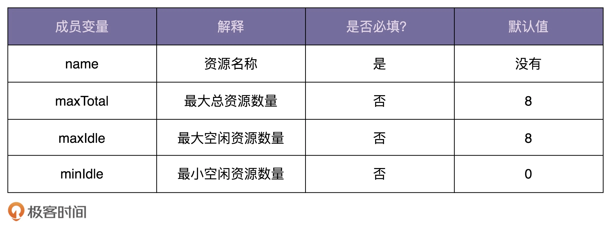
实现这样一个类对你来说并不是件难事。最常见、最容易想到的实现思路如下代码所示。因为 maxTotal、maxIdle、minIdle 不是必填变量，所以在创建 ResourcePoolConfig 对象的时候，我们通过往构造函数中，给这几个参数传递 null 值，来表示使用默认值。
1 2 3 4 5 6 7 8 9 10 11 12 13 14 15 16 17 18 19 20 21 22 23 24 25 26 27 28 29 30 31 32 33 34 35 36 37 38 39 40 public class ResourcePoolConfig { private static final int DEFAULT_MAX_TOTAL = 8 ; private static final int DEFAULT_MAX_IDLE = 8 ; private static final int DEFAULT_MIN_IDLE = 0 ; private String name; private int maxTotal = DEFAULT_MAX_TOTAL; private int maxIdle = DEFAULT_MAX_IDLE; private int minIdle = DEFAULT_MIN_IDLE; public ResourcePoolConfig (String name, Integer maxTotal, Integer maxIdle, Integer minIdle) { if (StringUtils.isBlank(name)) { throw new IllegalArgumentException ("name should not be empty." ); } this .name = name; if (maxTotal != null ) { if (maxTotal <= 0 ) { throw new IllegalArgumentException ("maxTotal should be positive." ); } this .maxTotal = maxTotal; } if (maxIdle != null ) { if (maxIdle < 0 ) { throw new IllegalArgumentException ("maxIdle should not be negative." ); } this .maxIdle = maxIdle; } if (minIdle != null ) { if (minIdle < 0 ) { throw new IllegalArgumentException ("minIdle should not be negative." ); } this .minIdle = minIdle; } } }
现在，ResourcePoolConfig 只有 4 个可配置项，对应到构造函数中，也只有 4 个参数，参数的个数不多。但是，如果可配置项逐渐增多，变成了 8 个、10 个，甚至更多，那继续沿用现在的设计思路，构造函数的参数列表会变得很长，代码在可读性和易用性上都会变差。在使用构造函数的时候，我们就容易搞错各参数的顺序，传递进错误的参数值，导致非常隐蔽的 bug。
1 2 ResourcePoolConfig config = new ResourcePoolConfig ("dbconnectionpool" , 16 , null , 8 , null , false , true , 10 , 20 ，false ， true );
解决这个问题的办法你应该也已经想到了，那就是用 set() 函数来给成员变量赋值，以替代冗长的构造函数。我们直接看代码，具体如下所示。其中，配置项 name 是必填的，所以我们把它放到构造函数中设置，强制创建类对象的时候就要填写。其他配置项 maxTotal、maxIdle、minIdle 都不是必填的，所以我们通过 set() 函数来设置，让使用者自主选择填写或者不填写。
1 2 3 4 5 6 7 8 9 10 11 12 13 14 15 16 17 18 19 20 21 22 23 24 25 26 27 28 29 30 31 32 33 34 35 36 37 38 39 40 public class ResourcePoolConfig { private static final int DEFAULT_MAX_TOTAL = 8 ; private static final int DEFAULT_MAX_IDLE = 8 ; private static final int DEFAULT_MIN_IDLE = 0 ; private String name; private int maxTotal = DEFAULT_MAX_TOTAL; private int maxIdle = DEFAULT_MAX_IDLE; private int minIdle = DEFAULT_MIN_IDLE; public ResourcePoolConfig (String name) { if (StringUtils.isBlank(name)) { throw new IllegalArgumentException ("name should not be empty." ); } this .name = name; } public void setMaxTotal (int maxTotal) { if (maxTotal <= 0 ) { throw new IllegalArgumentException ("maxTotal should be positive." ); } this .maxTotal = maxTotal; } public void setMaxIdle (int maxIdle) { if (maxIdle < 0 ) { throw new IllegalArgumentException ("maxIdle should not be negative." ); } this .maxIdle = maxIdle; } public void setMinIdle (int minIdle) { if (minIdle < 0 ) { throw new IllegalArgumentException ("minIdle should not be negative." ); } this .minIdle = minIdle; } }
我们来看新的 ResourcePoolConfig 类该如何使用。我写了一个示例代码，如下所示。没有了冗长的函数调用和参数列表，代码在可读性和易用性上提高了很多。
1 2 3 4 ResourcePoolConfig config = new ResourcePoolConfig ("dbconnectionpool" );config.setMaxTotal(16 ); config.setMaxIdle(8 );
至此，我们仍然没有用到建造者模式，通过构造函数设置必填项，通过 set() 方法设置可选配置项，就能实现我们的设计需求。如果我们把问题的难度再加大点，比如，还需要解决下面这三个问题，那现在的设计思路就不能满足了。
我们刚刚讲到，name 是必填的，所以，我们把它放到构造函数中，强制创建对象的时候就设置。如果必填的配置项有很多，把这些必填配置项都放到构造函数中设置，那构造函数就又会出现参数列表很长的问题。如果我们把必填项也通过 set() 方法设置，那校验这些必填项是否已经填写的逻辑就无处安放了；
除此之外，假设配置项之间有一定的依赖关系，比如，如果用户设置了 maxTotal、maxIdle、minIdle 其中一个，就必须显式地设置另外两个；或者配置项之间有一定的约束条件，比如，maxIdle 和 minIdle 要小于等于 maxTotal。如果我们继续使用现在的设计思路，那这些配置项之间的依赖关系或者约束条件的校验逻辑就无处安放了；
如果我们希望 ResourcePoolConfig 类对象是不可变对象，也就是说，对象在创建好之后，就不能再修改内部的属性值。要实现这个功能，我们就不能在 ResourcePoolConfig 类中暴露 set() 方法；
我们可以把校验逻辑放置到 Builder 类中，先创建建造者，并且通过 set() 方法设置建造者的变量值，然后在使用 build() 方法真正创建对象之前，做集中的校验，校验通过之后才会创建对象。除此之外，我们把 ResourcePoolConfig 的构造函数改为 private 私有权限。这样我们就只能通过建造者来创建 ResourcePoolConfig 类对象。并且，ResourcePoolConfig 没有提供任何 set() 方法，这样我们创建出来的对象就是不可变对象了。
1 2 3 4 5 6 7 8 9 10 11 12 13 14 15 16 17 18 19 20 21 22 23 24 25 26 27 28 29 30 31 32 33 34 35 36 37 38 39 40 41 42 43 44 45 46 47 48 49 50 51 52 53 54 55 56 57 58 59 60 61 62 63 64 65 66 67 68 69 70 71 72 73 74 75 76 77 78 79 80 81 82 83 public class ResourcePoolConfig { private String name; private int maxTotal; private int maxIdle; private int minIdle; private ResourcePoolConfig (Builder builder) { this .name = builder.name; this .maxTotal = builder.maxTotal; this .maxIdle = builder.maxIdle; this .minIdle = builder.minIdle; } public static class Builder { private static final int DEFAULT_MAX_TOTAL = 8 ; private static final int DEFAULT_MAX_IDLE = 8 ; private static final int DEFAULT_MIN_IDLE = 0 ; private String name; private int maxTotal = DEFAULT_MAX_TOTAL; private int maxIdle = DEFAULT_MAX_IDLE; private int minIdle = DEFAULT_MIN_IDLE; public ResourcePoolConfig build () { if (StringUtils.isBlank(name)) { throw new IllegalArgumentException ("..." ); } if (maxIdle > maxTotal) { throw new IllegalArgumentException ("..." ); } if (minIdle > maxTotal || minIdle > maxIdle) { throw new IllegalArgumentException ("..." ); } return new ResourcePoolConfig (this ); } public Builder setName (String name) { if (StringUtils.isBlank(name)) { throw new IllegalArgumentException ("..." ); } this .name = name; return this ; } public Builder setMaxTotal (int maxTotal) { if (maxTotal <= 0 ) { throw new IllegalArgumentException ("..." ); } this .maxTotal = maxTotal; return this ; } public Builder setMaxIdle (int maxIdle) { if (maxIdle < 0 ) { throw new IllegalArgumentException ("..." ); } this .maxIdle = maxIdle; return this ; } public Builder setMinIdle (int minIdle) { if (minIdle < 0 ) { throw new IllegalArgumentException ("..." ); } this .minIdle = minIdle; return this ; } } } ResourcePoolConfig config = new ResourcePoolConfig .Builder() .setName("dbconnectionpool" ) .setMaxTotal(16 ) .setMaxIdle(10 ) .setMinIdle(12 ) .build();
建造者模式是让建造者类来负责对象的创建工作。工厂模式，是由工厂类来负责对象创建的工作。
实际上，工厂模式是用来创建不同但是相关类型的对象 （继承同一父类或者接口的一组子类），由给定的参数来决定创建哪种类型的对象。建造者模式是用来创建一种类型的复杂对象，通过设置不同的可选参数，“定制化”地创建不同的对象。
网上有一个经典的例子很好地解释了两者的区别。顾客走进一家餐馆点餐，我们利用工厂模式，根据用户不同的选择，来制作不同的食物，比如披萨、汉堡、沙拉。对于披萨来说，用户又有各种配料可以定制，比如奶酪、西红柿、起司，我们通过建造者模式根据用户选择的不同配料来制作披萨。
如果对象的创建成本比较大，而同一个类的不同对象之间差别不大（大部分字段都相同），在这种情况下，我们可以利用对已有对象（原型）进行复制（或者叫拷贝）的方式来创建新对象，以达到节省创建时间的目的。这种基于原型来创建对象的方式就叫作原型设计模式，简称原型模式。
实际上，创建对象包含的申请内存、给成员变量赋值这一过程，本身并不会花费太多时间，或者说对于大部分业务系统来说，这点时间完全是可以忽略的。应用一个复杂的模式，只得到一点点的性能提升，这就是所谓的过度设计，得不偿失。
但是，如果对象中的数据需要经过复杂的计算才能得到（比如排序、计算哈希值），或者需要从 RPC、网络、数据库、文件系统等非常慢速的 IO 中读取，这种情况下，我们就可以利用原型模式，从其他已有对象中直接拷贝得到，而不用每次在创建新对象的时候，都重复执行这些耗时的操作。
举个例子，假设数据库中存储了大约 10 万条“搜索关键词”信息，每条信息包含关键词、关键词被搜索的次数、信息最近被更新的时间等。系统 A 在启动的时候会加载这份数据到内存中，用于处理某些其他的业务需求。为了方便快速地查找某个关键词对应的信息，我们给关键词建立一个散列表索引。
如果是 Java 语言，可以直接使用语言中提供的 HashMap 容器来实现。其中，HashMap 的 key 为搜索关键词，value 为关键词详细信息（比如搜索次数）。我们只需要将数据从数据库中读取出来，放入 HashMap 就可以了。
不过，我们还有另外一个系统 B，专门用来分析搜索日志，定期（比如间隔 10 分钟）批量地更新数据库中的数据，并且标记为新的数据版本。比如，在下面的示例图中，我们对 v2 版本的数据进行更新，得到 v3 版本的数据。这里我们假设只有更新和新添关键词，没有删除关键词的行为。
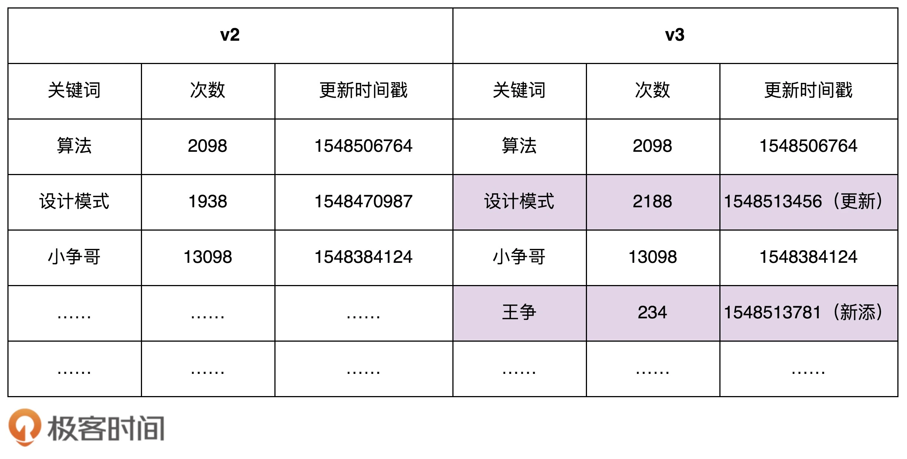
为了保证系统 A 中数据的实时性，系统 A 需要定期根据数据库中的数据，更新内存中的索引和数据。实现这个需求，我们只需要在系统 A 中，记录当前数据的版本 Va 对应的更新时间 Ta，从数据库中捞出更新时间大于 Ta 的所有搜索关键词，也就是找出 Va 版本与最新版本数据的“差集”，然后针对差集中的每个关键词进行处理。如果它已经在散列表中存在了，我们就更新相应的搜索次数、更新时间等信息；如果它在散列表中不存在，我们就将它插入到散列表中。
按照这个思路，我们可以写出下面这样的代码：
1 2 3 4 5 6 7 8 9 10 11 12 13 14 15 16 17 18 19 20 21 22 23 24 25 26 27 28 public class Demo { private ConcurrentHashMap<String, SearchWord> currentKeywords = new ConcurrentHashMap <>(); private long lastUpdateTime = -1 ; public void refresh () { List<SearchWord> toBeUpdatedSearchWords = getSearchWords(lastUpdateTime); long maxNewUpdatedTime = lastUpdateTime; for (SearchWord searchWord : toBeUpdatedSearchWords) { if (searchWord.getLastUpdateTime() > maxNewUpdatedTime) { maxNewUpdatedTime = searchWord.getLastUpdateTime(); } if (currentKeywords.containsKey(searchWord.getKeyword())) { currentKeywords.replace(searchWord.getKeyword(), searchWord); } else { currentKeywords.put(searchWord.getKeyword(), searchWord); } } lastUpdateTime = maxNewUpdatedTime; } private List<SearchWord> getSearchWords (long lastUpdateTime) { return null ; } }
不过，现在，我们有一个特殊的要求：任何时刻，系统 A 中的所有数据都必须是同一个版本的，要么都是版本 a，要么都是版本 b，不能有的是版本 a，有的是版本 b。那刚刚的更新方式就不能满足这个要求了。除此之外，我们还要求：在更新内存数据的时候，系统 A 不能处于不可用状态，也就是不能停机更新数据。
按照这个思路，我们把正在使用的数据的版本定义为“服务版本”，当我们要更新内存中的数据的时候，我们并不是直接在服务版本（假设是版本 a 数据）上更新，而是重新创建另一个版本数据（假设是版本 b 数据），等新的版本数据建好之后，再一次性地将服务版本从版本 a 切换到版本 b。这样既保证了数据一直可用，又避免了中间状态的存在。
1 2 3 4 5 6 7 8 9 10 11 12 13 14 15 16 17 18 19 20 21 public class Demo { private HashMap<String, SearchWord> currentKeywords=new HashMap <>(); public void refresh () { HashMap<String, SearchWord> newKeywords = new LinkedHashMap <>(); List<SearchWord> toBeUpdatedSearchWords = getSearchWords(); for (SearchWord searchWord : toBeUpdatedSearchWords) { newKeywords.put(searchWord.getKeyword(), searchWord); } currentKeywords = newKeywords; } private List<SearchWord> getSearchWords () { return null ; } }
不过，在上面的代码实现中，newKeywords 构建的成本比较高。我们需要将这 10 万条数据从数据库中读出，然后计算哈希值，构建 newKeywords。这个过程显然是比较耗时。为了提高效率，原型模式就派上用场了。
我们拷贝 currentKeywords 数据到 newKeywords 中，然后从数据库中只捞出新增或者有更新的关键词，更新到 newKeywords 中。而相对于 10 万条数据来说，每次新增或者更新的关键词个数是比较少的，所以，这种策略大大提高了数据更新的效率。
1 2 3 4 5 6 7 8 9 10 11 12 13 14 15 16 17 18 19 20 21 22 23 24 25 26 27 28 29 30 31 32 33 34 public class Demo { private HashMap<String, SearchWord> currentKeywords=new HashMap <>(); private long lastUpdateTime = -1 ; public void refresh () { HashMap<String, SearchWord> newKeywords = (HashMap<String, SearchWord>) currentKeywords.clone(); List<SearchWord> toBeUpdatedSearchWords = getSearchWords(lastUpdateTime); long maxNewUpdatedTime = lastUpdateTime; for (SearchWord searchWord : toBeUpdatedSearchWords) { if (searchWord.getLastUpdateTime() > maxNewUpdatedTime) { maxNewUpdatedTime = searchWord.getLastUpdateTime(); } if (newKeywords.containsKey(searchWord.getKeyword())) { SearchWord oldSearchWord = newKeywords.get(searchWord.getKeyword()); oldSearchWord.setCount(searchWord.getCount()); oldSearchWord.setLastUpdateTime(searchWord.getLastUpdateTime()); } else { newKeywords.put(searchWord.getKeyword(), searchWord); } } lastUpdateTime = maxNewUpdatedTime; currentKeywords = newKeywords; } private List<SearchWord> getSearchWords (long lastUpdateTime) { return null ; } }
这里利用了 Java 中的 clone() 语法来复制一个对象。如果熟悉的语言没有这个语法，那把数据从 currentKeywords 中一个个取出来，然后再重新计算哈希值，放入到 newKeywords 中也是可以接受的。毕竟，最耗时的还是从数据库中取数据的操作。相对于数据库的 IO 操作来说，内存操作和 CPU 计算的耗时都是可以忽略的。
原型模式将克隆过程委派给被克隆的实际对象。 模式为所有支持克隆的对象声明了一个通用接口， 该接口让你能够克隆对象， 同时又无需将代码和对象所属类耦合。 通常情况下， 这样的接口中仅包含一个clone方法。
所有的类对 clone 方法的实现都非常相似。该方法会创建一个当前类的对象， 然后将原始对象所有的成员变量值复制到新建的类中。 你甚至可以复制私有成员变量， 因为绝大部分编程语言都允许对象访问其同类对象的私有成员变量。
支持克隆的对象即为原型。
原型模式有两种实现方法，深拷贝和浅拷贝。浅拷贝只会复制对象中基本数据类型数据和引用对象的内存地址，不会递归地复制引用对象，而深拷贝得到的是一份完完全全独立的对象。所以，深拷贝比起浅拷贝来说，更加耗时，更加耗内存空间。
如果要拷贝的对象是不可变对象，浅拷贝共享不可变对象是没问题的，但对于可变对象来说，浅拷贝得到的对象和原始对象会共享部分数据，就有可能出现数据被修改的风险，也就变得复杂多了。除非像前面的那个例子，需要从数据库中加载 10 万条数据并构建散列表索引，操作非常耗时，这种情况下比较推荐使用浅拷贝，否则，没有充分的理由，不要为了一点点的性能提升而使用浅拷贝。
创建型模式主要解决对象的创建问题，封装复杂的创建过程，解耦对象的创建代码和使用代码。其中，单例模式用来创建全局唯一的对象。工厂模式用来创建不同但是相关类型的对象（继承同一父类或者接口的一组子类），由给定的参数来决定创建哪种类型的对象。建造者模式是用来创建复杂对象，可以通过设置不同的可选参数，“定制化”地创建不同的对象。原型模式针对创建成本比较大的对象，利用对已有对象进行复制的方式进行创建，以达到节省创建时间的目的。
结构型模式主要总结了一些类或对象组合在一起的经典结构，这些经典的结构可以解决特定应用场景的问题。结构型模式包括：代理模式、桥接模式、装饰器模式、适配器模式、门面模式、组合模式、享元模式。
代理模式（Proxy Design Pattern）的原理和代码实现都不难掌握。它在不改变原始类（或叫被代理类）代码的情况下，通过引入代理类来给原始类附加功能。
假设我们正在开发 MetricsCollector 类，用来收集接口请求的原始数据，比如访问时间、处理时长等。
一开始，我们会采用如下的方式来使用 MetricsCollector 类：
1 2 3 4 5 6 7 8 9 10 11 12 13 14 15 16 17 18 19 20 21 22 23 24 25 26 27 28 29 30 31 public class UserController { private MetricsCollector metricsCollector; public UserVo login (String telephone, String password) { long startTimestamp = System.currentTimeMillis(); long endTimeStamp = System.currentTimeMillis(); long responseTime = endTimeStamp - startTimestamp; RequestInfo requestInfo = new RequestInfo ("login" , responseTime, startTimestamp); metricsCollector.recordRequest(requestInfo); } public UserVo register (String telephone, String password) { long startTimestamp = System.currentTimeMillis(); long endTimeStamp = System.currentTimeMillis(); long responseTime = endTimeStamp - startTimestamp; RequestInfo requestInfo = new RequestInfo ("register" , responseTime, startTimestamp); metricsCollector.recordRequest(requestInfo); } }
上面的写法有两个问题。第一，性能计数器框架代码侵入到业务代码中，跟业务代码高度耦合。如果未来需要替换这个框架，那替换的成本会比较大。第二，收集接口请求的代码跟业务代码无关，本就不应该放到一个类中。业务类最好职责更加单一，只聚焦业务处理。
为了将框架代码和业务代码解耦，代理模式就派上用场了。代理类 UserControllerProxy 和原始类 UserController 实现相同的接口 IUserController。UserController 类只负责业务功能。代理类 UserControllerProxy 负责在业务代码执行前后附加其他逻辑代码，并通过委托的方式调用原始类来执行业务代码。
1 2 3 4 5 6 7 8 9 10 11 12 13 14 15 16 17 18 19 20 21 22 23 24 25 26 27 28 29 30 31 32 33 34 35 36 37 38 39 40 41 42 43 44 45 46 47 48 49 50 51 52 53 54 55 56 57 58 59 60 61 62 63 64 65 public interface IUserController { UserVo login (String telephone, String password) ; UserVo register (String telephone, String password) ; } public class UserController implements IUserController { @Override public UserVo login (String telephone, String password) { } @Override public UserVo register (String telephone, String password) { } } public class UserControllerProxy implements IUserController { private MetricsCollector metricsCollector; private UserController userController; public UserControllerProxy (UserController userController) { this .userController = userController; this .metricsCollector = new MetricsCollector (); } @Override public UserVo login (String telephone, String password) { long startTimestamp = System.currentTimeMillis(); UserVo userVo = userController.login(telephone, password); long endTimeStamp = System.currentTimeMillis(); long responseTime = endTimeStamp - startTimestamp; RequestInfo requestInfo = new RequestInfo ("login" , responseTime, startTimestamp); metricsCollector.recordRequest(requestInfo); return userVo; } @Override public UserVo register (String telephone, String password) { long startTimestamp = System.currentTimeMillis(); UserVo userVo = userController.register(telephone, password); long endTimeStamp = System.currentTimeMillis(); long responseTime = endTimeStamp - startTimestamp; RequestInfo requestInfo = new RequestInfo ("register" , responseTime, startTimestamp); metricsCollector.recordRequest(requestInfo); return userVo; } } IUserController userController = new UserControllerProxy (new UserController ());
参照基于接口而非实现编程的设计思想，将原始类对象替换为代理类对象的时候，为了让代码改动尽量少，在刚刚的代理模式的代码实现中，代理类和原始类需要实现相同的接口。
如果原始类并没有定义接口，并且原始类代码并不是我们开发维护的（比如它来自一个第三方的类库），我们也没办法直接修改原始类，给它重新定义一个接口。对于这种外部类的扩展，我们一般都是采用继承的方式。这里也不例外。我们让代理类继承原始类，然后扩展附加功能。
1 2 3 4 5 6 7 8 9 10 11 12 13 14 15 16 17 18 19 20 21 22 23 24 25 26 27 28 29 30 31 32 33 34 35 public class UserControllerProxy extends UserController { private MetricsCollector metricsCollector; public UserControllerProxy () { this .metricsCollector = new MetricsCollector (); } public UserVo login (String telephone, String password) { long startTimestamp = System.currentTimeMillis(); UserVo userVo = super .login(telephone, password); long endTimeStamp = System.currentTimeMillis(); long responseTime = endTimeStamp - startTimestamp; RequestInfo requestInfo = new RequestInfo ("login" , responseTime, startTimestamp); metricsCollector.recordRequest(requestInfo); return userVo; } public UserVo register (String telephone, String password) { long startTimestamp = System.currentTimeMillis(); UserVo userVo = super .register(telephone, password); long endTimeStamp = System.currentTimeMillis(); long responseTime = endTimeStamp - startTimestamp; RequestInfo requestInfo = new RequestInfo ("register" , responseTime, startTimestamp); metricsCollector.recordRequest(requestInfo); return userVo; } } UserController userController = new UserControllerProxy ();
不过，刚刚的代码实现还是有点问题。一方面，我们需要在代理类中，将原始类中的所有的方法，都重新实现一遍，并且为每个方法都附加相似的代码逻辑。另一方面，如果要添加的附加功能的类有不止一个，我们需要针对每个类都创建一个代理类。
如果有 50 个要添加附加功能的原始类，那我们就要创建 50 个对应的代理类。这会导致项目中类的个数成倍增加，增加了代码维护成本。并且，每个代理类中的代码都有点像模板式的“重复”代码，也增加了不必要的开发成本。
我们可以使用动态代理来解决这个问题。所谓动态代理（Dynamic Proxy），就是我们不事先为每个原始类编写代理类，而是在运行的时候，动态地创建原始类对应的代理类，然后在系统中用代理类替换掉原始类。
Java 语言，实现动态代理就是件很简单的事情。因为 Java 语言本身就已经提供了动态代理的语法（实际上，动态代理底层依赖的就是 Java 的反射语法）。
1 2 3 4 5 6 7 8 9 10 11 12 13 14 15 16 17 18 19 20 21 22 23 24 25 26 27 28 29 30 31 32 33 34 35 36 37 38 public class MetricsCollectorProxy { private MetricsCollector metricsCollector; public MetricsCollectorProxy () { this .metricsCollector = new MetricsCollector (); } public Object createProxy (Object proxiedObject) { Class<?>[] interfaces = proxiedObject.getClass().getInterfaces(); DynamicProxyHandler handler = new DynamicProxyHandler (proxiedObject); return Proxy.newProxyInstance(proxiedObject.getClass().getClassLoader(), interfaces, handler); } private class DynamicProxyHandler implements InvocationHandler { private Object proxiedObject; public DynamicProxyHandler (Object proxiedObject) { this .proxiedObject = proxiedObject; } @Override public Object invoke (Object proxy, Method method, Object[] args) throws Throwable { long startTimestamp = System.currentTimeMillis(); Object result = method.invoke(proxiedObject, args); long endTimeStamp = System.currentTimeMillis(); long responseTime = endTimeStamp - startTimestamp; String apiName = proxiedObject.getClass().getName() + ":" + method.getName(); RequestInfo requestInfo = new RequestInfo (apiName, responseTime, startTimestamp); metricsCollector.recordRequest(requestInfo); return result; } } } MetricsCollectorProxy proxy = new MetricsCollectorProxy ();IUserController userController = (IUserController) proxy.createProxy(new UserController ());
实际上，Spring AOP 底层的实现原理就是基于动态代理。用户配置好需要给哪些类创建代理，并定义好在执行原始类的业务代码前后执行哪些附加功能。Spring 为这些类创建动态代理对象，并在 JVM 中替代原始类对象。原本在代码中执行的原始类的方法，被换作执行代理类的方法，也就实现了给原始类添加附加功能的目的。
代理模式最常用的一个应用场景就是，在业务系统中开发一些非功能性需求，比如：监控、统计、鉴权、限流、事务、幂等、日志。我们将这些附加功能与业务功能解耦，放到代理类中统一处理，让程序员只需要关注业务方面的开发。
实际上，RPC 框架也可以看作一种代理模式，GoF 的《设计模式》一书中把它称作远程代理。通过远程代理，将网络通信、数据编解码等细节隐藏起来。客户端在使用 RPC 服务的时候，就像使用本地函数一样，无需了解跟服务器交互的细节。除此之外，RPC 服务的开发者也只需要开发业务逻辑，就像开发本地使用的函数一样，不需要关注跟客户端的交互细节。
另外，假设我们要开发一个接口请求的缓存功能，对于某些接口请求，如果入参相同，在设定的过期时间内，直接返回缓存结果，而不用重新进行逻辑处理。比如，针对获取用户个人信息的需求，我们可以开发两个接口，一个支持缓存，一个支持实时查询。对于需要实时数据的需求，我们让其调用实时查询接口，对于不需要实时数据的需求，我们让其调用支持缓存的接口。
最简单的实现方法就是刚刚我们讲到的，给每个需要支持缓存的查询需求都开发两个不同的接口，一个支持缓存，一个支持实时查询。但是，这样做显然增加了开发成本，而且会让代码看起来非常臃肿（接口个数成倍增加），也不方便缓存接口的集中管理（增加、删除缓存接口）、集中配置（比如配置每个接口缓存过期时间）。
针对这些问题，代理模式就能派上用场了，确切地说，应该是动态代理。如果是基于 Spring 框架来开发的话，那就可以在 AOP 切面中完成接口缓存的功能。在应用启动的时候，我们从配置文件中加载需要支持缓存的接口，以及相应的缓存策略（比如过期时间）等。当请求到来的时候，我们在 AOP 切面中拦截请求，如果请求中带有支持缓存的字段（比如 http://…?..&cached=true），我们便从缓存（内存缓存或者 Redis 缓存等）中获取数据直接返回。
桥接模式，也叫作桥梁模式，英文是 Bridge Design Pattern 。关于桥接模式有两种理解：
将抽象和实现解耦，让它们可以独立变化；
一个类存在两个（或多个）独立变化的维度，我们通过组合的方式，让这两个（或多个）维度可以独立进行扩展；
看个例子，JDBC 驱动是桥接模式的经典应用。具体代码如下所示：
1 2 3 4 5 6 7 8 9 10 Class.forName("com.mysql.jdbc.Driver" ); String url = "jdbc:mysql://localhost:3306/sample_db?user=root&password=your_password" ;Connection con = DriverManager.getConnection(url);Statement stmt = con.createStatement()；String query = "select * from test" ;ResultSet rs=stmt.executeQuery(query); while (rs.next()) { rs.getString(1 ); rs.getInt(2 ); }
如果我们想要把 MySQL 数据库换成 Oracle 数据库，只需要把第一行代码中的 com.mysql.jdbc.Driver 换成 oracle.jdbc.driver.OracleDriver 就可以了。当然，也有更灵活的实现方式，我们可以把需要加载的 Driver 类写到配置文件中，当程序启动的时候，自动从配置文件中加载，这样在切换数据库的时候，我们都不需要修改代码，只需要修改配置文件就可以了。
为了弄清楚如何实现的这么优雅，来看看源码是如何实现的：
1 2 3 4 5 6 7 8 9 10 11 12 13 14 15 16 17 18 19 20 21 package com.mysql.jdbc;import java.sql.SQLException;public class Driver extends NonRegisteringDriver implements java .sql.Driver { static { try { java.sql.DriverManager.registerDriver(new Driver ()); } catch (SQLException E) { throw new RuntimeException ("Can't register driver!" ); } } public Driver () throws SQLException { } }
我们可以发现，当执行 Class.forName(“com.mysql.jdbc.Driver”) 这条语句的时候，实际上是做了两件事情。第一件事情是要求 JVM 查找并加载指定的 Driver 类，第二件事情是执行该类的静态代码，也就是将 MySQL Driver 注册到 DriverManager 类中。
当我们把具体的 Driver 实现类（比如，com.mysql.jdbc.Driver）注册到 DriverManager 之后，后续所有对 JDBC 接口的调用，都会委派到对具体的 Driver 实现类来执行。而 Driver 实现类都实现了相同的接口（java.sql.Driver），这也是可以灵活切换 Driver 的原因。
1 2 3 4 5 6 7 8 9 10 11 12 13 14 15 16 17 18 19 20 21 22 23 24 25 26 27 28 29 30 public class DriverManager { private final static CopyOnWriteArrayList<DriverInfo> registeredDrivers = new CopyOnWriteArrayList <DriverInfo>(); static { loadInitialDrivers(); println("JDBC DriverManager initialized" ); } public static synchronized void registerDriver (java.sql.Driver driver) throws SQLException { if (driver != null ) { registeredDrivers.addIfAbsent(new DriverInfo (driver)); } else { throw new NullPointerException (); } } public static Connection getConnection (String url, String user, String password) throws SQLException { java.util.Properties info = new java .util.Properties(); if (user != null ) { info.put("user" , user); } if (password != null ) { info.put("password" , password); } return (getConnection(url, info, Reflection.getCallerClass())); } }
桥接模式的定义是“将抽象和实现解耦，让它们可以独立变化”。那弄懂定义中“抽象”和“实现”两个概念，就是理解桥接模式的关键。那在 JDBC 这个例子中，什么是抽象 ？什么是实现 呢？
实际上，JDBC 本身就相当于抽象 。注意，这里所说的抽象 ，指的并非抽象类 或接口 ，而是跟具体的数据库无关的、被抽象出来的一套类库 。具体的 Driver（比如，com.mysql.jdbc.Driver）就相当于实现 。注意，这里所说的实现 ，也并非指接口的实现类 ，而是跟具体数据库相关的一套类库 。JDBC 和 Driver 独立开发，通过对象之间的组合关系，组装在一起。JDBC 的所有逻辑操作，最终都委托给 Driver 来执行。它们之间的关系如下图所示：
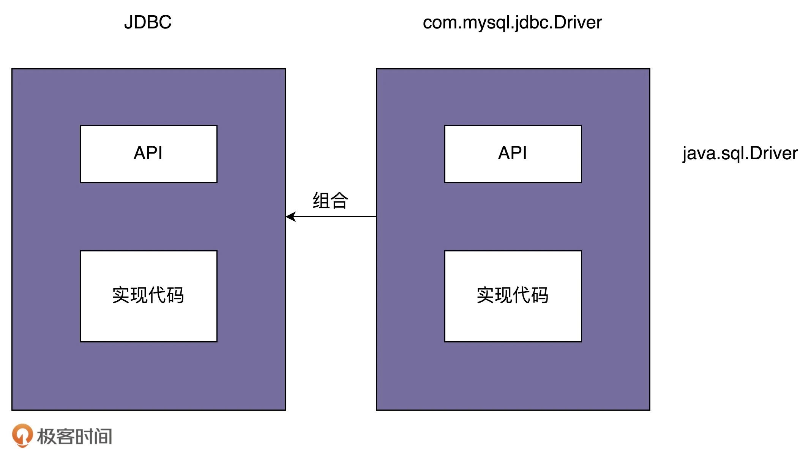
在这里，JDBC(抽象) 和 Driver（接口） 都是可以独立演进的，JDBC 本身不完成任何具体的工作，它只是将工作委派给具体的实现层。
再举个例子，在实际的程序中， 抽象出来的图形用户界面（GUI）， 由底层操作系统代码（API）实现，GUI 层调用 API 层来对用户的各种操作做出响应。
一般来说， 你可以在两个独立方向上扩展这种应用：
开发多个不同的 GUI （例如面向普通用户和管理员进行分别配置）；
支持多个不同的 API （例如， 能够在 Windows、 Linux 和 macOS 上运行该程序）；
装饰器模式主要解决继承关系过于复杂的问题，通过组合来替代继承。它主要的作用是给原始类添加增强功能。这也是判断是否该用装饰器模式的一个重要的依据。除此之外，装饰器模式还有一个特点，那就是可以对原始类嵌套使用多个装饰器。为了满足这个应用场景，在设计的时候，装饰器类需要跟原始类继承相同的抽象类或者接口。
举个 Java 的例子，Java IO 类库非常庞大和复杂，有几十个类，负责 IO 数据的读取和写入。如果对 Java IO 类做一下分类，我们可以从下面两个维度将它划分为四类。具体如下所示：
输入输出
字节留
字符流
输入流
InputStreamReader
输出流
OutputStreamWriter
针对不同的读取和写入场景，Java IO 又在这四个父类基础之上，扩展出了很多子类。具体如下所示：
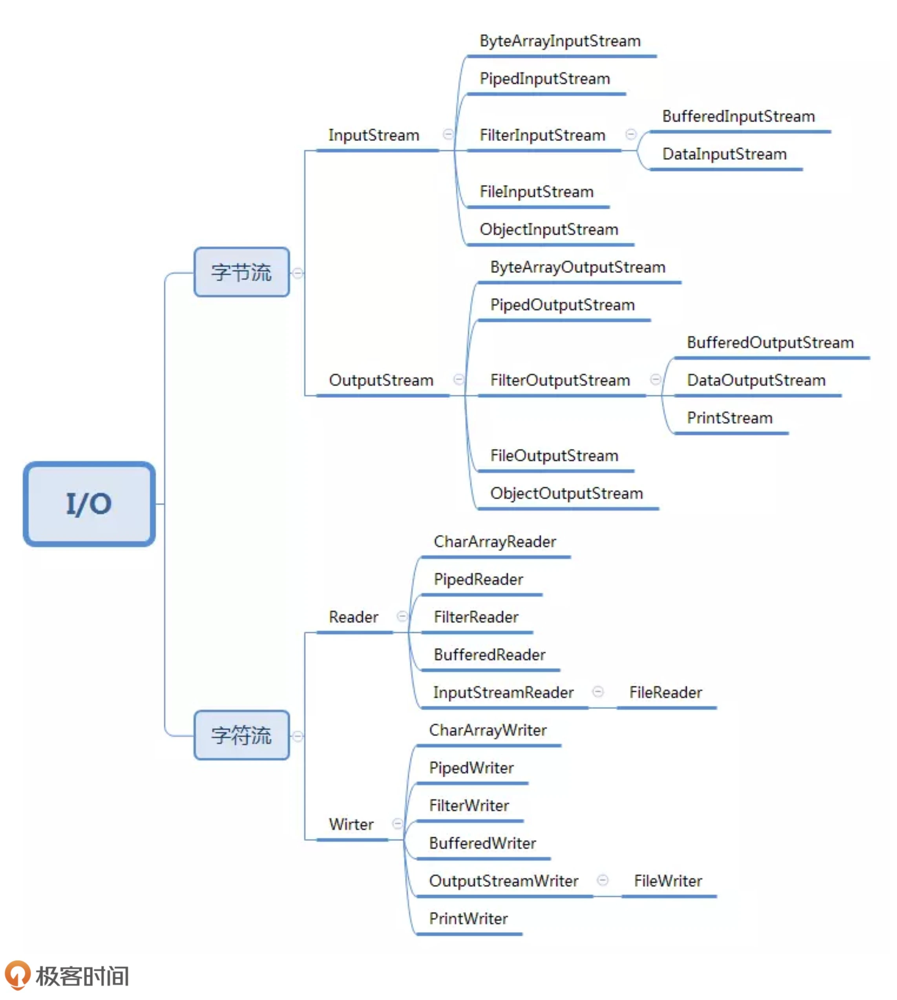
这么多类在使用起来对于初学者造成了不少困惑，当我们需要以缓存的形式读取文件时，我们需要这么去写：
1 2 3 4 5 6 InputStream in = new FileInputStream ("/user/wangzheng/test.txt" );InputStream bin = new BufferedInputStream (in);byte [] data = new byte [128 ];while (bin.read(data) != -1 ) { }
可能在想，还不如下面这种方式简洁明了：
1 2 3 4 5 InputStream bin = new BufferedFileInputStream ("/user/wangzheng/test.txt" );byte [] data = new byte [128 ];while (bin.read(data) != -1 ) { }
然而如果 InputStream 只有一个子类 FileInputStream 的话，那我们在 FileInputStream 基础之上，再设计一个孙子类 BufferedFileInputStream，也算是可以接受的，毕竟继承结构还算简单。但实际上，继承 InputStream 的子类有很多。我们需要给每一个 InputStream 的子类，再继续派生支持缓存读取的子类。
除了支持缓存读取之外，如果我们还需要对功能进行其他方面的增强，比如下面的 DataInputStream 类，支持按照基本数据类型（int、boolean、long 等）来读取数据。
1 2 3 4 FileInputStream in = new FileInputStream ("/user/wangzheng/test.txt" );DataInputStream din = new DataInputStream (in);int data = din.readInt();
在这种情况下，如果我们继续按照继承的方式来实现的话，就需要再继续派生出 DataFileInputStream、DataPipedInputStream 等类。如果我们还需要既支持缓存、又支持按照基本类型读取数据的类，那就要再继续派生出 BufferedDataFileInputStream、BufferedDataPipedInputStream 等 n 多类。这还只是附加了两个增强功能，如果我们需要附加更多的增强功能，那就会导致组合爆炸，类继承结构变得无比复杂，代码既不好扩展，也不好维护。这也是我们在第 10 节中讲的不推荐使用继承的原因。
我们之前说过组合优于继承，可以解决因继承导致的类爆炸问题，上面提到的 Java IO 库就是使用了这种模式来解决这里的问题，大致的代码思路如下：
1 2 3 4 5 6 7 8 9 10 11 12 13 14 15 16 17 18 19 20 21 22 23 24 25 26 27 28 29 30 31 32 33 34 35 36 37 38 39 40 41 42 43 44 45 46 47 48 49 50 51 public abstract class InputStream { public int read (byte b[]) throws IOException { return read(b, 0 , b.length); } public int read (byte b[], int off, int len) throws IOException { } public long skip (long n) throws IOException { } public int available () throws IOException { return 0 ; } public void close () throws IOException {} public synchronized void mark (int readlimit) {} public synchronized void reset () throws IOException { throw new IOException ("mark/reset not supported" ); } public boolean markSupported () { return false ; } } public class BufferedInputStream extends InputStream { protected volatile InputStream in; protected BufferedInputStream (InputStream in) { this .in = in; } } public class DataInputStream extends InputStream { protected volatile InputStream in; protected DataInputStream (InputStream in) { this .in = in; } }
通过这个例子，不能说装饰器就是简单的用组合代替继承 ，装饰器模式相对于简单的组合关系，还有两个比较特殊的地方。
装饰器类和原始类继承同样的父类，这样我们可以对原始类“嵌套”多个装饰器类。比如，下面这样一段代码，我们对 FileInputStream 嵌套了两个装饰器类：BufferedInputStream 和 DataInputStream，让它既支持缓存读取，又支持按照基本数据类型来读取数据。 1 2 3 4 InputStream in = new FileInputStream ("/user/wangzheng/test.txt" );InputStream bin = new BufferedInputStream (in);DataInputStream din = new DataInputStream (bin);int data = din.readInt();
装饰器类是对功能的增强，这也是装饰器模式应用场景的一个重要特点。实际上，符合“组合关系”这种代码结构的设计模式有很多，比如之前讲过的代理模式、桥接模式，还有现在的装饰器模式。尽管它们的代码结构很相似，但是每种设计模式的意图是不同的。就拿比较相似的代理模式和装饰器模式来说吧，代理模式中，代理类附加的是跟原始类无关的功能，而在装饰器模式中，装饰器类附加的是跟原始类相关的增强功能。 1 2 3 4 5 6 7 8 9 10 11 12 13 14 15 16 17 18 19 20 21 22 23 24 25 26 27 28 29 30 31 32 33 34 35 36 37 38 39 public interface IA { void f () ; } public class A impelements IA { public void f () { } public class AProxy implements IA { private IA a; public AProxy (IA a) { this .a = a; } public void f () { a.f(); } } public interface IA { void f () ; } public class A implements IA { public void f () { } public class ADecorator implements IA { private IA a; public ADecorator (IA a) { this .a = a; } public void f () { a.f(); } }
但是在 JDK 的源码中，BufferedInputStream、DataInputStream 并非继承自 InputStream，而是另外一个叫 FilterInputStream 的类。是因为 InputStream 是一个抽象类而非接口，而且它的大部分函数（比如 read()、available()）都有默认实现，按理来说，我们只需要在 BufferedInputStream 类中重新实现那些需要增加缓存功能的函数就可以了，其他函数继承 InputStream 的默认实现。但实际上，这样做是行不通的。对于即便是不需要增加缓存功能的函数来说，BufferedInputStream 还是必须把它重新实现一遍，简单包裹对 InputStream 对象的函数调用。具体的代码示例如下所示。如果不重新实现，那 BufferedInputStream 类就无法将最终读取数据的任务，委托给传递进来的 InputStream 对象来完成。
1 2 3 4 5 6 7 8 9 10 11 12 public class BufferedInputStream extends InputStream { protected volatile InputStream in; protected BufferedInputStream (InputStream in) { this .in = in; } public void f () { in.f(); } }
实际上，DataInputStream 也存在跟 BufferedInputStream 同样的问题。为了避免代码重复，Java IO 抽象出了一个装饰器父类 FilterInputStream，代码实现如下所示。InputStream 的所有的装饰器类（BufferedInputStream、DataInputStream）都继承自这个装饰器父类。这样，装饰器类只需要实现它需要增强的方法就可以了，其他方法继承装饰器父类的默认实现。
1 2 3 4 5 6 7 8 9 10 11 12 13 14 15 16 17 18 19 20 21 22 23 24 25 26 27 28 29 30 31 32 33 34 35 36 37 38 39 40 41 42 43 44 public class FilterInputStream extends InputStream { protected volatile InputStream in; protected FilterInputStream (InputStream in) { this .in = in; } public int read () throws IOException { return in.read(); } public int read (byte b[]) throws IOException { return read(b, 0 , b.length); } public int read (byte b[], int off, int len) throws IOException { return in.read(b, off, len); } public long skip (long n) throws IOException { return in.skip(n); } public int available () throws IOException { return in.available(); } public void close () throws IOException { in.close(); } public synchronized void mark (int readlimit) { in.mark(readlimit); } public synchronized void reset () throws IOException { in.reset(); } public boolean markSupported () { return in.markSupported(); } }
顾名思义，这个模式就是用来做适配的，它将不兼容的接口转换为可兼容的接口，让原本由于接口不兼容而不能一起工作的类可以一起工作。
原理很简单，我们再来看下它的代码实现。适配器模式有两种实现方式：类适配器和对象适配器。其中，类适配器使用继承关系来实现，对象适配器使用组合关系来实现。具体的代码实现如下所示。其中，ITarget 表示要转化成的接口定义。Adaptee 是一组不兼容 ITarget 接口定义的接口，Adaptor 将 Adaptee 转化成一组符合 ITarget 接口定义的接口。
1 2 3 4 5 6 7 8 9 10 11 12 13 14 15 16 17 18 19 20 21 22 23 24 25 26 27 28 29 30 31 32 33 34 35 36 37 38 39 40 41 42 43 44 45 46 47 48 49 50 51 52 53 54 55 56 57 58 public interface ITarget { void f1 () ; void f2 () ; void fc () ; } public class Adaptee { public void fa () { public void fb () { public void fc () { } public class Adaptor extends Adaptee implements ITarget { public void f1 () { super .fa(); } public void f2 () { } } public interface ITarget { void f1 () ; void f2 () ; void fc () ; } public class Adaptee { public void fa () { public void fb () { public void fc () { } public class Adaptor implements ITarget { private Adaptee adaptee; public Adaptor (Adaptee adaptee) { this .adaptee = adaptee; } public void f1 () { adaptee.fa(); } public void f2 () { } public void fc () { adaptee.fc(); } }
针对这两种实现方式，在实际的开发中，选择哪个使用，判断的标准主要有两个，一个是 Adaptee 接口的个数，另一个是 Adaptee 和 ITarget 的契合程度。
如果 Adaptee 接口并不多，那两种实现方式都可以；
如果 Adaptee 接口很多，而且 Adaptee 和 ITarget 接口定义大部分都相同，那我们推荐使用类适配器，因为 Adaptor 复用父类 Adaptee 的接口，比起对象适配器的实现方式，Adaptor 的代码量要少一些；
如果 Adaptee 接口很多，而且 Adaptee 和 ITarget 接口定义大部分都不相同，那我们推荐使用对象适配器，因为组合结构相对于继承更加灵活；
说完了原理和实现，讲讲适配器的应用场景。适配器模式的应用场景是接口不兼容，一般来说，适配器模式可以看作一种“补偿模式”，用来补救设计上的缺陷。应用这种模式算是“无奈之举”。如果在设计初期，我们就能协调规避接口不兼容的问题，那这种模式就没有应用的机会了。以下是它的 5 中使用场景：
假设我们依赖的外部系统在接口设计方面有缺陷（比如包含大量静态方法），引入之后会影响到我们自身代码的可测试性。为了隔离设计上的缺陷，我们希望对外部系统提供的接口进行二次封装，抽象出更好的接口设计，这个时候就可以使用适配器模式了。
举个例子：
1 2 3 4 5 6 7 8 9 10 11 12 13 14 15 16 17 18 19 20 21 22 23 24 25 26 27 28 29 30 31 32 33 34 35 36 37 38 39 public class CD { public static void staticFunction1 () { public void uglyNamingFunction2 () { public void tooManyParamsFunction3 (int paramA, int paramB, ...) { public void lowPerformanceFunction4 () { } public interface ITarget { void function1 () ; void function2 () ; void fucntion3 (ParamsWrapperDefinition paramsWrapper) ; void function4 () ; } public class CDAdaptor extends CD implements ITarget { public void function1 () { super .staticFunction1(); } public void function2 () { super .uglyNamingFucntion2(); } public void function3 (ParamsWrapperDefinition paramsWrapper) { super .tooManyParamsFunction3(paramsWrapper.getParamA(), ...); } public void function4 () { } }
某个功能的实现依赖多个外部系统（或者说类）。通过适配器模式，将它们的接口适配为统一的接口定义，然后我们就可以使用多态的特性来复用代码逻辑。
举个例子，假设我们的系统要对用户输入的文本内容做敏感词过滤，为了提高过滤的召回率，我们引入了多款第三方敏感词过滤系统，依次对用户输入的内容进行过滤，过滤掉尽可能多的敏感词。但是，每个系统提供的过滤接口都是不同的。这就意味着我们没法复用一套逻辑来调用各个系统。这个时候，我们就可以使用适配器模式，将所有系统的接口适配为统一的接口定义，这样我们可以复用调用敏感词过滤的代码。
1 2 3 4 5 6 7 8 9 10 11 12 13 14 15 16 17 18 19 20 21 22 23 24 25 26 27 28 29 30 31 32 33 34 35 36 37 38 39 40 41 42 43 44 45 46 47 48 49 50 51 52 53 54 55 56 57 58 59 60 61 62 63 64 65 66 67 68 69 70 71 public class ASensitiveWordsFilter { public String filterSexyWords (String text) { } public String filterPoliticalWords (String text) { } } public class BSensitiveWordsFilter { public String filter (String text) { } } public class CSensitiveWordsFilter { public String filter (String text, String mask) { } } public class RiskManagement { private ASensitiveWordsFilter aFilter = new ASensitiveWordsFilter (); private BSensitiveWordsFilter bFilter = new BSensitiveWordsFilter (); private CSensitiveWordsFilter cFilter = new CSensitiveWordsFilter (); public String filterSensitiveWords (String text) { String maskedText = aFilter.filterSexyWords(text); maskedText = aFilter.filterPoliticalWords(maskedText); maskedText = bFilter.filter(maskedText); maskedText = cFilter.filter(maskedText, "***" ); return maskedText; } } public interface ISensitiveWordsFilter { String filter (String text) ; } public class ASensitiveWordsFilterAdaptor implements ISensitiveWordsFilter { private ASensitiveWordsFilter aFilter; public String filter (String text) { String maskedText = aFilter.filterSexyWords(text); maskedText = aFilter.filterPoliticalWords(maskedText); return maskedText; } } public class RiskManagement { private List<ISensitiveWordsFilter> filters = new ArrayList <>(); public void addSensitiveWordsFilter (ISensitiveWordsFilter filter) { filters.add(filter); } public String filterSensitiveWords (String text) { String maskedText = text; for (ISensitiveWordsFilter filter : filters) { maskedText = filter.filter(maskedText); } return maskedText; } }
当我们把项目中依赖的一个外部系统替换为另一个外部系统的时候，利用适配器模式，可以减少对代码的改动。具体的代码示例如下所示：
1 2 3 4 5 6 7 8 9 10 11 12 13 14 15 16 17 18 19 20 21 22 23 24 25 26 27 28 29 30 31 32 33 34 public interface IA { void fa () ; } public class A implements IA { public void fa () { } public class Demo { private IA a; public Demo (IA a) { this .a = a; } } Demo d = new Demo (new A ());public class BAdaptor implemnts IA { private B b; public BAdaptor (B b) { this .b= b; } public void fa () { b.fb(); } } Demo d = new Demo (new BAdaptor (new B ()));
在做版本升级的时候，对于一些要废弃的接口，我们不直接将其删除，而是暂时保留，并且标注为 deprecated，并将内部实现逻辑委托为新的接口实现。这样做的好处是，让使用它的项目有个过渡期，而不是强制进行代码修改。这也可以粗略地看作适配器模式的一个应用场景。
JDK1.0 中包含一个遍历集合容器的类 Enumeration。JDK2.0 对这个类进行了重构，将它改名为 Iterator 类，并且对它的代码实现做了优化。但是考虑到如果将 Enumeration 直接从 JDK2.0 中删除，那使用 JDK1.0 的项目如果切换到 JDK2.0，代码就会编译不通过。为了避免这种情况的发生，我们必须把项目中所有使用到 Enumeration 的地方，都修改为使用 Iterator 才行。
为了做到兼容使用低版本 JDK 的老代码，我们可以暂时保留 Enumeration 类，并将其实现替换为直接调用 Itertor。代码示例如下所示：
1 2 3 4 5 6 7 8 9 10 11 12 13 14 15 16 public class Collections { public static Emueration emumeration (final Collection c) { return new Enumeration () { Iterator i = c.iterator(); public boolean hasMoreElments () { return i.hashNext(); } public Object nextElement () { return i.next(): } } } }
适配器模式主要用于接口的适配，实际上，它还可以用在不同格式的数据之间的适配。比如，把从不同征信系统拉取的不同格式的征信数据，统一为相同的格式，以方便存储和使用。再比如，Java 中的 Arrays.asList() 也可以看作一种数据适配器，将数组类型的数据转化为集合容器类型。
1 List<String> stooges = Arrays.asList("Larry" , "Moe" , "Curly" );
门面模式，也叫外观模式，原理和实现都特别简单，应用场景也比较明确，主要在接口设计方面使用。
为了保证接口的可复用性（或者叫通用性），我们需要将接口尽量设计得细粒度一点，职责单一一点。但是，如果接口的粒度过小，在接口的使用者开发一个业务功能时，就会导致需要调用 n 多细粒度的接口才能完成。调用者肯定会抱怨接口不好用。相反，如果接口粒度设计得太大，一个接口返回 n 多数据，要做 n 多事情，就会导致接口不够通用、可复用性不好。接口不可复用，那针对不同的调用者的业务需求，我们就需要开发不同的接口来满足，这就会导致系统的接口无限膨胀，门面模式就是用来解决这种问题。
门面模式总结下来有几个应用场景：
门面模式可以用来封装系统的底层实现，隐藏系统的复杂性，提供一组更加简单易用、更高层的接口。比如，Linux 系统调用函数就可以看作一种“门面”。它是 Linux 操作系统暴露给开发者的一组“特殊”的编程接口，它封装了底层更基础的 Linux 内核调用。再比如，Linux 的 Shell 命令，实际上也可以看作一种门面模式的应用。它继续封装系统调用，提供更加友好、简单的命令，让我们可以直接通过执行命令来跟操作系统交互。我们前面也多次讲过，设计原则、思想、模式很多都是相通的，是同一个道理不同角度的表述。实际上，从隐藏实现复杂性，提供更易用接口这个意图来看，门面模式有点类似之前讲到的迪米特法则（最少知识原则）和接口隔离原则：两个有交互的系统，只暴露有限的必要的接口。除此之外，门面模式还有点类似之前提到封装、抽象的设计思想，提供更抽象的接口，封装底层实现细节。
此外利用门面模式还可以解决性能问题。假设有一个系统 A，提供了 a、b、c、d 四个接口。系统 B 完成某个业务功能，需要调用 A 系统的 a、b、d 接口。利用门面模式，我们提供一个包裹 a、b、d 接口调用的门面接口 x，给系统 B 直接使用。
但是让系统 B 直接调用 a、b、d 感觉也没有太大问题，为什么还要提供一个包裹 a、b、d 的接口 x 呢？关于这个问题，通过一个具体的例子来解释一下。
假设我们刚刚提到的系统 A 是一个后端服务器，系统 B 是 App 客户端。App 客户端通过后端服务器提供的接口来获取数据。我们知道，App 和服务器之间是通过移动网络通信的，网络通信耗时比较多，为了提高 App 的响应速度，我们要尽量减少 App 与服务器之间的网络通信次数。
假设，完成某个业务功能（比如显示某个页面信息）需要“依次”调用 a、b、d 三个接口，因自身业务的特点，不支持并发调用这三个接口。如果我们现在发现 App 客户端的响应速度比较慢，排查之后发现，是因为过多的接口调用过多的网络通信。针对这种情况，我们就可以利用门面模式，让后端服务器提供一个包裹 a、b、d 三个接口调用的接口 x。App 客户端调用一次接口 x，来获取到所有想要的数据，将网络通信的次数从 3 次减少到 1 次，也就提高了 App 的响应速度。
上面是一个简单的应用场景，从代码实现的角度来看，该如何组织门面接口和非门面接口？如果门面接口不多，我们完全可以将它跟非门面接口放到一块，也不需要特殊标记，当作普通接口来用即可。如果门面接口很多，我们可以在已有的接口之上，再重新抽象出一层，专门放置门面接口，从类、包的命名上跟原来的接口层做区分。如果门面接口特别多，并且很多都是跨多个子系统的，我们可以将门面接口放到一个新的子系统中。
同样举个例子，在一个金融系统中，有两个业务领域模型，用户和钱包。这两个业务领域模型都对外暴露了一系列接口，比如用户的增删改查接口、钱包的增删改查接口。假设有这样一个业务场景：在用户注册的时候，我们不仅会创建用户（在数据库 User 表中），还会给用户创建一个钱包（在数据库的 Wallet 表中）。
对于这样一个简单的业务需求，我们可以通过依次调用用户的创建接口和钱包的创建接口来完成。但是，用户注册需要支持事务，也就是说，创建用户和钱包的两个操作，要么都成功，要么都失败，不能一个成功、一个失败。
要支持两个接口调用在一个事务中执行，是比较难实现的，这涉及分布式事务问题。虽然我们可以通过引入分布式事务框架或者事后补偿的机制来解决，但代码实现都比较复杂。而最简单的解决方案是，利用数据库事务或者 Spring 框架提供的事务（如果是 Java 语言的话），在一个事务中，执行创建用户和创建钱包这两个 SQL 操作。这就要求两个 SQL 操作要在一个接口中完成，所以，我们可以借鉴门面模式的思想，再设计一个包裹这两个操作的新接口，让新接口在一个事务中执行两个 SQL 操作。
组合模式（Composite Design Pattern）跟之前讲的面向对象设计中的“组合关系（通过组合来组装两个类）”，完全是两码事。这里讲的“组合模式”，主要是用来处理树形结构数据。这里的数据 ，可以简单理解为一组对象集合。
假设我们有这样一个需求：设计一个类来表示文件系统中的目录，能方便地实现下面这些功能：
动态地添加、删除某个目录下的子目录或文件；
统计指定目录下的文件个数；
统计指定目录下的文件总大小；
下面给出这个类的骨架代码，在下面的代码实现中，我们把文件和目录统一用 FileSystemNode 类来表示，并且通过 isFile 属性来区分。
示例
1 2 3 4 5 6 7 8 9 10 11 12 13 14 15 16 17 18 19 20 21 22 23 24 25 26 27 28 29 30 31 32 33 34 35 36 37 38 39 40 public class FileSystemNode { private String path; private boolean isFile; private List<FileSystemNode> subNodes = new ArrayList <>(); public FileSystemNode (String path, boolean isFile) { this .path = path; this .isFile = isFile; } public int countNumOfFiles () { } public long countSizeOfFiles () { } public String getPath () { return path; } public void addSubNode (FileSystemNode fileOrDir) { subNodes.add(fileOrDir); } public void removeSubNode (FileSystemNode fileOrDir) { int size = subNodes.size(); int i = 0 ; for (; i < size; ++i) { if (subNodes.get(i).getPath().equalsIgnoreCase(fileOrDir.getPath())) { break ; } } if (i < size) { subNodes.remove(i); } } }
想要补全其中的 countNumOfFiles() 和 countSizeOfFiles() 这两个函数，并不是件难事，实际上这就是树上的递归遍历算法。对于文件，我们直接返回文件的个数（返回 1）或大小。对于目录，我们遍历目录中每个子目录或者文件，递归计算它们的个数或大小，然后求和，就是这个目录下的文件个数和文件大小。
实现示例
1 2 3 4 5 6 7 8 9 10 11 12 13 14 15 16 17 18 19 20 21 22 23 24 public int countNumOfFiles () { if (isFile) { return 1 ; } int numOfFiles = 0 ; for (FileSystemNode fileOrDir : subNodes) { numOfFiles += fileOrDir.countNumOfFiles(); } return numOfFiles; } public long countSizeOfFiles () { if (isFile) { File file = new File (path); if (!file.exists()) return 0 ; return file.length(); } long sizeofFiles = 0 ; for (FileSystemNode fileOrDir : subNodes) { sizeofFiles += fileOrDir.countSizeOfFiles(); } return sizeofFiles; }
单纯从功能实现角度来说，上面的代码没有问题，已经实现了我们想要的功能。但是，如果我们开发的是一个大型系统，从扩展性（文件或目录可能会对应不同的操作）、业务建模（文件和目录从业务上是两个概念）、代码的可读性（文件和目录区分对待更加符合人们对业务的认知）的角度来说，我们最好对文件和目录进行区分设计，定义为 File 和 Directory 两个类。
按照前面的设计思路，我们对代码进行重构。重构之后的代码如下所示：
1 2 3 4 5 6 7 8 9 10 11 12 13 14 15 16 17 18 19 20 21 22 23 24 25 26 27 28 29 30 31 32 33 34 35 36 37 38 39 40 41 42 43 44 45 46 47 48 49 50 51 52 53 54 55 56 57 58 59 60 61 62 63 64 65 66 67 68 69 70 71 72 73 74 75 76 public abstract class FileSystemNode { protected String path; public FileSystemNode (String path) { this .path = path; } public abstract int countNumOfFiles () ; public abstract long countSizeOfFiles () ; public String getPath () { return path; } } public class File extends FileSystemNode { public File (String path) { super (path); } @Override public int countNumOfFiles () { return 1 ; } @Override public long countSizeOfFiles () { java.io.File file = new java .io.File(path); if (!file.exists()) return 0 ; return file.length(); } } public class Directory extends FileSystemNode { private List<FileSystemNode> subNodes = new ArrayList <>(); public Directory (String path) { super (path); } @Override public int countNumOfFiles () { int numOfFiles = 0 ; for (FileSystemNode fileOrDir : subNodes) { numOfFiles += fileOrDir.countNumOfFiles(); } return numOfFiles; } @Override public long countSizeOfFiles () { long sizeofFiles = 0 ; for (FileSystemNode fileOrDir : subNodes) { sizeofFiles += fileOrDir.countSizeOfFiles(); } return sizeofFiles; } public void addSubNode (FileSystemNode fileOrDir) { subNodes.add(fileOrDir); } public void removeSubNode (FileSystemNode fileOrDir) { int size = subNodes.size(); int i = 0 ; for (; i < size; ++i) { if (subNodes.get(i).getPath().equalsIgnoreCase(fileOrDir.getPath())) { break ; } } if (i < size) { subNodes.remove(i); } } }
如何用上节的实现来表示一个文件系统中的目录树结构。具体的代码示例如下所示：
1 2 3 4 5 6 7 8 9 10 11 12 13 14 15 16 17 18 19 20 21 22 23 24 25 26 27 28 29 30 31 32 33 34 35 36 37 38 39 40 public class Demo { public static void main (String[] args) { Directory fileSystemTree = new Directory ("/" ); Directory node_wz = new Directory ("/wz/" ); Directory node_xzg = new Directory ("/xzg/" ); fileSystemTree.addSubNode(node_wz); fileSystemTree.addSubNode(node_xzg); File node_wz_a = new File ("/wz/a.txt" ); File node_wz_b = new File ("/wz/b.txt" ); Directory node_wz_movies = new Directory ("/wz/movies/" ); node_wz.addSubNode(node_wz_a); node_wz.addSubNode(node_wz_b); node_wz.addSubNode(node_wz_movies); File node_wz_movies_c = new File ("/wz/movies/c.avi" ); node_wz_movies.addSubNode(node_wz_movies_c); Directory node_xzg_docs = new Directory ("/xzg/docs/" ); node_xzg.addSubNode(node_xzg_docs); File node_xzg_docs_d = new File ("/xzg/docs/d.txt" ); node_xzg_docs.addSubNode(node_xzg_docs_d); System.out.println("/ files num:" + fileSystemTree.countNumOfFiles()); System.out.println("/wz/ files num:" + node_wz.countNumOfFiles()); } }
对照着这个例子，再重新看一下组合模式的定义：“将一组对象（文件和目录）组织成树形结构，以表示一种‘部分 - 整体’的层次结构（目录与子目录的嵌套结构）。组合模式让客户端可以统一单个对象（文件）和组合对象（目录）的处理逻辑（递归遍历）。”
实际上，刚才讲的这种组合模式的设计思路，与其说是一种设计模式，倒不如说是对业务场景的一种数据结构和算法的抽象。其中，数据可以表示成树这种数据结构，业务需求可以通过在树上的递归遍历算法来实现。
另外举个例子，假设我们在开发一个 OA 系统（办公自动化系统）。公司的组织结构包含部门和员工两种数据类型。其中，部门又可以包含子部门和员工。我们希望在内存中构建整个公司的人员架构图（部门、子部门、员工的隶属关系），并且提供接口计算出部门的薪资成本（隶属于这个部门的所有员工的薪资和）。部门包含子部门和员工，这是一种嵌套结构，可以表示成树这种数据结构。计算每个部门的薪资开支这样一个需求，也可以通过在树上的遍历算法来实现。所以，从这个角度来看，这个应用场景可以使用组合模式来设计和实现。
代码实现如下，HumanResource 是部门类（Department）和员工类（Employee）抽象出来的父类，为的是能统一薪资的处理逻辑。Demo 中的代码负责从数据库中读取数据并在内存中构建组织架构图。
点击查看实现
1 2 3 4 5 6 7 8 9 10 11 12 13 14 15 16 17 18 19 20 21 22 23 24 25 26 27 28 29 30 31 32 33 34 35 36 37 38 39 40 41 42 43 44 45 46 47 48 49 50 51 52 53 54 55 56 57 58 59 60 61 62 63 64 65 66 67 68 69 70 71 72 73 74 75 public abstract class HumanResource { protected long id; protected double salary; public HumanResource (long id) { this .id = id; } public long getId () { return id; } public abstract double calculateSalary () ; } public class Employee extends HumanResource { public Employee (long id, double salary) { super (id); this .salary = salary; } @Override public double calculateSalary () { return salary; } } public class Department extends HumanResource { private List<HumanResource> subNodes = new ArrayList <>(); public Department (long id) { super (id); } @Override public double calculateSalary () { double totalSalary = 0 ; for (HumanResource hr : subNodes) { totalSalary += hr.calculateSalary(); } this .salary = totalSalary; return totalSalary; } public void addSubNode (HumanResource hr) { subNodes.add(hr); } } public class Demo { private static final long ORGANIZATION_ROOT_ID = 1001 ; private DepartmentRepo departmentRepo; private EmployeeRepo employeeRepo; public void buildOrganization () { Department rootDepartment = new Department (ORGANIZATION_ROOT_ID); buildOrganization(rootDepartment); } private void buildOrganization (Department department) { List<Long> subDepartmentIds = departmentRepo.getSubDepartmentIds(department.getId()); for (Long subDepartmentId : subDepartmentIds) { Department subDepartment = new Department (subDepartmentId); department.addSubNode(subDepartment); buildOrganization(subDepartment); } List<Long> employeeIds = employeeRepo.getDepartmentEmployeeIds(department.getId()); for (Long employeeId : employeeIds) { double salary = employeeRepo.getEmployeeSalary(employeeId); department.addSubNode(new Employee (employeeId, salary)); } } }
再拿组合模式的定义跟这个例子对照一下：“将一组对象（员工和部门）组织成树形结构，以表示一种‘部分 - 整体’的层次结构（部门与子部门的嵌套结构）。组合模式让客户端可以统一单个对象（员工）和组合对象（部门）的处理逻辑（递归遍历）。”
所谓“享元”，顾名思义就是被共享的单元。享元模式的意图是复用对象，节省内存，前提是享元对象是不可变对象。
具体来讲，当一个系统中存在大量重复对象的时候，如果这些重复的对象是不可变对象，我们就可以利用享元模式将对象设计成享元，在内存中只保留一份实例，供多处代码引用。这样可以减少内存中对象的数量，起到节省内存的目的。实际上，不仅仅相同对象可以设计成享元，对于相似对象，我们也可以将这些对象中相同的部分（字段）提取出来，设计成享元，让这些大量相似对象引用这些享元。
定义中的“不可变对象”指的是，一旦通过构造函数初始化完成之后，它的状态（对象的成员变量或者属性）就不会再被修改了。所以，不可变对象不能暴露任何 set() 等修改内部状态的方法。之所以要求享元是不可变对象，那是因为它会被多处代码共享使用，避免一处代码对享元进行了修改，影响到其他使用它的代码。
举个例子，假设我们在开发一个棋牌游戏（比如象棋）。一个游戏厅中有成千上万个“房间”，每个房间对应一个棋局。棋局要保存每个棋子的数据，比如：棋子类型（将、相、士、炮等）、棋子颜色（红方、黑方）、棋子在棋局中的位置。利用这些数据，我们就能显示一个完整的棋盘给玩家。具体的代码如下所示。其中，ChessPiece 类表示棋子，ChessBoard 类表示一个棋局，里面保存了象棋中 30 个棋子的信息。
1 2 3 4 5 6 7 8 9 10 11 12 13 14 15 16 17 18 19 20 21 22 23 24 25 26 27 28 29 30 31 32 33 34 35 36 37 38 39 40 public class ChessPiece { private int id; private String text; private Color color; private int positionX; private int positionY; public ChessPiece (int id, String text, Color color, int positionX, int positionY) { this .id = id; this .text = text; this .color = color; this .positionX = positionX; this .positionY = positionX; } public static enum Color { RED, BLACK } } public class ChessBoard { private Map<Integer, ChessPiece> chessPieces = new HashMap <>(); public ChessBoard () { init(); } private void init () { chessPieces.put(1 , new ChessPiece (1 , "車" , ChessPiece.Color.BLACK, 0 , 0 )); chessPieces.put(2 , new ChessPiece (2 ,"馬" , ChessPiece.Color.BLACK, 0 , 1 )); } public void move (int chessPieceId, int toPositionX, int toPositionY) { } }
为了记录每个房间当前的棋局情况，我们需要给每个房间都创建一个 ChessBoard 棋局对象。因为游戏大厅中有成千上万的房间（实际上，百万人同时在线的游戏大厅也有很多），那保存这么多棋局对象就会消耗大量的内存。
在使用享元模式之前，记录 1 万个棋局，我们要创建 30 万（30*1 万）个棋子的 ChessPieceUnit 对象。利用享元模式，我们只需要创建 30 个享元对象供所有棋局共享使用即可，将大大节省内存。
刚刚的实现方式，在内存中会有大量的相似对象。这些相似对象的 id、text、color 都是相同的，唯独 positionX、positionY 不同。实际上，我们可以将棋子的 id、text、color 属性拆分出来，设计成独立的类，并且作为享元供多个棋盘复用。这样，棋盘只需要记录每个棋子的位置信息就可以了。具体的代码实现如下所示：
1 2 3 4 5 6 7 8 9 10 11 12 13 14 15 16 17 18 19 20 21 22 23 24 25 26 27 28 29 30 31 32 33 34 35 36 37 38 39 40 41 42 43 44 45 46 47 48 49 50 51 52 53 54 55 56 57 58 59 60 61 62 63 64 65 66 public class ChessPieceUnit { private int id; private String text; private Color color; public ChessPieceUnit (int id, String text, Color color) { this .id = id; this .text = text; this .color = color; } public static enum Color { RED, BLACK } } public class ChessPieceUnitFactory { private static final Map<Integer, ChessPieceUnit> pieces = new HashMap <>(); static { pieces.put(1 , new ChessPieceUnit (1 , "車" , ChessPieceUnit.Color.BLACK)); pieces.put(2 , new ChessPieceUnit (2 ,"馬" , ChessPieceUnit.Color.BLACK)); } public static ChessPieceUnit getChessPiece (int chessPieceId) { return pieces.get(chessPieceId); } } public class ChessPiece { private ChessPieceUnit chessPieceUnit; private int positionX; private int positionY; public ChessPiece (ChessPieceUnit unit, int positionX, int positionY) { this .chessPieceUnit = unit; this .positionX = positionX; this .positionY = positionY; } } public class ChessBoard { private Map<Integer, ChessPiece> chessPieces = new HashMap <>(); public ChessBoard () { init(); } private void init () { chessPieces.put(1 , new ChessPiece ( ChessPieceUnitFactory.getChessPiece(1 ), 0 ,0 )); chessPieces.put(1 , new ChessPiece ( ChessPieceUnitFactory.getChessPiece(2 ), 1 ,0 )); } public void move (int chessPieceId, int toPositionX, int toPositionY) { } }
上面的代码实现中，我们利用工厂类来缓存 ChessPieceUnit 信息（也就是 id、text、color）。通过工厂类获取到的 ChessPieceUnit 就是享元。所有的 ChessBoard 对象共享这 30 个 ChessPieceUnit 对象（因为象棋中只有 30 个棋子）。
另外一个示例应用场景，文本编辑器，可以把这里提到的文本编辑器想象成 Office 的 Word。不过，为了简化需求背景，我们假设这个文本编辑器只实现了文字编辑功能，不包含图片、表格等复杂的编辑功能。对于简化之后的文本编辑器，我们要在内存中表示一个文本文件，只需要记录文字和格式两部分信息就可以了，其中，格式又包括文字的字体、大小、颜色等信息。
尽管在实际的文档编写中，我们一般都是按照文本类型（标题、正文……）来设置文字的格式，标题是一种格式，正文是另一种格式等等。但是，从理论上讲，我们可以给文本文件中的每个文字都设置不同的格式。为了实现如此灵活的格式设置，并且代码实现又不过于太复杂，我们把每个文字都当作一个独立的对象来看待，并且在其中包含它的格式信息。具体的代码示例如下所示：
1 2 3 4 5 6 7 8 9 10 11 12 13 14 15 16 17 18 19 20 21 22 23 24 public class Character { private char c; private Font font; private int size; private int colorRGB; public Character (char c, Font font, int size, int colorRGB) { this .c = c; this .font = font; this .size = size; this .colorRGB = colorRGB; } } public class Editor { private List<Character> chars = new ArrayList <>(); public void appendCharacter (char c, Font font, int size, int colorRGB) { Character character = new Character (c, font, size, colorRGB); chars.add(character); } }
在文本编辑器中，我们每敲一个文字，都会调用 Editor 类中的 appendCharacter() 方法，创建一个新的 Character 对象，保存到 chars 数组中。如果一个文本文件中，有上万、十几万、几十万的文字，那我们就要在内存中存储这么多 Character 对象。
实际上，在一个文本文件中，用到的字体格式不会太多，毕竟不大可能有人把每个文字都设置成不同的格式。所以，对于字体格式，我们可以将它设计成享元，让不同的文字共享使用。按照这个设计思路，我们对上面的代码进行重构。重构后的代码如下所示：
1 2 3 4 5 6 7 8 9 10 11 12 13 14 15 16 17 18 19 20 21 22 23 24 25 26 27 28 29 30 31 32 33 34 35 36 37 38 39 40 41 42 43 44 45 46 47 48 49 50 51 52 53 54 public class CharacterStyle { private Font font; private int size; private int colorRGB; public CharacterStyle (Font font, int size, int colorRGB) { this .font = font; this .size = size; this .colorRGB = colorRGB; } @Override public boolean equals (Object o) { CharacterStyle otherStyle = (CharacterStyle) o; return font.equals(otherStyle.font) && size == otherStyle.size && colorRGB == otherStyle.colorRGB; } } public class CharacterStyleFactory { private static final List<CharacterStyle> styles = new ArrayList <>(); public static CharacterStyle getStyle (Font font, int size, int colorRGB) { CharacterStyle newStyle = new CharacterStyle (font, size, colorRGB); for (CharacterStyle style : styles) { if (style.equals(newStyle)) { return style; } } styles.add(newStyle); return newStyle; } } public class Character { private char c; private CharacterStyle style; public Character (char c, CharacterStyle style) { this .c = c; this .style = style; } } public class Editor { private List<Character> chars = new ArrayList <>(); public void appendCharacter (char c, Font font, int size, int colorRGB) { Character character = new Character (c, CharacterStyleFactory.getStyle(font, size, colorRGB)); chars.add(character); } }
行为型设计模式几乎占了 23 种经典设计模式的一半。它们分别是：观察者模式、模板模式、策略模式、职责链模式、状态模式、迭代器模式、访问者模式、备忘录模式、命令模式、解释器模式、中介模式。
观察者模式（Observer Design Pattern）也被称为发布订阅模式（Publish-Subscribe Design Pattern），它的意思是在对象之间定义一个一对多的依赖，当一个对象状态改变的时候，所有依赖的对象都会自动收到通知。
一般情况下，被依赖的对象叫作被观察者（Observable），依赖的对象叫作观察者（Observer）。不过，在实际的项目开发中，这两种对象的称呼是比较灵活的，有各种不同的叫法，比如：Subject-Observer、Publisher-Subscriber、Producer-Consumer、EventEmitter-EventListener、Dispatcher-Listener。不管怎么称呼，只要应用场景符合刚刚给出的定义，都可以看作观察者模式。
实际上，观察者模式是一个比较抽象的模式，根据不同的应用场景和需求，有完全不同的实现方式，现在，我们先来看其中最经典的一种实现方式。这也是在讲到这种模式的时候，很多书籍或资料给出的最常见的实现方式。具体的代码如下所示：
1 2 3 4 5 6 7 8 9 10 11 12 13 14 15 16 17 18 19 20 21 22 23 24 25 26 27 28 29 30 31 32 33 34 35 36 37 38 39 40 41 42 43 44 45 46 47 48 49 50 51 52 53 54 55 56 57 public interface Subject { void registerObserver (Observer observer) ; void removeObserver (Observer observer) ; void notifyObservers (Message message) ; } public interface Observer { void update (Message message) ; } public class ConcreteSubject implements Subject { private List<Observer> observers = new ArrayList <Observer>(); @Override public void registerObserver (Observer observer) { observers.add(observer); } @Override public void removeObserver (Observer observer) { observers.remove(observer); } @Override public void notifyObservers (Message message) { for (Observer observer : observers) { observer.update(message); } } } public class ConcreteObserverOne implements Observer { @Override public void update (Message message) { System.out.println("ConcreteObserverOne is notified." ); } } public class ConcreteObserverTwo implements Observer { @Override public void update (Message message) { System.out.println("ConcreteObserverTwo is notified." ); } } public class Demo { public static void main (String[] args) { ConcreteSubject subject = new ConcreteSubject (); subject.registerObserver(new ConcreteObserverOne ()); subject.registerObserver(new ConcreteObserverTwo ()); subject.notifyObservers(new Message ()); } }
实际上，上面的代码算是观察者模式的“模板代码”，只能反映大体的设计思路。在真实的软件开发中，并不需要照搬上面的模板代码。观察者模式的实现方法各式各样，函数、类的命名等会根据业务场景的不同有很大的差别，比如 register 函数还可以叫作 attach，remove 函数还可以叫作 detach 等等。不过，万变不离其宗，设计思路都是差不多的。
举个实际的应用场景，假设我们在开发一个 P2P 投资理财系统，用户注册成功之后，我们会给用户发放投资体验金。代码实现大致是下面这个样子的：
1 2 3 4 5 6 7 8 9 10 11 12 13 public class UserController { private UserService userService; private PromotionService promotionService; public Long register (String telephone, String password) { long userId = userService.register(telephone, password); promotionService.issueNewUserExperienceCash(userId); return userId; } }
虽然注册接口做了两件事情，注册和发放体验金，违反单一职责原则，但是，如果没有扩展和修改的需求，现在的代码实现是可以接受的。如果非得用观察者模式，就需要引入更多的类和更加复杂的代码结构，反倒是一种过度设计。
相反，如果需求频繁变动，比如，用户注册成功之后，不再发放体验金，而是改为发放优惠券，并且还要给用户发送一封“欢迎注册成功”的站内信。这种情况下，我们就需要频繁地修改 register() 函数中的代码，违反开闭原则。而且，如果注册成功之后需要执行的后续操作越来越多，那 register() 函数的逻辑会变得越来越复杂，也就影响到代码的可读性和可维护性。
这个时候，观察者模式就能派上用场了。利用观察者模式，我对上面的代码进行了重构。重构之后的代码如下所示：
1 2 3 4 5 6 7 8 9 10 11 12 13 14 15 16 17 18 19 20 21 22 23 24 25 26 27 28 29 30 31 32 33 34 35 36 37 38 39 40 41 42 43 44 public interface RegObserver { void handleRegSuccess (long userId) ; } public class RegPromotionObserver implements RegObserver { private PromotionService promotionService; @Override public void handleRegSuccess (long userId) { promotionService.issueNewUserExperienceCash(userId); } } public class RegNotificationObserver implements RegObserver { private NotificationService notificationService; @Override public void handleRegSuccess (long userId) { notificationService.sendInboxMessage(userId, "Welcome..." ); } } public class UserController { private UserService userService; private List<RegObserver> regObservers = new ArrayList <>(); public void setRegObservers (List<RegObserver> observers) { regObservers.addAll(observers); } public Long register (String telephone, String password) { long userId = userService.register(telephone, password); for (RegObserver observer : regObservers) { observer.handleRegSuccess(userId); } return userId; } }
当我们需要添加新的观察者的时候，比如，用户注册成功之后，推送用户注册信息给大数据征信系统，基于观察者模式的代码实现，UserController 类的 register() 函数完全不需要修改，只需要再添加一个实现了 RegObserver 接口的类，并且通过 setRegObservers() 函数将它注册到 UserController 类中即可。
不过，你可能会说，当我们把发送体验金替换为发送优惠券的时候，需要修改 RegPromotionObserver 类中 handleRegSuccess() 函数的代码，这还是违反开闭原则呀？你说得没错，不过，相对于 register() 函数来说，handleRegSuccess() 函数的逻辑要简单很多，修改更不容易出错，引入 bug 的风险更低。
设计模式要干的事情就是解耦。创建型模式是将创建和使用代码解耦，结构型模式是将不同功能代码解耦，行为型模式是将不同的行为代码解耦，具体到观察者模式，它是将观察者和被观察者代码解耦。借助设计模式，我们利用更好的代码结构，将一大坨代码拆分成职责更单一的小类，让其满足开闭原则、高内聚松耦合等特性，以此来控制和应对代码的复杂性，提高代码的可扩展性。
模板模式，全称是模板方法设计模式，英文是 Template Method Design Pattern，主要是用来解决复用和扩展两个问题，它的定义是：模板方法模式在一个方法中定义一个算法骨架，并将某些步骤推迟到子类中实现。模板方法模式可以让子类在不改变算法整体结构的情况下，重新定义算法中的某些步骤。
这里的“算法”，我们可以理解为广义上的“业务逻辑”，并不特指数据结构和算法中的“算法”。这里的算法骨架就是“模板”，包含算法骨架的方法就是“模板方法”，这也是模板方法模式名字的由来。
原理很简单，代码实现就更加简单，我写了一个示例代码，如下所示。templateMethod() 函数定义为 final，是为了避免子类重写它。method1() 和 method2() 定义为 abstract，是为了强迫子类去实现。不过，这些都不是必须的，在实际的项目开发中，模板模式的代码实现比较灵活，待会儿讲到应用场景的时候，我们会有具体的体现。
1 2 3 4 5 6 7 8 9 10 11 12 13 14 15 16 17 18 19 20 21 22 23 24 25 26 27 28 29 30 31 32 33 34 35 36 37 38 39 40 public abstract class AbstractClass { public final void templateMethod () { method1(); method2(); } protected abstract void method1 () ; protected abstract void method2 () ; } public class ConcreteClass1 extends AbstractClass { @Override protected void method1 () { } @Override protected void method2 () { } } public class ConcreteClass2 extends AbstractClass { @Override protected void method1 () { } @Override protected void method2 () { } } AbstractClass demo = ConcreteClass1();demo.templateMethod();
下面分别来讲模板模式的量大作用：复用和扩展。
模板模式第一的作用是流程复用，模板模式把一个算法中不变的流程抽象到父类的模板方法 templateMethod() 中，将可变的部分 method1()、method2() 留给子类 ContreteClass1 和 ContreteClass2 来实现。所有的子类都可以复用父类中模板方法定义的流程代码。我们通过两个小例子来更直观地体会一下。
Java IO 类库中，有很多类的设计用到了模板模式，比如 InputStream、OutputStream、Reader、Writer。我们拿 InputStream 来举例说明一下。我把 InputStream 部分相关代码贴在了下面。在代码中，read() 函数是一个模板方法，定义了读取数据的整个流程，并且暴露了一个可以由子类来定制的抽象方法。不过这个方法也被命名为了 read()，只是参数跟模板方法不同。
1 2 3 4 5 6 7 8 9 10 11 12 13 14 15 16 17 18 19 20 21 22 23 24 25 26 27 28 29 30 31 32 33 34 35 36 37 38 39 40 41 42 43 44 public abstract class InputStream implements Closeable { public int read (byte b[], int off, int len) throws IOException { if (b == null ) { throw new NullPointerException (); } else if (off < 0 || len < 0 || len > b.length - off) { throw new IndexOutOfBoundsException (); } else if (len == 0 ) { return 0 ; } int c = read(); if (c == -1 ) { return -1 ; } b[off] = (byte )c; int i = 1 ; try { for (; i < len ; i++) { c = read(); if (c == -1 ) { break ; } b[off + i] = (byte )c; } } catch (IOException ee) { } return i; } public abstract int read () throws IOException; } public class ByteArrayInputStream extends InputStream { @Override public synchronized int read () { return (pos < count) ? (buf[pos++] & 0xff ) : -1 ; } }
模板模式的第二大作用的是扩展。这里所说的扩展，并不是指代码的扩展性，而是指框架的扩展性，有点类似我们之前讲到的控制反转。基于这个作用，模板模式常用在框架的开发中，让框架用户可以在不修改框架源码的情况下，定制化框架的功能。我们通过 Junit TestCase、Java Servlet 两个例子来解释一下。
Java ServletJava Web 项目开发来说，常用的开发框架是 SpringMVC。利用它，我们只需要关注业务代码的编写，底层的原理几乎不会涉及。但是，如果我们抛开这些高级框架来开发 Web 项目，必然会用到 Servlet。实际上，使用比较底层的 Servlet 来开发 Web 项目也不难。我们只需要定义一个继承 HttpServlet 的类，并且重写其中的 doGet() 或 doPost() 方法，来分别处理 get 和 post 请求。具体的代码示例如下所示：
1 2 3 4 5 6 7 8 9 10 11 public class HelloServlet extends HttpServlet { @Override protected void doGet (HttpServletRequest req, HttpServletResponse resp) throws ServletException, IOException { this .doPost(req, resp); } @Override protected void doPost (HttpServletRequest req, HttpServletResponse resp) throws ServletException, IOException { resp.getWriter().write("Hello World." ); } }
除此之外，我们还需要在配置文件 web.xml 中做如下配置。Tomcat、Jetty 等 Servlet 容器在启动的时候，会自动加载这个配置文件中的 URL 和 Servlet 之间的映射关系。
1 2 3 4 5 6 7 8 9 <servlet > <servlet-name > HelloServlet</servlet-name > <servlet-class > com.xzg.cd.HelloServlet</servlet-class > </servlet > <servlet-mapping > <servlet-name > HelloServlet</servlet-name > <url-pattern > /hello</url-pattern > </servlet-mapping >
当我们在浏览器中输入网址（比如，http://127.0.0.1:8080/hello ）的时候，Servlet 容器会接收到相应的请求，并且根据 URL 和 Servlet 之间的映射关系，找到相应的 Servlet（HelloServlet），然后执行它的 service() 方法。service() 方法定义在父类 HttpServlet 中，它会调用 doGet() 或 doPost() 方法，然后输出数据（Hello world）到网页。
而HttpServlet 的 service() 方法就是一个模板方法，它实现了整个 HTTP 请求的执行流程，doGet()、doPost() 是模板中可以由子类来定制的部分。实际上，这就相当于 Servlet 框架提供了一个扩展点（doGet()、doPost() 方法），让框架用户在不用修改 Servlet 框架源码的情况下，将业务代码通过扩展点镶嵌到框架中执行。
接下来是它的实现，感兴趣的可以点开看：
1 2 3 4 5 6 7 8 9 10 11 12 13 14 15 16 17 18 19 20 21 22 23 24 25 26 27 28 29 30 31 32 33 34 35 36 37 38 39 40 41 42 43 44 45 46 47 48 49 50 51 52 53 54 55 56 57 58 public void service (ServletRequest req, ServletResponse res) throws ServletException, IOException { HttpServletRequest request; HttpServletResponse response; if (!(req instanceof HttpServletRequest && res instanceof HttpServletResponse)) { throw new ServletException ("non-HTTP request or response" ); } request = (HttpServletRequest) req; response = (HttpServletResponse) res; service(request, response); } protected void service (HttpServletRequest req, HttpServletResponse resp) throws ServletException, IOException { String method = req.getMethod(); if (method.equals(METHOD_GET)) { long lastModified = getLastModified(req); if (lastModified == -1 ) { doGet(req, resp); } else { long ifModifiedSince = req.getDateHeader(HEADER_IFMODSINCE); if (ifModifiedSince < lastModified) { maybeSetLastModified(resp, lastModified); doGet(req, resp); } else { resp.setStatus(HttpServletResponse.SC_NOT_MODIFIED); } } } else if (method.equals(METHOD_HEAD)) { long lastModified = getLastModified(req); maybeSetLastModified(resp, lastModified); doHead(req, resp); } else if (method.equals(METHOD_POST)) { doPost(req, resp); } else if (method.equals(METHOD_PUT)) { doPut(req, resp); } else if (method.equals(METHOD_DELETE)) { doDelete(req, resp); } else if (method.equals(METHOD_OPTIONS)) { doOptions(req,resp); } else if (method.equals(METHOD_TRACE)) { doTrace(req,resp); } else { String errMsg = lStrings.getString("http.method_not_implemented" ); Object[] errArgs = new Object [1 ]; errArgs[0 ] = method; errMsg = MessageFormat.format(errMsg, errArgs); resp.sendError(HttpServletResponse.SC_NOT_IMPLEMENTED, errMsg); } }
JUnit TestCaseJava Servlet 类似，JUnit 框架也通过模板模式提供了一些功能扩展点（setUp()、tearDown() 等），让框架用户可以在这些扩展点上扩展功能。在使用 JUnit 测试框架来编写单元测试的时候，我们编写的测试类都要继承框架提供的 TestCase 类。在 TestCase 类中，runBare() 函数是模板方法，它定义了执行测试用例的整体流程：先执行 setUp() 做些准备工作，然后执行 runTest() 运行真正的测试代码，最后执行 tearDown() 做扫尾工作。TestCase 类的具体代码如下所示。尽管 setUp()、tearDown() 并不是抽象函数，还提供了默认的实现，不强制子类去重新实现，但这部分也是可以在子类中定制的，所以也符合模板模式的定义。
1 2 3 4 5 6 7 8 9 10 11 12 13 14 15 16 17 18 19 20 21 22 23 24 25 26 27 28 29 30 31 32 33 public abstract class TestCase extends Assert implements Test { public void runBare () throws Throwable { Throwable exception = null ; setUp(); try { runTest(); } catch (Throwable running) { exception = running; } finally { try { tearDown(); } catch (Throwable tearingDown) { if (exception == null ) exception = tearingDown; } } if (exception != null ) throw exception; } protected void setUp () throws Exception { } protected void tearDown () throws Exception { } }
策略模式，英文全称是 Strategy Design Pattern，它是这样定义的：定义一族算法类，将每个算法分别封装起来，让它们可以互相替换。策略模式可以使算法的变化独立于使用它们的客户端（这里的客户端代指使用算法的代码）。
工厂模式是解耦对象的创建和使用，观察者模式是解耦观察者和被观察者。策略模式跟两者类似，也能起到解耦的作用，不过，它解耦的是策略的定义、创建、使用这三部分。接下来，我就详细讲讲一个完整的策略模式应该包含的这三个部分。
策略类的定义比较简单，包含一个策略接口和一组实现这个接口的策略类。因为所有的策略类都实现相同的接口，所以，客户端代码基于接口而非实现编程，可以灵活地替换不同的策略。示例代码如下所示：
1 2 3 4 5 6 7 8 9 10 11 12 13 14 15 16 17 18 public interface Strategy { void algorithmInterface () ; } public class ConcreteStrategyA implements Strategy { @Override public void algorithmInterface () { } } public class ConcreteStrategyB implements Strategy { @Override public void algorithmInterface () { } }
因为策略模式会包含一组策略，在使用它们的时候，一般会通过类型（type）来判断创建哪个策略来使用。为了封装创建逻辑，我们需要对客户端代码屏蔽创建细节。我们可以把根据 type 创建策略的逻辑抽离出来，放到工厂类中。示例代码如下所示：
1 2 3 4 5 6 7 8 9 10 11 12 13 14 15 public class StrategyFactory { private static final Map<String, Strategy> strategies = new HashMap <>(); static { strategies.put("A" , new ConcreteStrategyA ()); strategies.put("B" , new ConcreteStrategyB ()); } public static Strategy getStrategy (String type) { if (type == null || type.isEmpty()) { throw new IllegalArgumentException ("type should not be empty." ); } return strategies.get(type); } }
一般来讲，如果策略类是无状态的，不包含成员变量，只是纯粹的算法实现，这样的策略对象是可以被共享使用的，不需要在每次调用 getStrategy() 的时候，都创建一个新的策略对象。针对这种情况，我们可以使用上面这种工厂类的实现方式，事先创建好每个策略对象，缓存到工厂类中，用的时候直接返回。
相反，如果策略类是有状态的，根据业务场景的需要，我们希望每次从工厂方法中，获得的都是新创建的策略对象，而不是缓存好可共享的策略对象，那我们就需要按照如下方式来实现策略工厂类。
1 2 3 4 5 6 7 8 9 10 11 12 13 14 15 16 public class StrategyFactory { public static Strategy getStrategy (String type) { if (type == null || type.isEmpty()) { throw new IllegalArgumentException ("type should not be empty." ); } if (type.equals("A" )) { return new ConcreteStrategyA (); } else if (type.equals("B" )) { return new ConcreteStrategyB (); } return null ; } }
我们知道，策略模式包含一组可选策略，客户端代码一般如何确定使用哪个策略呢？最常见的是运行时动态确定使用哪种策略，这也是策略模式最典型的应用场景。这里的“运行时动态”指的是，我们事先并不知道会使用哪个策略，而是在程序运行期间，根据配置、用户输入、计算结果等这些不确定因素，动态决定使用哪种策略。接下来，我们通过一个例子来解释一下。
1 2 3 4 5 6 7 8 9 10 11 12 13 14 15 16 17 18 19 20 21 22 23 24 25 26 27 28 29 30 31 32 33 34 35 36 37 38 public class UserCache { private Map<String, User> cacheData = new HashMap <>(); private EvictionStrategy eviction; public UserCache (EvictionStrategy eviction) { this .eviction = eviction; } } public class Application { public static void main (String[] args) throws Exception { EvictionStrategy evictionStrategy = null ; Properties props = new Properties (); props.load(new FileInputStream ("./config.properties" )); String type = props.getProperty("eviction_type" ); evictionStrategy = EvictionStrategyFactory.getEvictionStrategy(type); UserCache userCache = new UserCache (evictionStrategy); } } public class Application { public static void main (String[] args) { EvictionStrategy evictionStrategy = new LruEvictionStrategy (); UserCache userCache = new UserCache (evictionStrategy); } }
实际上，能够移除分支判断逻辑的模式不仅仅有策略模式，后面我们要讲的状态模式也可以。对于使用哪种模式，具体还要看应用场景来定。 策略模式适用于根据不同类型的动态，决定使用哪种策略这样一种应用场景。
我们先通过一个例子来看下，if-else 或 switch-case 分支判断逻辑是如何产生的。具体的代码如下所示。在这个例子中，我们没有使用策略模式，而是将策略的定义、创建、使用直接耦合在一起。
1 2 3 4 5 6 7 8 9 10 11 12 13 14 15 public class OrderService { public double discount (Order order) { double discount = 0.0 ; OrderType type = order.getType(); if (type.equals(OrderType.NORMAL)) { } else if (type.equals(OrderType.GROUPON)) { } else if (type.equals(OrderType.PROMOTION)) { } return discount; } }
我们使用策略模式对上面的代码重构，将不同类型订单的打折策略设计成策略类，并由工厂类来负责创建策略对象。具体的代码如下所示：
1 2 3 4 5 6 7 8 9 10 11 12 13 14 15 16 17 18 19 20 21 22 23 24 25 26 27 28 29 30 public interface DiscountStrategy { double calDiscount (Order order) ; } public class DiscountStrategyFactory { private static final Map<OrderType, DiscountStrategy> strategies = new HashMap <>(); static { strategies.put(OrderType.NORMAL, new NormalDiscountStrategy ()); strategies.put(OrderType.GROUPON, new GrouponDiscountStrategy ()); strategies.put(OrderType.PROMOTION, new PromotionDiscountStrategy ()); } public static DiscountStrategy getDiscountStrategy (OrderType type) { return strategies.get(type); } } public class OrderService { public double discount (Order order) { OrderType type = order.getType(); DiscountStrategy discountStrategy = DiscountStrategyFactory.getDiscountStrategy(type); return discountStrategy.calDiscount(order); } }
重构之后的代码就没有了 if-else 分支判断语句了。实际上，这得益于策略工厂类。在工厂类中，我们用 Map 来缓存策略，根据 type 直接从 Map 中获取对应的策略，从而避免 if-else 分支判断逻辑。等后面讲到使用状态模式来避免分支判断逻辑的时候，你会发现，它们使用的是同样的套路。本质上都是借助“查表法”，根据 type 查表（代码中的 strategies 就是表）替代根据 type 分支判断。但是，如果业务场景需要每次都创建不同的策略对象，我们就要用另外一种工厂类的实现方式了。具体的代码如下所示：
1 2 3 4 5 6 7 8 9 10 11 12 13 14 15 16 public class DiscountStrategyFactory { public static DiscountStrategy getDiscountStrategy (OrderType type) { if (type == null ) { throw new IllegalArgumentException ("Type should not be null." ); } if (type.equals(OrderType.NORMAL)) { return new NormalDiscountStrategy (); } else if (type.equals(OrderType.GROUPON)) { return new GrouponDiscountStrategy (); } else if (type.equals(OrderType.PROMOTION)) { return new PromotionDiscountStrategy (); } return null ; } }
职责链模式，英文翻译是 Chain Of Responsibility Design Pattern，它的定义式：将请求的发送和接收解耦，让多个接收对象都有机会处理这个请求。将这些接收对象串成一条链，并沿着这条链传递这个请求，直到链上的某个接收对象能够处理它为止。
详细点说就是，在职责链模式中，多个处理器（也就是刚刚定义中说的“接收对象”）依次处理同一个请求。一个请求先经过 A 处理器处理，然后再把请求传递给 B 处理器，B 处理器处理完后再传递给 C 处理器，以此类推，形成一个链条。链条上的每个处理器各自承担各自的处理职责，所以叫作职责链模式。
下面的示例中，IHandler 是 Handler 的通用接口，HandlerChain 使用数组保存了所有 Handler，并且需要在 handle() 函数中，依次调用每个处理器的 handle() 函数。
1 2 3 4 5 6 7 8 9 10 11 12 13 14 15 16 17 18 19 20 21 22 23 24 25 26 27 28 29 30 31 32 33 34 35 36 37 38 39 40 41 42 43 44 45 46 47 48 49 public interface IHandler { boolean handle () ; } public class HandlerA implements IHandler { @Override public boolean handle () { boolean handled = false ; return handled; } } public class HandlerB implements IHandler { @Override public boolean handle () { boolean handled = false ; return handled; } } public class HandlerChain { private List<IHandler> handlers = new ArrayList <>(); public void addHandler (IHandler handler) { this .handlers.add(handler); } public void handle () { for (IHandler handler : handlers) { boolean handled = handler.handle(); if (handled) { break ; } } } } public class Application { public static void main (String[] args) { HandlerChain chain = new HandlerChain (); chain.addHandler(new HandlerA ()); chain.addHandler(new HandlerB ()); chain.handle(); } }
在 GoF 给出的定义中，如果处理器链上的某个处理器能够处理这个请求，那就不会继续往下传递请求。实际上，职责链模式还有一种变体，那就是请求会被所有的处理器都处理一遍，不存在中途终止的情况。
职责链模式通常应用于一系列过滤器出现的地方，例如，对于支持 UGC（User Generated Content，用户生成内容）的应用（比如论坛）来说，用户生成的内容（比如，在论坛中发表的帖子）可能会包含一些敏感词（比如涉黄、广告、反动等词汇）。针对这个应用场景，我们就可以利用职责链模式来过滤这些敏感词。
对于包含敏感词的内容，我们有两种处理方式，一种是直接禁止发布，另一种是给敏感词打马赛克（比如，用 *** 替换敏感词）之后再发布。第一种处理方式符合 GoF 给出的职责链模式的定义，第二种处理方式是职责链模式的变体。
下面是第一种方案的实现，如果哪一个 Handler 返回不合法，就直接结束流程。而第二种方案，需要依次应用每个 Handler，不会出现中途终止的情况。
1 2 3 4 5 6 7 8 9 10 11 12 13 14 15 16 17 18 19 20 21 22 23 24 25 26 27 28 29 30 31 32 33 34 35 36 37 38 39 40 41 42 43 44 45 46 47 48 49 public interface SensitiveWordFilter { boolean doFilter (Content content) ; } public class SexyWordFilter implements SensitiveWordFilter { @Override public boolean doFilter (Content content) { boolean legal = true ; return legal; } } public class SensitiveWordFilterChain { private List<SensitiveWordFilter> filters = new ArrayList <>(); public void addFilter (SensitiveWordFilter filter) { this .filters.add(filter); } public boolean filter (Content content) { for (SensitiveWordFilter filter : filters) { if (!filter.doFilter(content)) { return false ; } } return true ; } } public class ApplicationDemo { public static void main (String[] args) { SensitiveWordFilterChain filterChain = new SensitiveWordFilterChain (); filterChain.addFilter(new AdsWordFilter ()); filterChain.addFilter(new SexyWordFilter ()); filterChain.addFilter(new PoliticalWordFilter ()); boolean legal = filterChain.filter(new Content ()); if (!legal) { } else { } } }
应用设计模式主要是为了应对代码的复杂性，让其满足开闭原则，提高代码的扩展性，这里应用职责链模式也不例外。为了解决这个问题，下面的方案何尝不可，只是不号扩展：
错误示例
1 2 3 4 5 6 7 8 9 10 11 12 13 14 15 16 17 18 19 20 21 22 23 24 25 26 27 28 29 30 31 public class SensitiveWordFilter { public boolean filter (Content content) { if (!filterSexyWord(content)) { return false ; } if (!filterAdsWord(content)) { return false ; } if (!filterPoliticalWord(content)) { return false ; } return true ; } private boolean filterSexyWord (Content content) { } private boolean filterAdsWord (Content content) { } private boolean filterPoliticalWord (Content content) { } }
对比来看，职责链模式将大块代码逻辑拆分成函数，将大类拆分成小类，是应对代码复杂性的常用方法。应用职责链模式，我们把各个敏感词过滤函数继续拆分出来，设计成独立的类，进一步简化了 SensitiveWordFilter 类，让 SensitiveWordFilter 类的代码不会过多，过复杂。
其次，当我们要扩展新的过滤算法的时候，比如，我们还需要过滤特殊符号，按照非职责链模式的代码实现方式，我们需要修改 SensitiveWordFilter 的代码，违反开闭原则。不过，这样的修改还算比较集中，也是可以接受的。而职责链模式的实现方式更加优雅，只需要新添加一个 Filter 类，并且通过 addFilter() 函数将它添加到 FilterChain 中即可，其他代码完全不需要修改。
职责链模式常用在框架的开发中，为框架提供扩展点，让框架的使用者在不修改框架源码的情况下，基于扩展点添加新的功能。实际上，更具体点来说，职责链模式最常用来开发框架的过滤器和拦截器。例如：Servlet Filter、Spring Interceptor。
Servlet Filter 是 Java Servlet 规范中定义的组件，翻译成中文就是过滤器，它可以实现对 HTTP 请求的过滤功能，比如鉴权、限流、记录日志、验证参数等等。因为它是 Servlet 规范的一部分，所以，只要是支持 Servlet 的 Web 容器（比如，Tomcat、Jetty 等），都支持过滤器功能。工作原理图如下所示：
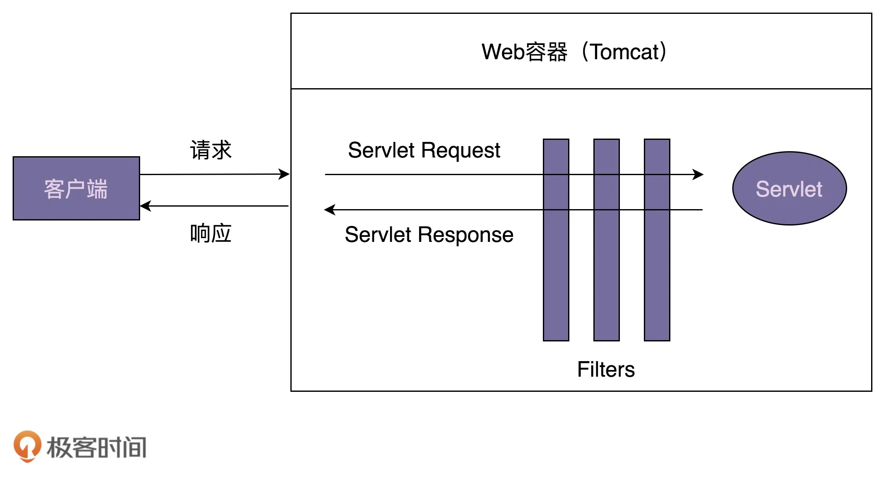
在实际项目中，添加一个过滤器，我们只需要定义一个实现 javax.servlet.Filter 接口的过滤器类，并且将它配置在 web.xml 配置文件中。Web 容器启动的时候，会读取 web.xml 中的配置，创建过滤器对象。当有请求到来的时候，会先经过过滤器，然后才由 Servlet 来处理。
1 2 3 4 5 6 7 8 9 10 11 12 13 14 15 16 17 18 19 20 21 22 23 24 25 26 27 28 29 30 public class LogFilter implements Filter { @Override public void init (FilterConfig filterConfig) throws ServletException { } @Override public void doFilter (ServletRequest request, ServletResponse response, FilterChain chain) throws IOException, ServletException { System.out.println("拦截客户端发送来的请求." ); chain.doFilter(request, response); System.out.println("拦截发送给客户端的响应." ); } @Override public void destroy () { } } <filter> <filter-name>logFilter</filter-name> <filter-class>com.xzg.cd.LogFilter</filter-class> </filter> <filter-mapping> <filter-name>logFilter</filter-name> <url-pattern>
示例代码中，我们发现，添加过滤器非常方便，不需要修改任何代码，定义一个实现 javax.servlet.Filter 的类，再改改配置就搞定了，完全符合开闭原则。Servlet Filter 能做到这点，其实就是应用了职责链模式。
前面讲过，Servlet 只是一个规范，并不包含具体的实现，所以，Servlet 中的 FilterChain 只是一个接口定义。具体的实现类由遵从 Servlet 规范的 Web 容器来提供，比如，ApplicationFilterChain 类就是 Tomcat 提供的 FilterChain 的实现类，源码如下所示(为了让代码更易读懂，对代码进行了简化，只保留了跟设计思路相关的代码片段)。
1 2 3 4 5 6 7 8 9 10 11 12 13 14 15 16 17 18 19 20 21 22 23 24 25 26 27 28 29 30 31 32 public final class ApplicationFilterChain implements FilterChain { private int pos = 0 ; private int n; private ApplicationFilterConfig[] filters; private Servlet servlet; @Override public void doFilter (ServletRequest request, ServletResponse response) { if (pos < n) { ApplicationFilterConfig filterConfig = filters[pos++]; Filter filter = filterConfig.getFilter(); filter.doFilter(request, response, this ); } else { servlet.service(request, response); } } public void addFilter (ApplicationFilterConfig filterConfig) { for (ApplicationFilterConfig filter:filters) if (filter==filterConfig) return ; if (n == filters.length) { ApplicationFilterConfig[] newFilters = new ApplicationFilterConfig [n + INCREMENT]; System.arraycopy(filters, 0 , newFilters, 0 , n); filters = newFilters; } filters[n++] = filterConfig; } }
Spring Interceptor，翻译成中文就是拦截器，用来实现对 HTTP 请求进行拦截处理。它和 Servlet Filter 不同之处在于，Servlet Filter 是 Servlet 规范的一部分，实现依赖于 Web 容器。Spring Interceptor 是 Spring MVC 框架的一部分，由 Spring MVC 框架来提供实现。客户端发送的请求，会先经过 Servlet Filter，然后再经过 Spring Interceptor，最后到达具体的业务代码中，原理具体如下图所示：
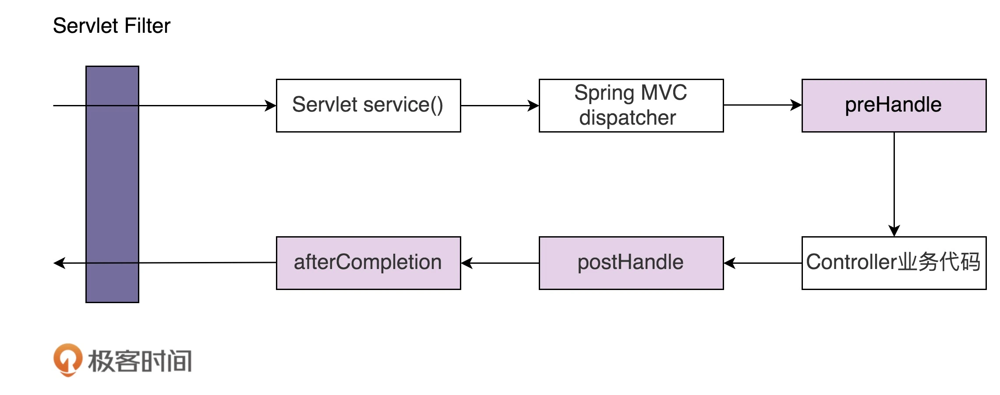
下面的示例，简单说明 Spring Interceptor 如何使用，LogInterceptor 实现的功能跟刚才的 LogFilter 完全相同，只是实现方式上稍有区别。LogFilter 对请求和响应的拦截是在 doFilter() 一个函数中实现的，而 LogInterceptor 对请求的拦截在 preHandle() 中实现，对响应的拦截在 postHandle() 中实现。
1 2 3 4 5 6 7 8 9 10 11 12 13 14 15 16 17 18 19 20 21 22 23 24 25 26 27 public class LogInterceptor implements HandlerInterceptor { @Override public boolean preHandle (HttpServletRequest request, HttpServletResponse response, Object handler) throws Exception { System.out.println("拦截客户端发送来的请求." ); return true ; } @Override public void postHandle (HttpServletRequest request, HttpServletResponse response, Object handler, ModelAndView modelAndView) throws Exception { System.out.println("拦截发送给客户端的响应." ); } @Override public void afterCompletion (HttpServletRequest request, HttpServletResponse response, Object handler, Exception ex) throws Exception { System.out.println("这里总是被执行." ); } } <mvc:interceptors> <mvc:interceptor> <mvc:mapping path="/*" /> <bean class="com.xzg.cd.LogInterceptor" /> </mvc:interceptor> </mvc:interceptors>
Spring Interceptor 底层也是基于职责链模式实现的。其中，HandlerExecutionChain 类是职责链模式中的处理器链。它的实现相较于 Tomcat 中的 ApplicationFilterChain 来说，逻辑更加清晰，主要是因为它将请求和响应的拦截工作，拆分到了两个函数中实现。HandlerExecutionChain 的源码如下所示：
1 2 3 4 5 6 7 8 9 10 11 12 13 14 15 16 17 18 19 20 21 22 23 24 25 26 27 28 29 30 31 32 33 34 35 36 37 38 39 40 41 42 43 44 45 46 47 48 public class HandlerExecutionChain { private final Object handler; private HandlerInterceptor[] interceptors; public void addInterceptor (HandlerInterceptor interceptor) { initInterceptorList().add(interceptor); } boolean applyPreHandle (HttpServletRequest request, HttpServletResponse response) throws Exception { HandlerInterceptor[] interceptors = getInterceptors(); if (!ObjectUtils.isEmpty(interceptors)) { for (int i = 0 ; i < interceptors.length; i++) { HandlerInterceptor interceptor = interceptors[i]; if (!interceptor.preHandle(request, response, this .handler)) { triggerAfterCompletion(request, response, null ); return false ; } } } return true ; } void applyPostHandle (HttpServletRequest request, HttpServletResponse response, ModelAndView mv) throws Exception { HandlerInterceptor[] interceptors = getInterceptors(); if (!ObjectUtils.isEmpty(interceptors)) { for (int i = interceptors.length - 1 ; i >= 0 ; i--) { HandlerInterceptor interceptor = interceptors[i]; interceptor.postHandle(request, response, this .handler, mv); } } } void triggerAfterCompletion (HttpServletRequest request, HttpServletResponse response, Exception ex) throws Exception { HandlerInterceptor[] interceptors = getInterceptors(); if (!ObjectUtils.isEmpty(interceptors)) { for (int i = this .interceptorIndex; i >= 0 ; i--) { HandlerInterceptor interceptor = interceptors[i]; try { interceptor.afterCompletion(request, response, this .handler, ex); } catch (Throwable ex2) { logger.error("HandlerInterceptor.afterCompletion threw exception" , ex2); } } } } }
状态模式一般用来实现状态机，而状态机常用在游戏、工作流引擎等系统开发中。不过，状态机的实现方式有多种，除了状态模式，比较常用的还有分支逻辑法和查表法。
开始之前，首先说明下什么是有限状态机，英文是 Finite State Machine，缩写为 FSM，简称为状态机。状态机有 3 个组成部分：状态（State）、事件（Event）、动作（Action）。其中，事件也称为转移条件（Transition Condition）。事件触发状态的转移及动作的执行。不过，动作不是必须的，也可能只转移状态，不执行任何动作。
在游戏超级马里奥 中，马里奥可以变身为多种形态，比如小马里奥（Small Mario）、超级马里奥（Super Mario）、火焰马里奥（Fire Mario）、斗篷马里奥（Cape Mario）等等。在不同的游戏情节下，各个形态会互相转化，并相应的增减积分。比如，初始形态是小马里奥，吃了蘑菇之后就会变成超级马里奥，并且增加 100 积分。
实际上，马里奥形态的转变就是一个状态机。其中，马里奥的不同形态就是状态机中的“状态”，游戏情节（比如吃了蘑菇）就是状态机中的“事件”，加减积分就是状态机中的“动作”。比如，吃蘑菇这个事件，会触发状态的转移：从小马里奥转移到超级马里奥，以及触发动作的执行（增加 100 积分）。
为了方便接下来的讲解，对游戏背景做了简化，只保留了部分状态和事件。简化之后的状态转移如下图所示：
下面是实现这种状态机的代码骨架：
点击展开
1 2 3 4 5 6 7 8 9 10 11 12 13 14 15 16 17 18 19 20 21 22 23 24 25 26 27 28 29 30 31 32 33 34 35 36 37 38 39 40 41 42 43 44 45 46 47 48 49 50 51 52 53 54 55 56 57 58 59 60 61 public enum State { SMALL(0 ), SUPER(1 ), FIRE(2 ), CAPE(3 ); private int value; private State (int value) { this .value = value; } public int getValue () { return this .value; } } public class MarioStateMachine { private int score; private State currentState; public MarioStateMachine () { this .score = 0 ; this .currentState = State.SMALL; } public void obtainMushRoom () { } public void obtainCape () { } public void obtainFireFlower () { } public void meetMonster () { } public int getScore () { return this .score; } public State getCurrentState () { return this .currentState; } } public class ApplicationDemo { public static void main (String[] args) { MarioStateMachine mario = new MarioStateMachine (); mario.obtainMushRoom(); int score = mario.getScore(); State state = mario.getCurrentState(); System.out.println("mario score: " + score + "; state: " + state); } }
实现状态机这里提供三种方式，分支逻辑法，查表法和状态模式。
其中，分支逻辑法最简单直接，参照状态转移图，将每一个状态转移，原模原样地直译成代码。这样编写的代码会包含大量的 if-else 或 switch-case 分支判断逻辑，甚至是嵌套的分支判断逻辑。
按照这个实现思路，补全下代码：
1 2 3 4 5 6 7 8 9 10 11 12 13 14 15 16 17 18 19 20 21 22 23 24 25 26 27 28 29 30 31 32 33 34 35 36 37 38 39 40 41 42 43 44 45 46 47 48 49 50 51 52 53 54 55 56 57 58 59 public class MarioStateMachine { private int score; private State currentState; public MarioStateMachine () { this .score = 0 ; this .currentState = State.SMALL; } public void obtainMushRoom () { if (currentState.equals(State.SMALL)) { this .currentState = State.SUPER; this .score += 100 ; } } public void obtainCape () { if (currentState.equals(State.SMALL) || currentState.equals(State.SUPER) ) { this .currentState = State.CAPE; this .score += 200 ; } } public void obtainFireFlower () { if (currentState.equals(State.SMALL) || currentState.equals(State.SUPER) ) { this .currentState = State.FIRE; this .score += 300 ; } } public void meetMonster () { if (currentState.equals(State.SUPER)) { this .currentState = State.SMALL; this .score -= 100 ; return ; } if (currentState.equals(State.CAPE)) { this .currentState = State.SMALL; this .score -= 200 ; return ; } if (currentState.equals(State.FIRE)) { this .currentState = State.SMALL; this .score -= 300 ; return ; } } public int getScore () { return this .score; } public State getCurrentState () { return this .currentState; } }
对于简单的状态机来说，分支逻辑这种实现方式是可以接受的。但是，对于复杂的状态机来说，这种实现方式极易漏写或者错写某个状态转移。除此之外，代码中充斥着大量的 if-else 或者 switch-case 分支判断逻辑，可读性和可维护性都很差。如果哪天修改了状态机中的某个状态转移，我们要在冗长的分支逻辑中找到对应的代码进行修改，很容易改错，引入 bug。
前一种方法有点类似 hard code，对于复杂的状态机来说不适用，而状态机的第二种实现方式查表法，就更加合适了。接下来，我们就一块儿来看下，如何利用查表法来补全骨架代码。
实际上，除了用状态转移图来表示之外，状态机还可以用二维表来表示，如下所示。在这个二维表中，第一维表示当前状态，第二维表示事件，值表示当前状态经过事件之后，转移到的新状态及其执行的动作。
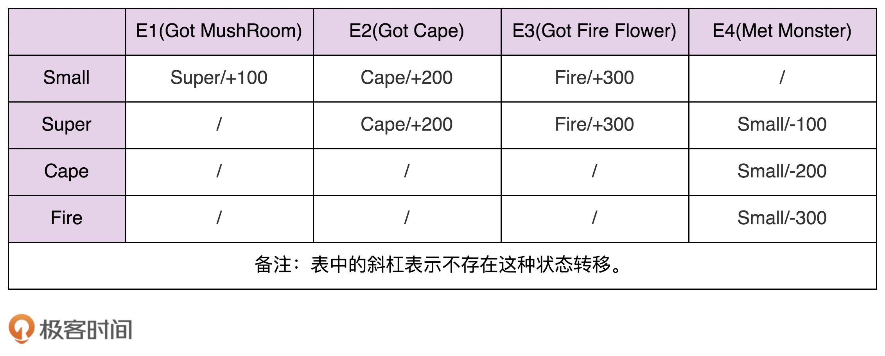
相对于分支逻辑的实现方式，查表法的代码实现更加清晰，可读性和可维护性更好。当修改状态机时，我们只需要修改 transitionTable 和 actionTable 两个二维数组即可。实际上，如果我们把这两个二维数组存储在配置文件中，当需要修改状态机时，我们甚至可以不修改任何代码，只需要修改配置文件就可以了。具体的代码如下所示：
1 2 3 4 5 6 7 8 9 10 11 12 13 14 15 16 17 18 19 20 21 22 23 24 25 26 27 28 29 30 31 32 33 34 35 36 37 38 39 40 41 42 43 44 45 46 47 48 49 50 51 52 53 54 55 56 57 58 59 60 61 62 63 64 65 66 67 68 69 70 71 72 73 public enum Event { GOT_MUSHROOM(0 ), GOT_CAPE(1 ), GOT_FIRE(2 ), MET_MONSTER(3 ); private int value; private Event (int value) { this .value = value; } public int getValue () { return this .value; } } public class MarioStateMachine { private int score; private State currentState; private static final State[][] transitionTable = { {SUPER, CAPE, FIRE, SMALL}, {SUPER, CAPE, FIRE, SMALL}, {CAPE, CAPE, CAPE, SMALL}, {FIRE, FIRE, FIRE, SMALL} }; private static final int [][] actionTable = { {+100 , +200 , +300 , +0 }, {+0 , +200 , +300 , -100 }, {+0 , +0 , +0 , -200 }, {+0 , +0 , +0 , -300 } }; public MarioStateMachine () { this .score = 0 ; this .currentState = State.SMALL; } public void obtainMushRoom () { executeEvent(Event.GOT_MUSHROOM); } public void obtainCape () { executeEvent(Event.GOT_CAPE); } public void obtainFireFlower () { executeEvent(Event.GOT_FIRE); } public void meetMonster () { executeEvent(Event.MET_MONSTER); } private void executeEvent (Event event) { int stateValue = currentState.getValue(); int eventValue = event.getValue(); this .currentState = transitionTable[stateValue][eventValue]; this .score += actionTable[stateValue][eventValue]; } public int getScore () { return this .score; } public State getCurrentState () { return this .currentState; } }
在查表法的代码实现中，事件触发的动作只是简单的积分加减，所以，用一个 int 类型的二维数组 actionTable 就能表示，二维数组中的值表示积分的加减值。但是，如果要执行的动作并非这么简单，而是一系列复杂的逻辑操作（比如加减积分、写数据库，还有可能发送消息通知等等），我们就没法用如此简单的二维数组来表示了。这也就是说，查表法的实现方式有一定局限性。
虽然分支逻辑的实现方式不存在这个问题，但它又存在前面讲到的其他问题，比如分支判断逻辑较多，导致代码可读性和可维护性不好等。实际上，针对分支逻辑法存在的问题，我们可以使用状态模式来解决。
状态模式通过将事件触发的状态转移和动作执行，拆分到不同的状态类中，来避免分支判断逻辑。我们还是结合代码来理解这句话。
利用状态模式，我们来补全 MarioStateMachine 类，补全后的代码如下所示。其中，IMario 是状态的接口，定义了所有的事件。SmallMario、SuperMario、CapeMario、FireMario 是 IMario 接口的实现类，分别对应状态机中的 4 个状态。原来所有的状态转移和动作执行的代码逻辑，都集中在 MarioStateMachine 类中，现在，这些代码逻辑被分散到了这 4 个状态类中。
1 2 3 4 5 6 7 8 9 10 11 12 13 14 15 16 17 18 19 20 21 22 23 24 25 26 27 28 29 30 31 32 33 34 35 36 37 38 39 40 41 42 43 44 45 46 47 48 49 50 51 52 53 54 55 56 57 58 59 60 61 62 63 64 65 66 67 68 69 70 71 72 73 74 75 76 77 78 79 80 81 82 83 84 85 86 87 88 89 90 91 92 93 94 95 96 97 98 99 100 101 102 103 104 105 106 107 108 109 110 111 112 113 114 115 116 117 118 119 120 121 122 123 124 125 public interface IMario { State getName () ; void obtainMushRoom () ; void obtainCape () ; void obtainFireFlower () ; void meetMonster () ; } public class SmallMario implements IMario { private MarioStateMachine stateMachine; public SmallMario (MarioStateMachine stateMachine) { this .stateMachine = stateMachine; } @Override public State getName () { return State.SMALL; } @Override public void obtainMushRoom () { stateMachine.setCurrentState(new SuperMario (stateMachine)); stateMachine.setScore(stateMachine.getScore() + 100 ); } @Override public void obtainCape () { stateMachine.setCurrentState(new CapeMario (stateMachine)); stateMachine.setScore(stateMachine.getScore() + 200 ); } @Override public void obtainFireFlower () { stateMachine.setCurrentState(new FireMario (stateMachine)); stateMachine.setScore(stateMachine.getScore() + 300 ); } @Override public void meetMonster () { } } public class SuperMario implements IMario { private MarioStateMachine stateMachine; public SuperMario (MarioStateMachine stateMachine) { this .stateMachine = stateMachine; } @Override public State getName () { return State.SUPER; } @Override public void obtainMushRoom () { } @Override public void obtainCape () { stateMachine.setCurrentState(new CapeMario (stateMachine)); stateMachine.setScore(stateMachine.getScore() + 200 ); } @Override public void obtainFireFlower () { stateMachine.setCurrentState(new FireMario (stateMachine)); stateMachine.setScore(stateMachine.getScore() + 300 ); } @Override public void meetMonster () { stateMachine.setCurrentState(new SmallMario (stateMachine)); stateMachine.setScore(stateMachine.getScore() - 100 ); } } public class MarioStateMachine { private int score; private IMario currentState; public MarioStateMachine () { this .score = 0 ; this .currentState = new SmallMario (this ); } public void obtainMushRoom () { this .currentState.obtainMushRoom(); } public void obtainCape () { this .currentState.obtainCape(); } public void obtainFireFlower () { this .currentState.obtainFireFlower(); } public void meetMonster () { this .currentState.meetMonster(); } public int getScore () { return this .score; } public State getCurrentState () { return this .currentState.getName(); } public void setScore (int score) { this .score = score; } public void setCurrentState (IMario currentState) { this .currentState = currentState; } }
上面的代码实现不难看懂，我只强调其中的一点，即 MarioStateMachine 和各个状态类之间是双向依赖关系。MarioStateMachine 依赖各个状态类是理所当然的，但是，反过来，各个状态类为什么要依赖 MarioStateMachine 呢？这是因为，各个状态类需要更新 MarioStateMachine 中的两个变量，score 和 currentState。
实际上，上面的代码还可以继续优化，我们可以将状态类设计成单例，毕竟状态类中不包含任何成员变量。但是，当将状态类设计成单例之后，我们就无法通过构造函数来传递 MarioStateMachine 了，而状态类又要依赖 MarioStateMachine，那该如何解决这个问题呢？
在这里，我们可以通过函数参数将 MarioStateMachine 传递进状态类。根据这个设计思路，我们对上面的代码进行重构。重构之后的代码如下所示：
1 2 3 4 5 6 7 8 9 10 11 12 13 14 15 16 17 18 19 20 21 22 23 24 25 26 27 28 29 30 31 32 33 34 35 36 37 38 39 40 41 42 43 44 45 46 47 48 49 50 51 52 53 54 55 56 57 58 59 60 61 62 63 64 65 66 67 68 69 70 71 72 73 74 75 76 77 78 79 80 81 82 83 84 85 86 87 88 public interface IMario { State getName () ; void obtainMushRoom (MarioStateMachine stateMachine) ; void obtainCape (MarioStateMachine stateMachine) ; void obtainFireFlower (MarioStateMachine stateMachine) ; void meetMonster (MarioStateMachine stateMachine) ; } public class SmallMario implements IMario { private static final SmallMario instance = new SmallMario (); private SmallMario () {} public static SmallMario getInstance () { return instance; } @Override public State getName () { return State.SMALL; } @Override public void obtainMushRoom (MarioStateMachine stateMachine) { stateMachine.setCurrentState(SuperMario.getInstance()); stateMachine.setScore(stateMachine.getScore() + 100 ); } @Override public void obtainCape (MarioStateMachine stateMachine) { stateMachine.setCurrentState(CapeMario.getInstance()); stateMachine.setScore(stateMachine.getScore() + 200 ); } @Override public void obtainFireFlower (MarioStateMachine stateMachine) { stateMachine.setCurrentState(FireMario.getInstance()); stateMachine.setScore(stateMachine.getScore() + 300 ); } @Override public void meetMonster (MarioStateMachine stateMachine) { } } public class MarioStateMachine { private int score; private IMario currentState; public MarioStateMachine () { this .score = 0 ; this .currentState = SmallMario.getInstance(); } public void obtainMushRoom () { this .currentState.obtainMushRoom(this ); } public void obtainCape () { this .currentState.obtainCape(this ); } public void obtainFireFlower () { this .currentState.obtainFireFlower(this ); } public void meetMonster () { this .currentState.meetMonster(this ); } public int getScore () { return this .score; } public State getCurrentState () { return this .currentState.getName(); } public void setScore (int score) { this .score = score; } public void setCurrentState (IMario currentState) { this .currentState = currentState; } }
实际上，像游戏这种比较复杂的状态机，包含的状态比较多，优先推荐使用查表法，而状态模式会引入非常多的状态类，会导致代码比较难维护。相反，像电商下单、外卖下单这种类型的状态机，它们的状态并不多，状态转移也比较简单，但事件触发执行的动作包含的业务逻辑可能会比较复杂，所以，更加推荐使用状态模式来实现。
迭代器模式（Iterator Design Pattern），也叫作游标模式（Cursor Design Pattern）。它用来遍历集合对象。不过，很多编程语言都将迭代器作为一个基础的类库，直接提供出来了。在平时开发中，特别是业务开发，我们直接使用即可，很少会自己去实现一个迭代器。不过，知其然知其所以然，弄懂原理能帮助我们更好的使用这些工具类，所以，我觉得还是有必要学习一下这个模式。
大部分编程语言都提供了多种遍历集合的方式，比如 for 循环、foreach 循环、迭代器等。所以，本节除了讲解迭代器的原理和实现之外，还会重点讲一下，相对于其他遍历方式，利用迭代器来遍历集合的优势。
迭代器用来遍历集合对象。这里说的“集合对象”也可以叫“容器”“聚合对象”，实际上就是包含一组对象的对象，比如数组、链表、树、图、跳表。迭代器模式将集合对象的遍历操作从集合类中拆分出来，放到迭代器类中，让两者的职责更加单一。
迭代器是用来遍历容器的，所以，一个完整的迭代器模式一般会涉及容器和容器迭代器两部分内容。为了达到基于接口而非实现编程的目的，容器又包含容器接口、容器实现类，迭代器又包含迭代器接口、迭代器实现类。对于迭代器模式，画了一张简单的类图。
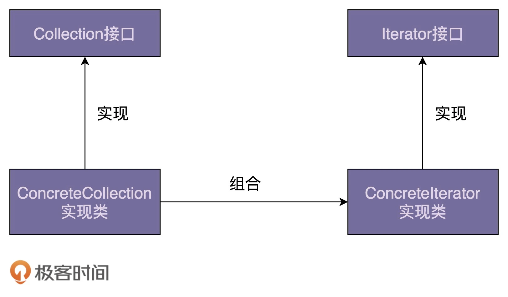
为了讲解迭代器的实现原理，从零开始开发一个迭代器。我们知道，线性数据结构包括数组和链表，在大部分编程语言中都有对应的类来封装这两种数据结构，在开发中直接拿来用就可以了。假设在这种新的编程语言中，这两个数据结构分别对应 ArrayList 和 LinkedList 两个类。除此之外，我们从两个类中抽象出公共的接口，定义为 List 接口，以方便开发者基于接口而非实现编程，编写的代码能在两种数据存储结构之间灵活切换。
现在，我们针对 ArrayList 和 LinkedList 两个线性容器，设计实现对应的迭代器。按照之前给出的迭代器模式的类图，我们定义一个迭代器接口 Iterator，以及针对两种容器的具体的迭代器实现类 ArrayIterator 和 ListIterator。
先来看下 Iterator 接口的定义。具体的代码如下所示：
1 2 3 4 5 6 7 8 9 10 11 12 13 public interface Iterator <E> { boolean hasNext () ; void next () ; E currentItem () ; } public interface Iterator <E> { boolean hasNext () ; E next () ; }
Iterator 接口有两种定义方式。在第一种定义中，next() 函数用来将游标后移一位元素，currentItem() 函数用来返回当前游标指向的元素。在第二种定义中，返回当前元素与后移一位这两个操作，要放到同一个函数 next() 中完成。第一种定义方式更加灵活一些，比如我们可以多次调用 currentItem() 查询当前元素，而不移动游标。所以，在接下来的实现中，我们选择第一种接口定义方式。现在，我们再来看下 ArrayIterator 的代码实现，具体如下所示。代码实现非常简单，不需要太多解释。
1 2 3 4 5 6 7 8 9 10 11 12 13 14 15 16 17 18 19 20 21 22 23 24 25 26 27 28 29 30 31 32 33 34 35 36 37 38 39 40 41 42 43 public class ArrayIterator <E> implements Iterator <E> { private int cursor; private ArrayList<E> arrayList; public ArrayIterator (ArrayList<E> arrayList) { this .cursor = 0 ; this .arrayList = arrayList; } @Override public boolean hasNext () { return cursor != arrayList.size(); } @Override public void next () { cursor++; } @Override public E currentItem () { if (cursor >= arrayList.size()) { throw new NoSuchElementException (); } return arrayList.get(cursor); } } public class Demo { public static void main (String[] args) { ArrayList<String> names = new ArrayList <>(); names.add("xzg" ); names.add("wang" ); names.add("zheng" ); Iterator<String> iterator = new ArrayIterator (names); while (iterator.hasNext()) { System.out.println(iterator.currentItem()); iterator.next(); } } }
在上面的代码实现中，我们需要将待遍历的容器对象，通过构造函数传递给迭代器类。实际上，为了封装迭代器的创建细节，我们可以在容器中定义一个 iterator() 方法，来创建对应的迭代器。为了能实现基于接口而非实现编程，我们还需要将这个方法定义在 List 接口中。具体的代码实现和使用示例如下所示：
1 2 3 4 5 6 7 8 9 10 11 12 13 14 15 16 17 18 19 20 21 22 23 24 25 26 27 28 public interface List <E> { Iterator iterator () ; } public class ArrayList <E> implements List <E> { public Iterator iterator () { return new ArrayIterator (this ); } } public class Demo { public static void main (String[] args) { List<String> names = new ArrayList <>(); names.add("xzg" ); names.add("wang" ); names.add("zheng" ); Iterator<String> iterator = names.iterator(); while (iterator.hasNext()) { System.out.println(iterator.currentItem()); iterator.next(); } } }
对于 LinkedIterator，它的代码结构跟 ArrayIterator 完全相同，就不给出具体的代码实现了。结合刚刚的例子，我们来总结一下迭代器的设计思路。总结下来就三句话：迭代器中需要定义 hasNext()、currentItem()、next() 三个最基本的方法。待遍历的容器对象通过依赖注入传递到迭代器类中。容器通过 iterator() 方法来创建迭代器。
画了一张类图，如下所示，实际上就是对上面那张类图的细化，你可以结合着一块看：
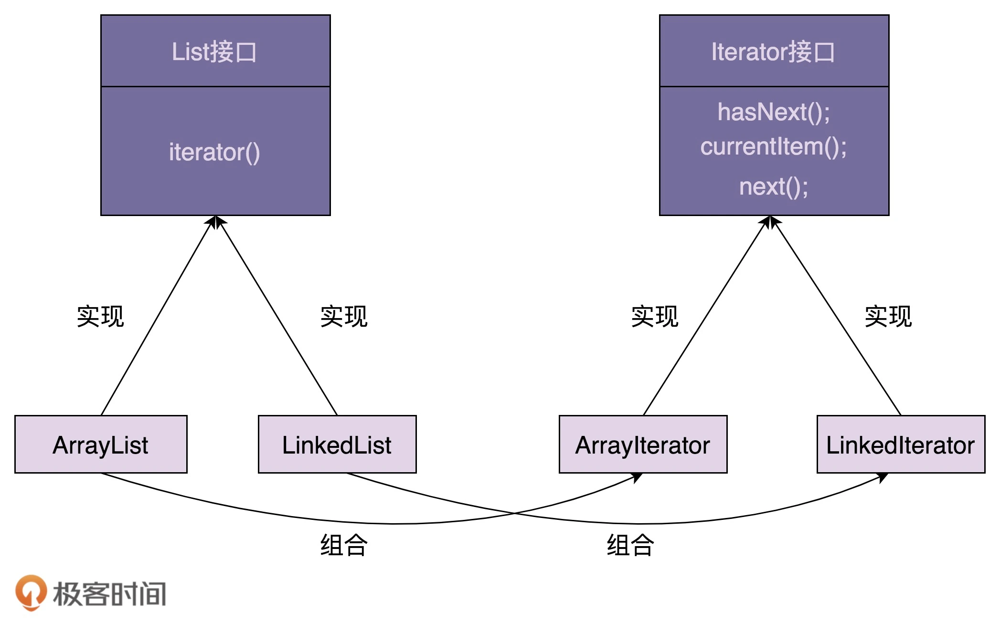
在通过迭代器来遍历集合元素的同时，增加或者删除集合中的元素，有可能会导致某个元素被重复遍历或遍历不到。不过，并不是所有情况下都会遍历出错，有的时候也可以正常遍历，所以，这种行为称为结果不可预期行为或者未决行为，也就是说，运行结果到底是对还是错，要视情况而定。
延续上一节课实现的 ArrayList 迭代器的例子，举个例子：
1 2 3 4 5 6 7 8 9 10 11 12 13 public class Demo { public static void main (String[] args) { List<String> names = new ArrayList <>(); names.add("a" ); names.add("b" ); names.add("c" ); names.add("d" ); Iterator<String> iterator = names.iterator(); iterator.next(); names.remove("a" ); } }
ArrayList 底层对应的是数组这种数据结构，在执行完第 55 行代码的时候，数组中存储的是 a、b、c、d 四个元素，迭代器的游标 cursor 指向元素 a。当执行完第 10 行代码的时候，游标指向元素 b，到这里都没有问题。为了保持数组存储数据的连续性，数组的删除操作会涉及元素的搬移。当执行到第 11 行代码的时候，我们从数组中将元素 a 删除掉，b、c、d 三个元素会依次往前搬移一位，这就会导致游标本来指向元素 b，现在变成了指向元素 c。原本在执行完第 10 行代码之后，我们还可以遍历到 b、c、d 三个元素，但在执行完第 11 行代码之后，我们只能遍历到 c、d 两个元素，b 遍历不到了。
不过，如果第 11 行代码删除的不是游标前面的元素（元素 a）以及游标所在位置的元素（元素 b），而是游标后面的元素（元素 c 和 d），这样就不会存在任何问题了，不会存在某个元素遍历不到的情况了。所以，我们前面说，在遍历的过程中删除集合元素，结果是不可预期的，有时候没问题（删除元素 c 或 d），有时候就有问题（删除元素 a 或 b），这个要视情况而定（到底删除的是哪个位置的元素），就是这个意思。
在遍历的过程中删除集合元素，有可能会导致某个元素遍历不到，那在遍历的过程中添加集合元素，会发生什么情况呢？举个例子：
1 2 3 4 5 6 7 8 9 10 11 12 13 public class Demo { public static void main (String[] args) { List<String> names = new ArrayList <>(); names.add("a" ); names.add("b" ); names.add("c" ); names.add("d" ); Iterator<String> iterator = names.iterator(); iterator.next(); names.add(0 , "x" ); } }
在执行完第 10 行代码之后，数组中包含 a、b、c、d 四个元素，游标指向 b 这个元素，已经跳过了元素 a。在执行完第 11 行代码之后，我们将 x 插入到下标为 0 的位置，a、b、c、d 四个元素依次往后移动一位。这个时候，游标又重新指向了元素 a。元素 a 被游标重复指向两次，也就是说，元素 a 存在被重复遍历的情况。跟删除情况类似，如果我们在游标的后面添加元素，就不会存在任何问题。所以，在遍历的同时添加集合元素也是一种不可预期行为。
当通过迭代器来遍历集合的时候，增加、删除集合元素会导致不可预期的遍历结果。实际上，“不可预期”比直接出错更加可怕，有的时候运行正确，有的时候运行错误，一些隐藏很深、很难 debug 的 bug 就是这么产生的。有两种比较干脆利索的解决方案：一种是遍历的时候不允许增删元素，另一种是增删元素之后让遍历报错。
实际上，第一种解决方案比较难实现，我们要确定遍历开始和结束的时间点。遍历开始的时间节点我们很容易获得。我们可以把创建迭代器的时间点作为遍历开始的时间点。但是，遍历结束的时间点该如何来确定呢？你可能会说，遍历到最后一个元素的时候就算结束呗。但是，在实际的软件开发中，每次使用迭代器来遍历元素，并不一定非要把所有元素都遍历一遍。如下所示，我们找到一个值为 b 的元素就提前结束了遍历。
1 2 3 4 5 6 7 8 9 10 11 12 13 14 15 16 17 public class Demo { public static void main (String[] args) { List<String> names = new ArrayList <>(); names.add("a" ); names.add("b" ); names.add("c" ); names.add("d" ); Iterator<String> iterator = names.iterator(); while (iterator.hasNext()) { String name = iterator.currentItem(); if (name.equals("b" )) { break ; } } } }
那我们可以在迭代器类中定义一个新的接口 finishIteration()，主动告知容器迭代器使用完了，你可以增删元素了，示例代码如下所示。但是，这就要求程序员在使用完迭代器之后要主动调用这个函数，也增加了开发成本，还很容易漏掉。
1 2 3 4 5 6 7 8 9 10 11 12 13 14 15 16 17 18 public class Demo { public static void main (String[] args) { List<String> names = new ArrayList <>(); names.add("a" ); names.add("b" ); names.add("c" ); names.add("d" ); Iterator<String> iterator = names.iterator(); while (iterator.hasNext()) { String name = iterator.currentItem(); if (name.equals("b" )) { iterator.finishIteration(); break ; } } } }
实际上，第二种解决方法更加合理。Java 语言就是采用的这种解决方案，增删元素之后，让遍历报错。接下来，我们具体来看一下如何实现。
怎么确定在遍历时候，集合有没有增删元素呢？我们在 ArrayList 中定义一个成员变量 modCount，记录集合被修改的次数，集合每调用一次增加或删除元素的函数，就会给 modCount 加 1。当通过调用集合上的 iterator() 函数来创建迭代器的时候，我们把 modCount 值传递给迭代器的 expectedModCount 成员变量，之后每次调用迭代器上的 hasNext()、next()、currentItem() 函数，我们都会检查集合上的 modCount 是否等于 expectedModCount，也就是看，在创建完迭代器之后，modCount 是否改变过。
如果两个值不相同，那就说明集合存储的元素已经改变了，要么增加了元素，要么删除了元素，之前创建的迭代器已经不能正确运行了，再继续使用就会产生不可预期的结果，所以我们选择 fail-fast 解决方式，抛出运行时异常，结束掉程序，让程序员尽快修复这个因为不正确使用迭代器而产生的 bug。
点击展开示例
1 2 3 4 5 6 7 8 9 10 11 12 13 14 15 16 17 18 19 20 21 22 23 24 25 26 27 28 29 30 31 32 33 34 35 36 37 38 39 40 41 42 43 44 45 46 47 48 49 50 51 public class ArrayIterator implements Iterator { private int cursor; private ArrayList arrayList; private int expectedModCount; public ArrayIterator (ArrayList arrayList) { this .cursor = 0 ; this .arrayList = arrayList; this .expectedModCount = arrayList.modCount; } @Override public boolean hasNext () { checkForComodification(); return cursor < arrayList.size(); } @Override public void next () { checkForComodification(); cursor++; } @Override public Object currentItem () { checkForComodification(); return arrayList.get(cursor); } private void checkForComodification () { if (arrayList.modCount != expectedModCount) throw new ConcurrentModificationException (); } } public class Demo { public static void main (String[] args) { List<String> names = new ArrayList <>(); names.add("a" ); names.add("b" ); names.add("c" ); names.add("d" ); Iterator<String> iterator = names.iterator(); iterator.next(); names.remove("a" ); iterator.next(); } }
像 Java 语言，迭代器类中除了前面提到的几个最基本的方法之外，还定义了一个 remove() 方法，能够在遍历集合的同时，安全地删除集合中的元素。不过，需要说明的是，它并没有提供添加元素的方法。毕竟迭代器的主要作用是遍历，添加元素放到迭代器里本身就不合适。
个人觉得，Java 迭代器中提供的 remove() 方法还是比较鸡肋的，作用有限。它只能删除游标指向的前一个元素，而且一个 next() 函数之后，只能跟着最多一个 remove() 操作，多次调用 remove() 操作会报错，还是通过一个例子来解释一下。
1 2 3 4 5 6 7 8 9 10 11 12 13 14 public class Demo { public static void main (String[] args) { List<String> names = new ArrayList <>(); names.add("a" ); names.add("b" ); names.add("c" ); names.add("d" ); Iterator<String> iterator = names.iterator(); iterator.next(); iterator.remove(); iterator.remove(); } }
现在，我们一块来看下，为什么通过迭代器就能安全的删除集合中的元素呢？源码之下无秘密。我们来看下 remove() 函数是如何实现的，代码如下所示。稍微提醒一下，在 Java 实现中，迭代器类是容器类的内部类，并且 next() 函数不仅将游标后移一位，还会返回当前的元素。
1 2 3 4 5 6 7 8 9 10 11 12 13 14 15 16 17 18 19 20 21 22 23 24 25 26 27 28 29 30 31 32 33 34 35 36 37 38 39 40 41 42 43 44 45 46 47 48 49 public class ArrayList <E> { transient Object[] elementData; private int size; public Iterator<E> iterator () { return new Itr (); } private class Itr implements Iterator <E> { int cursor; int lastRet = -1 ; int expectedModCount = modCount; Itr() {} public boolean hasNext () { return cursor != size; } @SuppressWarnings("unchecked") public E next () { checkForComodification(); int i = cursor; if (i >= size) throw new NoSuchElementException (); Object[] elementData = ArrayList.this .elementData; if (i >= elementData.length) throw new ConcurrentModificationException (); cursor = i + 1 ; return (E) elementData[lastRet = i]; } public void remove () { if (lastRet < 0 ) throw new IllegalStateException (); checkForComodification(); try { ArrayList.this .remove(lastRet); cursor = lastRet; lastRet = -1 ; expectedModCount = modCount; } catch (IndexOutOfBoundsException ex) { throw new ConcurrentModificationException (); } } } }
在上面的代码实现中，迭代器类新增了一个 lastRet 成员变量，用来记录游标指向的前一个元素。通过迭代器去删除这个元素的时候，我们可以更新迭代器中的游标和 lastRet 值，来保证不会因为删除元素而导致某个元素遍历不到。如果通过容器来删除元素，并且希望更新迭代器中的游标值来保证遍历不出错，我们就要维护这个容器都创建了哪些迭代器，每个迭代器是否还在使用等信息，代码实现就变得比较复杂了。
所谓“快照”，指我们为容器创建迭代器的时候，相当于给容器拍了一张快照（Snapshot）。之后即便我们增删容器中的元素，快照中的元素并不会做相应的改动。而迭代器遍历的对象是快照而非容器，这样就避免了在使用迭代器遍历的过程中，增删容器中的元素，导致的不可预期的结果或者报错。
接下来，我举一个例子来解释一下上面这段话。具体的代码如下所示。容器 list 中初始存储了 3、8、2 三个元素。尽管在创建迭代器 iter1 之后，容器 list 删除了元素 3，只剩下 8、2 两个元素，但是，通过 iter1 遍历的对象是快照，而非容器 list 本身。所以，遍历的结果仍然是 3、8、2。同理，iter2、iter3 也是在各自的快照上遍历，输出的结果如代码中注释所示。
1 2 3 4 5 6 7 8 9 10 11 12 13 14 15 16 17 18 19 20 21 22 23 24 25 26 27 28 29 List<Integer> list = new ArrayList <>(); list.add(3 ); list.add(8 ); list.add(2 ); Iterator<Integer> iter1 = list.iterator(); list.remove(new Integer (2 )); Iterator<Integer> iter2 = list.iterator(); list.remove(new Integer (3 )); Iterator<Integer> iter3 = list.iterator(); while (iter1.hasNext()) { System.out.print(iter1.next() + " " ); } System.out.println(); while (iter2.hasNext()) { System.out.print(iter1.next() + " " ); } System.out.println(); while (iter3.hasNext()) { System.out.print(iter1.next() + " " ); } System.out.println();
下面是针对这个功能需求的骨架代码，其中包含 ArrayList、SnapshotArrayIterator 两个类。对于这两个类，我只定义了必须的几个关键接口，完整的代码实现我并没有给出。
1 2 3 4 5 6 7 8 9 10 11 12 13 14 15 16 17 18 19 20 21 22 23 24 25 26 27 28 29 30 31 32 33 public ArrayList<E> implements List <E> { @Override public void add (E obj) { } @Override public void remove (E obj) { } @Override public Iterator<E> iterator () { return new SnapshotArrayIterator (this ); } } public class SnapshotArrayIterator <E> implements Iterator <E> { @Override public boolean hasNext () { } @Override public E next () { } }
先来看最简单的一种解决办法。在迭代器类中定义一个成员变量 snapshot 来存储快照。每当创建迭代器的时候，都拷贝一份容器中的元素到快照中，后续的遍历操作都基于这个迭代器自己持有的快照来进行。具体的代码实现如下所示：
1 2 3 4 5 6 7 8 9 10 11 12 13 14 15 16 17 18 19 20 21 22 23 public class SnapshotArrayIterator <E> implements Iterator <E> { private int cursor; private ArrayList<E> snapshot; public SnapshotArrayIterator (ArrayList<E> arrayList) { this .cursor = 0 ; this .snapshot = new ArrayList <>(); this .snapshot.addAll(arrayList); } @Override public boolean hasNext () { return cursor < snapshot.size(); } @Override public E next () { E currentItem = snapshot.get(cursor); cursor++; return currentItem; } }
解决方案虽然简单，但代价也有点高。每次创建迭代器的时候，都要拷贝一份数据到快照中，会增加内存的消耗。如果一个容器同时有多个迭代器在遍历元素，就会导致数据在内存中重复存储多份。不过，庆幸的是，Java 中的拷贝属于浅拷贝，也就是说，容器中的对象并非真的拷贝了多份，而只是拷贝了对象的引用而已。
可以在容器中，为每个元素保存两个时间戳，一个是添加时间戳 addTimestamp，一个是删除时间戳 delTimestamp。当元素被加入到集合中的时候，我们将 addTimestamp 设置为当前时间，将 delTimestamp 设置成最大长整型值（Long.MAX_VALUE）。当元素被删除时，我们将 delTimestamp 更新为当前时间，表示已经被删除。
注意，这里只是标记删除，而非真正将它从容器中删除。
同时，每个迭代器也保存一个迭代器创建时间戳 snapshotTimestamp，也就是迭代器对应的快照的创建时间戳。当使用迭代器来遍历容器的时候，只有满足 addTimestamp < snapshotTimestamp < delTimestamp 的元素，才是属于这个迭代器的快照。
如果元素的 addTimestamp > snapshotTimestamp，说明元素在创建了迭代器之后才加入的，不属于这个迭代器的快照；如果元素的 delTimestamp < snapshotTimestamp，说明元素在创建迭代器之前就被删除掉了，也不属于这个迭代器的快照。
这样就在不拷贝容器的情况下，在容器本身上借助时间戳实现了快照功能。具体的代码实现如下所示。注意，我们没有考虑 ArrayList 的扩容问题，感兴趣的话，你可以自己完善一下。
1 2 3 4 5 6 7 8 9 10 11 12 13 14 15 16 17 18 19 20 21 22 23 24 25 26 27 28 29 30 31 32 33 34 35 36 37 38 39 40 41 42 43 44 45 46 47 48 49 50 51 52 53 54 55 56 57 58 59 60 61 62 63 64 65 66 67 68 69 70 71 72 73 74 75 76 77 78 79 80 81 82 83 84 85 86 87 88 89 90 91 92 93 94 95 96 97 98 99 100 101 102 103 104 105 106 107 public class ArrayList <E> implements List <E> { private static final int DEFAULT_CAPACITY = 10 ; private int actualSize; private int totalSize; private Object[] elements; private long [] addTimestamps; private long [] delTimestamps; public ArrayList () { this .elements = new Object [DEFAULT_CAPACITY]; this .addTimestamps = new long [DEFAULT_CAPACITY]; this .delTimestamps = new long [DEFAULT_CAPACITY]; this .totalSize = 0 ; this .actualSize = 0 ; } @Override public void add (E obj) { elements[totalSize] = obj; addTimestamps[totalSize] = System.currentTimeMillis(); delTimestamps[totalSize] = Long.MAX_VALUE; totalSize++; actualSize++; } @Override public void remove (E obj) { for (int i = 0 ; i < totalSize; ++i) { if (elements[i].equals(obj)) { delTimestamps[i] = System.currentTimeMillis(); actualSize--; } } } public int actualSize () { return this .actualSize; } public int totalSize () { return this .totalSize; } public E get (int i) { if (i >= totalSize) { throw new IndexOutOfBoundsException (); } return (E)elements[i]; } public long getAddTimestamp (int i) { if (i >= totalSize) { throw new IndexOutOfBoundsException (); } return addTimestamps[i]; } public long getDelTimestamp (int i) { if (i >= totalSize) { throw new IndexOutOfBoundsException (); } return delTimestamps[i]; } } public class SnapshotArrayIterator <E> implements Iterator <E> { private long snapshotTimestamp; private int cursorInAll; private int leftCount; private ArrayList<E> arrayList; public SnapshotArrayIterator (ArrayList<E> arrayList) { this .snapshotTimestamp = System.currentTimeMillis(); this .cursorInAll = 0 ; this .leftCount = arrayList.actualSize();; this .arrayList = arrayList; justNext(); } @Override public boolean hasNext () { return this .leftCount >= 0 ; } @Override public E next () { E currentItem = arrayList.get(cursorInAll); justNext(); return currentItem; } private void justNext () { while (cursorInAll < arrayList.totalSize()) { long addTimestamp = arrayList.getAddTimestamp(cursorInAll); long delTimestamp = arrayList.getDelTimestamp(cursorInAll); if (snapshotTimestamp > addTimestamp && snapshotTimestamp < delTimestamp) { leftCount--; break ; } cursorInAll++; } } }
实际上，上面的解决方案相当于解决了一个问题，又引入了另外一个问题。ArrayList 底层依赖数组这种数据结构，原本可以支持快速的随机访问，在 O(1) 时间复杂度内获取下标为 i 的元素，但现在，删除数据并非真正的删除，只是通过时间戳来标记删除，这就导致无法支持按照下标快速随机访问了。
解决的方法也不难，我们可以在 ArrayList 中存储两个数组。一个支持标记删除的，用来实现快照遍历功能；一个不支持标记删除的，用来支持随机访问。
访问者模式，英文是：Visitor Design Pattern，定义时：允许一个或者多个操作应用到一组对象上，解耦操作和对象本身。它可以算是 23 种经典设计模式中最难理解的几个之一。因为它难理解、难实现，应用它会导致代码的可读性、可维护性变差，所以，访问者模式在实际的软件开发中很少被用到，在没有特别必要的情况下，建议你不要使用访问者模式。
通过一个例子，逐步来了解访问者模式，假设我们从网站上爬取了很多资源文件，它们的格式有三种：PDF、PPT、Word。我们现在要开发一个工具来处理这批资源文件。这个工具的其中一个功能是，把这些资源文件中的文本内容抽取出来放到 txt 文件中。
实现这个功能并不难，不同的人有不同的写法，下面是一种实现方式。其中，ResourceFile 是一个抽象类，包含一个抽象函数 extract2txt()。PdfFile、PPTFile、WordFile 都继承 ResourceFile 类，并且重写了 extract2txt() 函数。在 ToolApplication 中，我们可以利用多态特性，根据对象的实际类型，来决定执行哪个方法。
1 2 3 4 5 6 7 8 9 10 11 12 13 14 15 16 17 18 19 20 21 22 23 24 25 26 27 28 29 30 31 32 33 34 35 36 37 38 39 40 41 42 43 44 45 46 47 48 49 50 51 52 53 54 55 56 57 58 59 60 61 62 63 64 65 66 67 68 69 public abstract class ResourceFile { protected String filePath; public ResourceFile (String filePath) { this .filePath = filePath; } public abstract void extract2txt () ; } public class PPTFile extends ResourceFile { public PPTFile (String filePath) { super (filePath); } @Override public void extract2txt () { System.out.println("Extract PPT." ); } } public class PdfFile extends ResourceFile { public PdfFile (String filePath) { super (filePath); } @Override public void extract2txt () { System.out.println("Extract PDF." ); } } public class WordFile extends ResourceFile { public WordFile (String filePath) { super (filePath); } @Override public void extract2txt () { System.out.println("Extract WORD." ); } } public class ToolApplication { public static void main (String[] args) { List<ResourceFile> resourceFiles = listAllResourceFiles(args[0 ]); for (ResourceFile resourceFile : resourceFiles) { resourceFile.extract2txt(); } } private static List<ResourceFile> listAllResourceFiles (String resourceDirectory) { List<ResourceFile> resourceFiles = new ArrayList <>(); resourceFiles.add(new PdfFile ("a.pdf" )); resourceFiles.add(new WordFile ("b.word" )); resourceFiles.add(new PPTFile ("c.ppt" )); return resourceFiles; } }
如果工具的功能不停地扩展，不仅要能抽取文本内容，还要支持压缩、提取文件元信息（文件名、大小、更新时间等等）构建索引等一系列的功能，那如果我们继续按照上面的实现思路，就会存在这样几个问题：
违背开闭原则，添加一个新的功能，所有类的代码都要修改；
虽然功能增多，每个类的代码都不断膨胀，可读性和可维护性都变差了；
把所有比较上层的业务逻辑都耦合到 PdfFile、PPTFile、WordFile 类中，导致这些类的职责不够单一，变成了大杂烩；
针对上面的问题，我们常用的解决方法就是拆分解耦，把业务操作跟具体的数据结构解耦，设计成独立的类。这里我们按照访问者模式的演进思路来对上面的代码进行重构。重构之后的代码如下所示。
1 2 3 4 5 6 7 8 9 10 11 12 13 14 15 16 17 18 19 20 21 22 23 24 25 26 27 28 29 30 31 32 33 34 35 36 37 38 39 40 41 42 43 44 45 46 47 48 49 50 51 52 53 54 55 56 57 public abstract class ResourceFile { protected String filePath; public ResourceFile (String filePath) { this .filePath = filePath; } abstract public void accept (Extractor extractor) ; } public class PdfFile extends ResourceFile { public PdfFile (String filePath) { super (filePath); } @Override public void accept (Extractor extractor) { extractor.extract2txt(this ); } } public void extract2txt (PPTFile pptFile) { System.out.println("Extract PPT." ); } public void extract2txt (PdfFile pdfFile) { System.out.println("Extract PDF." ); } public void extract2txt (WordFile wordFile) { System.out.println("Extract WORD." ); } } public class ToolApplication { public static void main (String[] args) { Extractor extractor = new Extractor (); List<ResourceFile> resourceFiles = listAllResourceFiles(args[0 ]); for (ResourceFile resourceFile : resourceFiles) { resourceFile.accept(extractor); } } private static List<ResourceFile> listAllResourceFiles (String resourceDirectory) { List<ResourceFile> resourceFiles = new ArrayList <>(); resourceFiles.add(new PdfFile ("a.pdf" )); resourceFiles.add(new WordFile ("b.word" )); resourceFiles.add(new PPTFile ("c.ppt" )); return resourceFiles; } }
在执行第 45 行的时候，根据多态特性，程序会调用实际类型的 accept 函数，比如 PdfFile 的 accept 函数，也就是第 16 行代码。而 16 行代码中的 this 类型是 PdfFile 的，在编译的时候就确定了，所以会调用 extractor 的 extract2txt(PdfFile pdfFile) 这个重载函数。这里的实现很有技巧性，这是理解访问者模式的关键所在，也是我之前所说的访问者模式不好理解的原因。
现在，如果要继续添加新的功能，比如前面提到的压缩功能，根据不同的文件类型，使用不同的压缩算法来压缩资源文件，那我们该如何实现呢？我们需要实现一个类似 Extractor 类的新类 Compressor 类，在其中定义三个重载函数，实现对不同类型资源文件的压缩。除此之外，我们还要在每个资源文件类中定义新的 accept 重载函数。具体的代码如下所示：
1 2 3 4 5 6 7 8 9 10 11 12 13 14 15 16 17 18 19 20 21 22 23 24 25 26 27 28 29 30 31 32 33 34 35 36 37 38 39 40 41 42 43 44 45 46 47 48 49 50 51 52 53 54 public abstract class ResourceFile { protected String filePath; public ResourceFile (String filePath) { this .filePath = filePath; } abstract public void accept (Extractor extractor) ; abstract public void accept (Compressor compressor) ; } public class PdfFile extends ResourceFile { public PdfFile (String filePath) { super (filePath); } @Override public void accept (Extractor extractor) { extractor.extract2txt(this ); } @Override public void accept (Compressor compressor) { compressor.compress(this ); } } } public class ToolApplication { public static void main (String[] args) { Extractor extractor = new Extractor (); List<ResourceFile> resourceFiles = listAllResourceFiles(args[0 ]); for (ResourceFile resourceFile : resourceFiles) { resourceFile.accept(extractor); } Compressor compressor = new Compressor (); for (ResourceFile resourceFile : resourceFiles) { resourceFile.accept(compressor); } } private static List<ResourceFile> listAllResourceFiles (String resourceDirectory) { List<ResourceFile> resourceFiles = new ArrayList <>(); resourceFiles.add(new PdfFile ("a.pdf" )); resourceFiles.add(new WordFile ("b.word" )); resourceFiles.add(new PPTFile ("c.ppt" )); return resourceFiles; } }
上面代码还存在一些问题，添加一个新的业务，还是需要修改每个资源文件类，违反了开闭原则。
针对前面的问题，我们抽象出来一个 Visitor 接口，包含是三个命名非常通用的 visit() 重载函数，分别处理三种不同类型的资源文件。具体做什么业务处理，由实现这个 Visitor 接口的具体的类来决定，比如 Extractor 负责抽取文本内容，Compressor 负责压缩。当我们新添加一个业务功能的时候，资源文件类不需要做任何修改，只需要修改 ToolApplication 的代码就可以了。
按照这个思路我们可以对代码进行重构，重构之后的代码如下所示：
1 2 3 4 5 6 7 8 9 10 11 12 13 14 15 16 17 18 19 20 21 22 23 24 25 26 27 28 29 30 31 32 33 34 35 36 37 38 39 40 41 42 43 44 45 46 47 48 49 50 51 52 53 54 55 56 57 58 59 60 61 62 63 64 65 66 67 68 69 70 71 72 73 74 75 76 77 78 79 80 81 82 83 84 85 86 87 88 89 90 91 92 public abstract class ResourceFile { protected String filePath; public ResourceFile (String filePath) { this .filePath = filePath; } abstract public void accept (Visitor vistor) ; } public class PdfFile extends ResourceFile { public PdfFile (String filePath) { super (filePath); } @Override public void accept (Visitor visitor) { visitor.visit(this ); } } public interface Visitor { void visit (PdfFile pdfFile) ; void visit (PPTFile pdfFile) ; void visit (WordFile pdfFile) ; } public class Extractor implements Visitor { @Override public void visit (PPTFile pptFile) { System.out.println("Extract PPT." ); } @Override public void visit (PdfFile pdfFile) { System.out.println("Extract PDF." ); } @Override public void visit (WordFile wordFile) { System.out.println("Extract WORD." ); } } public class Compressor implements Visitor { @Override public void visit (PPTFile pptFile) { System.out.println("Compress PPT." ); } @Override public void visit (PdfFile pdfFile) { System.out.println("Compress PDF." ); } @Override public void visit (WordFile wordFile) { System.out.println("Compress WORD." ); } } public class ToolApplication { public static void main (String[] args) { Extractor extractor = new Extractor (); List<ResourceFile> resourceFiles = listAllResourceFiles(args[0 ]); for (ResourceFile resourceFile : resourceFiles) { resourceFile.accept(extractor); } Compressor compressor = new Compressor (); for (ResourceFile resourceFile : resourceFiles) { resourceFile.accept(compressor); } } private static List<ResourceFile> listAllResourceFiles (String resourceDirectory) { List<ResourceFile> resourceFiles = new ArrayList <>(); resourceFiles.add(new PdfFile ("a.pdf" )); resourceFiles.add(new WordFile ("b.word" )); resourceFiles.add(new PPTFile ("c.ppt" )); return resourceFiles; } }
访问者模式，定义比较简单，结合前面的例子不难理解。对于访问者模式的代码实现，实际上，在上面例子中，经过层层重构之后的最终代码，就是标准的访问者模式的实现代码。下面总结了一张图，可以对照着前面的例子代码一块儿来看一下。
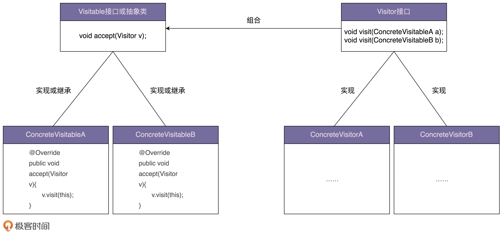
最后，我们再来看下，访问者模式的应用场景。一般来说，访问者模式针对的是一组类型不同的对象（PdfFile、PPTFile、WordFile）。不过，尽管这组对象的类型是不同的，但是，它们继承相同的父类（ResourceFile）或者实现相同的接口。在不同的应用场景下，我们需要对这组对象进行一系列不相关的业务操作（抽取文本、压缩等），但为了避免不断添加功能导致类（PdfFile、PPTFile、WordFile）不断膨胀，职责越来越不单一，以及避免频繁地添加功能导致的频繁代码修改，我们使用访问者模式，将对象与操作解耦，将这些业务操作抽离出来，定义在独立细分的访问者类（Extractor、Compressor）中。
备忘录模式，也叫快照（Snapshot）模式，英文是 Memento Design Pattern，定义是：在不违背封装原则的前提下，捕获一个对象的内部状态，并在该对象之外保存这个状态，以便之后恢复对象为先前的状态。这个模式理解、掌握起来不难，代码实现比较灵活，应用场景也比较明确和有限，主要是用来防丢失、撤销、恢复等。
假设有这样一个需求，希望编写一个小程序，可以接收命令行的输入。用户输入文本时，程序将其追加存储在内存文本中；用户输入:list，程序在命令行中输出内存文本的内容；用户输入:undo，程序会撤销上一次输入的文本，也就是从内存文本中将上次输入的文本删除掉。我举了个小例子来解释一下这个需求，如下所示：
1 2 3 4 5 6 7 8 9 >hello >:list hello >world >:list helloworld >:undo >:list hello
下面是一个基本的实现：
1 2 3 4 5 6 7 8 9 10 11 12 13 14 15 16 17 18 19 20 21 22 23 24 25 26 27 28 29 30 31 32 33 34 35 36 37 38 39 40 41 42 43 44 45 46 47 48 49 public class InputText { private StringBuilder text = new StringBuilder (); public String getText () { return text.toString(); } public void append (String input) { text.append(input); } public void setText (String text) { this .text.replace(0 , this .text.length(), text); } } public class SnapshotHolder { private Stack<InputText> snapshots = new Stack <>(); public InputText popSnapshot () { return snapshots.pop(); } public void pushSnapshot (InputText inputText) { InputText deepClonedInputText = new InputText (); deepClonedInputText.setText(inputText.getText()); snapshots.push(deepClonedInputText); } } public class ApplicationMain { public static void main (String[] args) { InputText inputText = new InputText (); SnapshotHolder snapshotsHolder = new SnapshotHolder (); Scanner scanner = new Scanner (System.in); while (scanner.hasNext()) { String input = scanner.next(); if (input.equals(":list" )) { System.out.println(inputText.getText()); } else if (input.equals(":undo" )) { InputText snapshot = snapshotsHolder.popSnapshot(); inputText.setText(snapshot.getText()); } else { snapshotsHolder.pushSnapshot(inputText); inputText.append(input); } } } }
实际上，备忘录模式的实现很灵活，也没有很固定的实现方式，在不同的业务需求、不同编程语言下，代码实现可能都不大一样。上面的代码基本上已经实现了最基本的备忘录的功能。但是，如果我们深究一下的话，还有一些问题要解决，那就是前面定义中提到的第二点：要在不违背封装原则的前提下，进行对象的备份和恢复。而上面的代码并不满足这一点，主要体现在下面两方面：
第一，为了能用快照恢复 InputText 对象，我们在 InputText 类中定义了 setText() 函数，但这个函数有可能会被其他业务使用，所以，暴露不应该暴露的函数违背了封装原则；
第二，快照本身是不可变的，理论上讲，不应该包含任何 set() 等修改内部状态的函数，但在上面的代码实现中，“快照“这个业务模型复用了 InputText 类的定义，而 InputText 类本身有一系列修改内部状态的函数，所以，用 InputText 类来表示快照违背了封装原则。
针对前面的问题，我们对代码做两点修改。其一，定义一个独立的类（Snapshot 类）来表示快照，而不是复用 InputText 类。这个类只暴露 get() 方法，没有 set() 等任何修改内部状态的方法。其二，在 InputText 类中，我们把 setText() 方法重命名为 restoreSnapshot() 方法，用意更加明确，只用来恢复对象。
重构之后的代码如下所示：
1 2 3 4 5 6 7 8 9 10 11 12 13 14 15 16 17 18 19 20 21 22 23 24 25 26 27 28 29 30 31 32 33 34 35 36 37 38 39 40 41 42 43 44 45 46 47 48 49 50 51 52 53 54 55 56 57 58 59 60 61 62 63 64 public class InputText { private StringBuilder text = new StringBuilder (); public String getText () { return text.toString(); } public void append (String input) { text.append(input); } public Snapshot createSnapshot () { return new Snapshot (text.toString()); } public void restoreSnapshot (Snapshot snapshot) { this .text.replace(0 , this .text.length(), snapshot.getText()); } } public class Snapshot { private String text; public Snapshot (String text) { this .text = text; } public String getText () { return this .text; } } public class SnapshotHolder { private Stack<Snapshot> snapshots = new Stack <>(); public Snapshot popSnapshot () { return snapshots.pop(); } public void pushSnapshot (Snapshot snapshot) { snapshots.push(snapshot); } } public class ApplicationMain { public static void main (String[] args) { InputText inputText = new InputText (); SnapshotHolder snapshotsHolder = new SnapshotHolder (); Scanner scanner = new Scanner (System.in); while (scanner.hasNext()) { String input = scanner.next(); if (input.equals(":list" )) { System.out.println(inputText.toString()); } else if (input.equals(":undo" )) { Snapshot snapshot = snapshotsHolder.popSnapshot(); inputText.restoreSnapshot(snapshot); } else { snapshotsHolder.pushSnapshot(inputText.createSnapshot()); inputText.append(input); } } } }
上面的代码实现就是典型的备忘录模式的代码实现，也是很多书籍（包括 GoF 的《设计模式》）中给出的实现方法。
命令模式，英文 Command Design Pattern，定义是：命令模式将请求（命令）封装为一个对象，这样可以使用不同的请求参数化其他对象（将不同请求依赖注入到其他对象），并且能够支持请求（命令）的排队执行、记录日志、撤销等（附加控制）功能。
落实到编码实现，命令模式用的最核心的实现手段，是将函数封装成对象。我们知道，C 语言支持函数指针，我们可以把函数当作变量传递来传递去。但是，在大部分编程语言中，函数没法儿作为参数传递给其他函数，也没法儿赋值给变量。借助命令模式，我们可以将函数封装成对象。具体来说就是，设计一个包含这个函数的类，实例化一个对象传来传去，这样就可以实现把函数像对象一样使用。从实现的角度来说，它类似我们之前讲过的回调。
当我们把函数封装成对象之后，对象就可以存储下来，方便控制执行。所以，命令模式的主要作用和应用场景，是用来控制命令的执行，比如，异步、延迟、排队执行命令、撤销重做命令、存储命令、给命令记录日志等等，这才是命令模式能发挥独一无二作用的地方。
举个例子，假设我们正在开发一个类似《天天酷跑》或者《QQ 卡丁车》这样的手游。这种游戏本身的复杂度集中在客户端。后端基本上只负责数据（比如积分、生命值、装备）的更新和查询，所以，后端逻辑相对于客户端来说，要简单很多。
一般来说，游戏客户端和服务器之间的数据交互是比较频繁的，所以，为了节省网络连接建立的开销，客户端和服务器之间一般采用长连接的方式来通信。通信的格式有多种，比如 Protocol Buffer、JSON、XML，甚至可以自定义格式。不管是什么格式，客户端发送给服务器的请求，一般都包括两部分内容：指令和数据。其中，指令我们也可以叫作事件，数据是执行这个指令所需的数据。服务器在接收到客户端的请求之后，会解析出指令和数据，并且根据指令的不同，执行不同的处理逻辑。对于这样的一个业务场景，一般有两种架构实现思路。
一个线程接收请求，接收到请求之后，启动一个新的线程来处理请求。具体点讲，一般是通过一个主线程来接收客户端发来的请求。每当接收到一个请求之后，就从一个专门用来处理请求的线程池中，捞出一个空闲线程来处理；
在一个线程内轮询接收请求和处理请求。这种处理方式不太常见。尽管它无法利用多线程多核处理的优势，但是对于 IO 密集型的业务来说，它避免了多线程不停切换对性能的损耗，并且克服了多线程编程 Bug 比较难调试的缺点，也算是手游后端服务器开发中比较常见的架构模式了；
下面是第二种实现思路的代码示例，整个手游后端服务器轮询获取客户端发来的请求，获取到请求之后，借助命令模式，把请求包含的数据和处理逻辑封装为命令对象，并存储在内存队列中。然后，再从队列中取出一定数量的命令来执行。执行完成之后，再重新开始新的一轮轮询。
1 2 3 4 5 6 7 8 9 10 11 12 13 14 15 16 17 18 19 20 21 22 23 24 25 26 27 28 29 30 31 32 33 34 35 36 37 38 39 40 41 42 43 44 45 46 47 48 49 50 51 52 53 54 55 56 57 public interface Command { void execute () ; } public class GotDiamondCommand implements Command { public GotDiamondCommand () { } @Override public void execute () { } } public class GameApplication { private static final int MAX_HANDLED_REQ_COUNT_PER_LOOP = 100 ; private Queue<Command> queue = new LinkedList <>(); public void mainloop () { while (true ) { List<Request> requests = new ArrayList <>(); for (Request request : requests) { Event event = request.getEvent(); Command command = null ; if (event.equals(Event.GOT_DIAMOND)) { command = new GotDiamondCommand (); } else if (event.equals(Event.GOT_STAR)) { command = new GotStartCommand (); } else if (event.equals(Event.HIT_OBSTACLE)) { command = new HitObstacleCommand (); } else if (event.equals(Event.ARCHIVE)) { command = new ArchiveCommand (); } queue.add(command); } int handledCount = 0 ; while (handledCount < MAX_HANDLED_REQ_COUNT_PER_LOOP) { if (queue.isEmpty()) { break ; } Command command = queue.poll(); command.execute(); } } } }
策略模式和命令模式相比，在策略模式中，不同的策略具有相同的目的、不同的实现、互相之间可以替换 。比如，BubbleSort、SelectionSort 都是为了实现排序的，只不过一个是用冒泡排序算法来实现的，另一个是用选择排序算法来实现的。而在命令模式中，不同的命令具有不同的目的，对应不同的处理逻辑，并且互相之间不可替换 。
解释器模式，英文是 Interpreter Design Pattern，定义是：解释器模式为某个语言定义它的语法（或者叫文法）表示，并定义一个解释器用来处理这个语法。
解释器模式更加小众，只在一些特定的领域会被用到，比如编译器、规则引擎、正则表达式。
定义很难理解，因为这里面有很多我们平时开发中很少接触的概念，比如语言，语法，解释器。实际上，这里的语言不仅仅指我们平时说的中、英、日、法等各种语言。从广义上来讲，只要是能承载信息的载体，我们都可以称之为语言，比如，古代的结绳记事、盲文、哑语、摩斯密码等。要想了解语言表达的信息，我们就必须定义相应的语法规则。这样，书写者就可以根据语法规则来书写句子，阅读者根据语法规则来阅读句子，这样才能做到信息的正确传递。而我们要讲的解释器模式，其实就是用来实现根据语法规则解读句子的解释器 。
我们看一个更加接近实战的例子：实现一个自定义接口告警规则功能。
在我们平时的项目开发中，监控系统非常重要，它可以时刻监控业务系统的运行情况，及时将异常报告给开发者。比如，如果每分钟接口出错数超过 100，监控系统就通过短信、微信、邮件等方式发送告警给开发者。
一般来讲，监控系统支持开发者自定义告警规则，比如我们可以用下面这样一个表达式，来表示一个告警规则，它表达的意思是：每分钟 API 总出错数超过 100 或者每分钟 API 总调用数超过 10000 就触发告警。
1 api_error_per_minute > 100 || api_count_per_minute > 10000
在监控系统中，告警模块只负责根据统计数据和告警规则，判断是否触发告警。至于每分钟 API 接口出错数、每分钟接口调用数等统计数据的计算，是由其他模块来负责的。其他模块将统计数据放到一个 Map 中（数据的格式如下所示），发送给告警模块。接下来，我们只关注告警模块。
1 2 3 Map<String, Long> apiStat = new HashMap <>(); apiStat.put("api_error_per_minute" , 103 ); apiStat.put("api_count_per_minute" , 987 );
为了简化讲解和代码实现，我们假设自定义的告警规则只包含||、&&、>、<、==这五个运算符，其中，>、<、==运算符的优先级高于||、&&运算符，&&运算符优先级高于||。在表达式中，任意元素之间需要通过空格来分隔。除此之外，用户可以自定义要监控的 key，比如前面的 api_error_per_minute、api_count_per_minute。
下面的代码的骨架：
1 2 3 4 5 6 7 8 9 10 11 12 13 14 15 16 17 18 19 20 21 22 23 24 25 26 27 28 public class AlertRuleInterpreter { public AlertRuleInterpreter (String ruleExpression) { } public boolean interpret (Map<String, Long> stats) { } } public class DemoTest { public static void main (String[] args) { String rule = "key1 > 100 && key2 < 30 || key3 < 100 || key4 == 88" ; AlertRuleInterpreter interpreter = new AlertRuleInterpreter (rule); Map<String, Long> stats = new HashMap <>(); stats.put("key1" , 101l ); stats.put("key3" , 121l ); stats.put("key4" , 88l ); boolean alert = interpreter.interpret(stats); System.out.println(alert); } }
实际上，我们可以把自定义的告警规则，看作一种特殊“语言”的语法规则。我们实现一个解释器，能够根据规则，针对用户输入的数据，判断是否触发告警。利用解释器模式，我们把解析表达式的逻辑拆分到各个小类中，避免大而复杂的大类的出现。按照这个实现思路，我把刚刚的代码补全，如下所示，你可以拿你写的代码跟我写的对比一下。
1 2 3 4 5 6 7 8 9 10 11 12 13 14 15 16 17 18 19 20 21 22 23 24 25 26 27 28 29 30 31 32 33 34 35 36 37 38 39 40 41 42 43 44 45 46 47 48 49 50 51 52 53 54 55 56 57 58 59 60 61 62 63 64 65 66 67 68 69 70 71 72 73 74 75 76 77 78 79 80 81 82 83 84 85 86 87 88 89 90 91 92 93 94 95 96 97 98 99 100 101 102 103 104 105 public interface Expression { boolean interpret (Map<String, Long> stats) ; } public class GreaterExpression implements Expression { private String key; private long value; public GreaterExpression (String strExpression) { String[] elements = strExpression.trim().split("\\s+" ); if (elements.length != 3 || !elements[1 ].trim().equals(">" )) { throw new RuntimeException ("Expression is invalid: " + strExpression); } this .key = elements[0 ].trim(); this .value = Long.parseLong(elements[2 ].trim()); } public GreaterExpression (String key, long value) { this .key = key; this .value = value; } @Override public boolean interpret (Map<String, Long> stats) { if (!stats.containsKey(key)) { return false ; } long statValue = stats.get(key); return statValue > value; } } public class AndExpression implements Expression { private List<Expression> expressions = new ArrayList <>(); public AndExpression (String strAndExpression) { String[] strExpressions = strAndExpression.split("&&" ); for (String strExpr : strExpressions) { if (strExpr.contains(">" )) { expressions.add(new GreaterExpression (strExpr)); } else if (strExpr.contains("<" )) { expressions.add(new LessExpression (strExpr)); } else if (strExpr.contains("==" )) { expressions.add(new EqualExpression (strExpr)); } else { throw new RuntimeException ("Expression is invalid: " + strAndExpression); } } } public AndExpression (List<Expression> expressions) { this .expressions.addAll(expressions); } @Override public boolean interpret (Map<String, Long> stats) { for (Expression expr : expressions) { if (!expr.interpret(stats)) { return false ; } } return true ; } } public class OrExpression implements Expression { private List<Expression> expressions = new ArrayList <>(); public OrExpression (String strOrExpression) { String[] andExpressions = strOrExpression.split("\\|\\|" ); for (String andExpr : andExpressions) { expressions.add(new AndExpression (andExpr)); } } public OrExpression (List<Expression> expressions) { this .expressions.addAll(expressions); } @Override public boolean interpret (Map<String, Long> stats) { for (Expression expr : expressions) { if (expr.interpret(stats)) { return true ; } } return false ; } } public class AlertRuleInterpreter { private Expression expression; public AlertRuleInterpreter (String ruleExpression) { this .expression = new OrExpression (ruleExpression); } public boolean interpret (Map<String, Long> stats) { return expression.interpret(stats); } }
解释器模式的代码实现比较灵活，没有固定的模板。应用设计模式主要是应对代码的复杂性，解释器模式也不例外。它的代码实现的核心思想，就是将语法解析的工作拆分到各个小类中，以此来避免大而全的解析类。一般的做法是，将语法规则拆分一些小的独立的单元，然后对每个单元进行解析，最终合并为对整个语法规则的解析。
中介模式，英文是 Mediator Design Pattern，定义是：介模式定义了一个单独的（中介）对象，来封装一组对象之间的交互。将这组对象之间的交互委派给与中介对象交互，来避免对象之间的直接交互。
中介模式的设计思想跟中间层很像，通过引入中介这个中间层，将一组对象之间的交互关系（或者说依赖关系）从多对多（网状关系）转换为一对多（星状关系）。原来一个对象要跟 n 个对象交互，现在只需要跟一个中介对象交互，从而最小化对象之间的交互关系，降低了代码的复杂度，提高了代码的可读性和可维护性。
下面是一张对象交互关系的对比图。其中，右边的交互图是利用中介模式对左边交互关系优化之后的结果，从图中我们可以很直观地看出，右边的交互关系更加清晰、简洁。
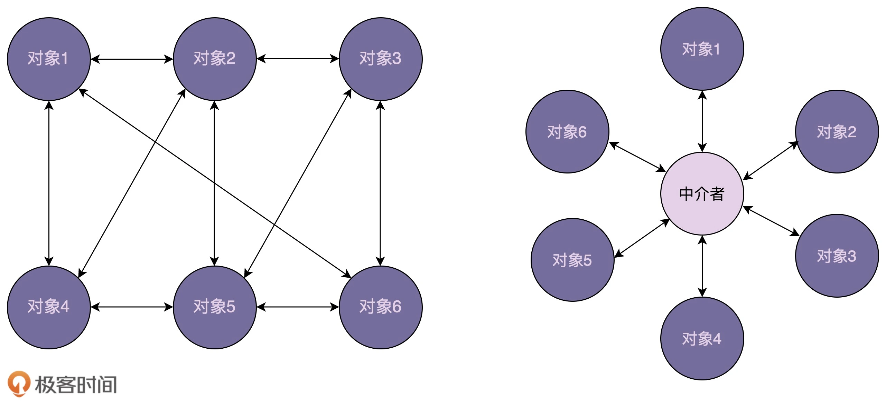
关于中介模式，有一个比较经典的例子不得不说，那就是航空管制。为了让飞机在飞行的时候互不干扰，每架飞机都需要知道其他飞机每时每刻的位置，这就需要时刻跟其他飞机通信。飞机通信形成的通信网络就会无比复杂。这个时候，我们通过引入“塔台”这样一个中介，让每架飞机只跟塔台来通信，发送自己的位置给塔台，由塔台来负责每架飞机的航线调度。这样就大大简化了通信网络。
刚刚举的是生活中的例子，我们再举一个跟编程开发相关的例子。假设我们有一个比较复杂的对话框，对话框中有很多控件，比如按钮、文本框、下拉框等。当我们对某个控件进行操作的时候，其他控件会做出相应的反应，比如，我们在下拉框中选择“注册”，注册相关的控件就会显示在对话框中。如果我们在下拉框中选择“登陆”，登陆相关的控件就会显示在对话框中。
按照通常我们习惯的 UI 界面的开发方式，我们将刚刚的需求用代码实现出来，就是下面这个样子。在这种实现方式中，控件和控件之间互相操作、互相依赖。
1 2 3 4 5 6 7 8 9 10 11 12 13 14 15 16 17 18 19 20 21 22 23 24 25 26 27 28 29 30 31 32 33 34 35 36 37 38 39 40 41 public class UIControl { private static final String LOGIN_BTN_ID = "login_btn" ; private static final String REG_BTN_ID = "reg_btn" ; private static final String USERNAME_INPUT_ID = "username_input" ; private static final String PASSWORD_INPUT_ID = "pswd_input" ; private static final String REPEATED_PASSWORD_INPUT_ID = "repeated_pswd_input" ; private static final String HINT_TEXT_ID = "hint_text" ; private static final String SELECTION_ID = "selection" ; public static void main (String[] args) { Button loginButton = (Button)findViewById(LOGIN_BTN_ID); Button regButton = (Button)findViewById(REG_BTN_ID); Input usernameInput = (Input)findViewById(USERNAME_INPUT_ID); Input passwordInput = (Input)findViewById(PASSWORD_INPUT_ID); Input repeatedPswdInput = (Input)findViewById(REPEATED_PASSWORD_INPUT_ID); Text hintText = (Text)findViewById(HINT_TEXT_ID); Selection selection = (Selection)findViewById(SELECTION_ID); loginButton.setOnClickListener(new OnClickListener () { @Override public void onClick (View v) { String username = usernameInput.text(); String password = passwordInput.text(); } }); regButton.setOnClickListener(new OnClickListener () { @Override public void onClick (View v) { } }); } }
我们再按照中介模式，将上面的代码重新实现一下。在新的代码实现中，各个控件只跟中介对象交互，中介对象负责所有业务逻辑的处理。
1 2 3 4 5 6 7 8 9 10 11 12 13 14 15 16 17 18 19 20 21 22 23 24 25 26 27 28 29 30 31 32 33 34 35 36 37 38 39 40 41 42 43 44 45 46 47 48 49 50 51 52 53 54 55 56 57 58 59 60 61 62 63 64 65 66 67 68 69 70 71 72 73 74 75 76 77 78 79 80 81 82 83 84 public interface Mediator { void handleEvent (Component component, String event) ; } public class LandingPageDialog implements Mediator { private Button loginButton; private Button regButton; private Selection selection; private Input usernameInput; private Input passwordInput; private Input repeatedPswdInput; private Text hintText; @Override public void handleEvent (Component component, String event) { if (component.equals(loginButton)) { String username = usernameInput.text(); String password = passwordInput.text(); } else if (component.equals(regButton)) { } else if (component.equals(selection)) { String selectedItem = selection.select(); if (selectedItem.equals("login" )) { usernameInput.show(); passwordInput.show(); repeatedPswdInput.hide(); hintText.hide(); } else if (selectedItem.equals("register" )) { } } } } public class UIControl { private static final String LOGIN_BTN_ID = "login_btn" ; private static final String REG_BTN_ID = "reg_btn" ; private static final String USERNAME_INPUT_ID = "username_input" ; private static final String PASSWORD_INPUT_ID = "pswd_input" ; private static final String REPEATED_PASSWORD_INPUT_ID = "repeated_pswd_input" ; private static final String HINT_TEXT_ID = "hint_text" ; private static final String SELECTION_ID = "selection" ; public static void main (String[] args) { Button loginButton = (Button)findViewById(LOGIN_BTN_ID); Button regButton = (Button)findViewById(REG_BTN_ID); Input usernameInput = (Input)findViewById(USERNAME_INPUT_ID); Input passwordInput = (Input)findViewById(PASSWORD_INPUT_ID); Input repeatedPswdInput = (Input)findViewById(REPEATED_PASSWORD_INPUT_ID); Text hintText = (Text)findViewById(HINT_TEXT_ID); Selection selection = (Selection)findViewById(SELECTION_ID); Mediator dialog = new LandingPageDialog (); dialog.setLoginButton(loginButton); dialog.setRegButton(regButton); dialog.setUsernameInput(usernameInput); dialog.setPasswordInput(passwordInput); dialog.setRepeatedPswdInput(repeatedPswdInput); dialog.setHintText(hintText); dialog.setSelection(selection); loginButton.setOnClickListener(new OnClickListener () { @Override public void onClick (View v) { dialog.handleEvent(loginButton, "click" ); } }); regButton.setOnClickListener(new OnClickListener () { @Override public void onClick (View v) { dialog.handleEvent(regButton, "click" ); } }); } }
从代码中我们可以看出，原本业务逻辑会分散在各个控件中，现在都集中到了中介类中。实际上，这样做既有好处，也有坏处。好处是简化了控件之间的交互，坏处是中介类有可能会变成大而复杂的“上帝类”（God Class）。所以，在使用中介模式的时候，我们要根据实际的情况，平衡对象之间交互的复杂度和中介类本身的复杂度。
DI 容器实际上，DI 容器底层最基本的设计思路就是基于工厂模式的。DI 容器相当于一个大的工厂类，负责在程序启动的时候，根据配置（要创建哪些类对象，每个类对象的创建需要依赖哪些其他类对象）事先创建好对象。当应用程序需要使用某个类对象的时候，直接从容器中获取即可。正是因为它持有一堆对象，所以这个框架才被称为“容器”。
DI 容器相对于工厂模式的例子来说，它处理的是更大的对象创建工程。工厂模式中，一个工厂类只负责某个类对象或者某一组相关类对象（继承自同一抽象类或者接口的子类）的创建，而 DI 容器负责的是整个应用中所有类对象的创建。
除此之外，DI 容器负责的事情要比单纯的工厂模式要多。比如，它还包括配置的解析、对象生命周期的管理。接下来，我们就详细讲讲，一个简单的 DI 容器应该包含哪些核心功能。
一个简单的 DI 容器的核心功能一般有三个：配置解析、对象创建和对象生命周期管理 。
工厂模式中，工厂类要创建哪个类对象是事先确定好的，并且是写死在工厂类代码中的。作为一个通用的框架来说，框架代码跟应用代码应该是高度解耦的，DI 容器事先并不知道应用会创建哪些对象，不可能把某个应用要创建的对象写死在框架代码中。所以，我们需要通过一种形式，让应用告知 DI 容器要创建哪些对象，这种形式就是我们要讲的配置。
我们将需要由 DI 容器来创建的类对象和创建类对象的必要信息（使用哪个构造函数以及对应的构造函数参数都是什么等等），放到配置文件中。容器读取配置文件，根据配置文件提供的信息来创建对象。
下面是一个典型的 Spring 容器的配置文件。Spring 容器读取这个配置文件，解析出要创建的两个对象：rateLimiter 和 redisCounter，并且得到两者的依赖关系：rateLimiter 依赖 redisCounter。
1 2 3 4 5 6 7 8 9 10 11 12 13 14 15 16 17 18 19 20 21 22 23 24 25 26 27 28 29 30 31 32 33 public class RateLimiter { private RedisCounter redisCounter; public RateLimiter (RedisCounter redisCounter) { this .redisCounter = redisCounter; } public void test () { System.out.println("Hello World!" ); } } public class RedisCounter { private String ipAddress; private int port; public RedisCounter (String ipAddress, int port) { this .ipAddress = ipAddress; this .port = port; } } 配置文件beans.xml： <beans> <bean id="rateLimiter" class="com.xzg.RateLimiter" > <constructor-arg ref="redisCounter" /> </bean> <bean id="redisCounter" class="com.xzg.redisCounter" > <constructor-arg type="String" value="127.0.0.1" > <constructor-arg type="int" value=1234 > </bean> </beans>
在 DI 容器中，如果我们给每个类都对应创建一个工厂类，那项目中类的个数会成倍增加，这会增加代码的维护成本。要解决这个问题并不难。我们只需要将所有类对象的创建都放到一个工厂类中完成就可以了，比如 BeansFactory。
通过“反射”这种机制，它能在程序运行的过程中，动态地加载类、创建对象，不需要事先在代码中写死要创建哪些对象。所以，不管是创建一个对象还是十个对象，BeansFactory 工厂类代码都是一样的。
简单工厂模式有两种实现方式，一种是每次都返回新创建的对象，另一种是每次都返回同一个事先创建好的对象，也就是所谓的单例对象。在 Spring 框架中，我们可以通过配置 scope 属性，来区分这两种不同类型的对象。scope=prototype 表示返回新创建的对象，scope=singleton 表示返回单例对象。
除此之外，我们还可以配置对象是否支持懒加载。如果 lazy-init=true，对象在真正被使用到的时候（比如：BeansFactory.getBean(“userService”)）才被被创建；如果 lazy-init=false，对象在应用启动的时候就事先创建好。
不仅如此，我们还可以配置对象的 init-method 和 destroy-method 方法，比如 init-method=loadProperties()，destroy-method=updateConfigFile()。DI 容器在创建好对象之后，会主动调用 init-method 属性指定的方法来初始化对象。在对象被最终销毁之前，DI 容器会主动调用 destroy-method 属性指定的方法来做一些清理工作，比如释放数据库连接池、关闭文件。
DI 容器用 Java 语言来实现一个简单的 DI 容器，核心逻辑只需要包括这样两个部分：配置文件解析、根据配置文件通过“反射”语法来创建对象。
像 Spring 框架这样的 DI 容器，它支持的配置格式非常灵活和复杂。为了简化代码实现，重点讲解原理，在最小原型中，我们只支持下面配置文件中涉及的配置语法。
beans.xml 1 2 3 4 5 6 7 8 9 10 <beans > <bean id ="rateLimiter" class ="com.xzg.RateLimiter" > <constructor-arg ref ="redisCounter" /> </bean > <bean id ="redisCounter" class ="com.xzg.redisCounter" scope ="singleton" lazy-init ="true" > <constructor-arg type ="String" value ="127.0.0.1" > <constructor-arg type ="int" value =1234 > </bean > </bean
最小原型的使用方式跟 Spring 框架非常类似，示例代码如下所示：
1 2 3 4 5 6 7 8 9 public class Demo { public static void main (String[] args) { ApplicationContext applicationContext = new ClassPathXmlApplicationContext ( "beans.xml" ); RateLimiter rateLimiter = (RateLimiter) applicationContext.getBean("rateLimiter" ); rateLimiter.test(); } }
面向对象设计的最后一步是：组装类并提供执行入口。在这里，执行入口就是一组暴露给外部使用的接口和类。通过刚刚的最小原型使用示例代码，可以看出，执行入口主要包含两部分：ApplicationContext 和 ClassPathXmlApplicationContext。其中，ApplicationContext 是接口，ClassPathXmlApplicationContext 是接口的实现类。两个类具体实现如下所示：
1 2 3 4 5 6 7 8 9 10 11 12 13 14 15 16 17 18 19 20 21 22 23 24 25 26 27 28 29 30 31 32 33 34 35 36 37 38 39 public interface ApplicationContext { Object getBean (String beanId) ; } public class ClassPathXmlApplicationContext implements ApplicationContext { private BeansFactory beansFactory; private BeanConfigParser beanConfigParser; public ClassPathXmlApplicationContext (String configLocation) { this .beansFactory = new BeansFactory (); this .beanConfigParser = new XmlBeanConfigParser (); loadBeanDefinitions(configLocation); } private void loadBeanDefinitions (String configLocation) { InputStream in = null ; try { in = this .getClass().getResourceAsStream("/" + configLocation); if (in == null ) { throw new RuntimeException ("Can not find config file: " + configLocation); } List<BeanDefinition> beanDefinitions = beanConfigParser.parse(in); beansFactory.addBeanDefinitions(beanDefinitions); } finally { if (in != null ) { try { in.close(); } catch (IOException e) { } } } } @Override public Object getBean (String beanId) { return beansFactory.getBean(beanId); } }
上面的代码中，我们可以看出，ClassPathXmlApplicationContext 负责组装 BeansFactory和 BeanConfigParser 两个类，串联执行流程：从 classpath 中加载 XML 格式的配置文件，通过 BeanConfigParser 解析为统一的 BeanDefinition 格式，然后，BeansFactory 根据 BeanDefinition 来创建对象。
配置文件解析主要包含 BeanConfigParser 接口和 XmlBeanConfigParser 实现类，负责将配置文件解析为 BeanDefinition 结构，以便 BeansFactory 根据这个结构来创建对象。配置文件的解析比较繁琐，不是重点，所以这里我只给出两个类的大致设计思路，并未给出具体的实现代码。具体的代码框架如下所示：
1 2 3 4 5 6 7 8 9 10 11 12 13 14 15 16 17 18 19 20 21 22 23 24 25 26 27 28 29 30 31 32 33 34 35 36 37 38 39 40 41 42 43 44 45 46 47 48 49 public interface BeanConfigParser { List<BeanDefinition> parse (InputStream inputStream) ; List<BeanDefinition> parse (String configContent) ; } public class XmlBeanConfigParser implements BeanConfigParser { @Override public List<BeanDefinition> parse (InputStream inputStream) { String content = null ; return parse(content); } @Override public List<BeanDefinition> parse (String configContent) { List<BeanDefinition> beanDefinitions = new ArrayList <>(); return beanDefinitions; } } public class BeanDefinition { private String id; private String className; private List<ConstructorArg> constructorArgs = new ArrayList <>(); private Scope scope = Scope.SINGLETON; private boolean lazyInit = false ; public boolean isSingleton () { return scope.equals(Scope.SINGLETON); } public static enum Scope { SINGLETON, PROTOTYPE } public static class ConstructorArg { private boolean isRef; private Class type; private Object arg; } }
最后，我们来看，BeansFactory 是如何设计和实现的。这也是我们这个 DI 容器最核心的一个类了。它负责根据从配置文件解析得到的 BeanDefinition 来创建对象。
如果对象的 scope 属性是 singleton，那对象创建之后会缓存在 singletonObjects 这样一个 map 中，下次再请求此对象的时候，直接从 map 中取出返回，不需要重新创建。如果对象的 scope 属性是 prototype，那每次请求对象，BeansFactory 都会创建一个新的对象返回。
实际上，BeansFactory 创建对象用到的主要技术点就是 Java 中的反射语法：一种动态加载类和创建对象的机制。JVM 在启动的时候会根据代码自动地加载类、创建对象。至于都要加载哪些类、创建哪些对象，这些都是在代码中写死的，或者说提前写好的。但是，如果某个对象的创建并不是写死在代码中，而是放到配置文件中，我们需要在程序运行期间，动态地根据配置文件来加载类、创建对象，那这部分工作就没法让 JVM 帮我们自动完成了，我们需要利用 Java 提供的反射语法自己去编写代码。
搞清楚了反射的原理，BeansFactory 的代码就不难看懂了。具体代码实现如下所示：
实现逻辑
1 2 3 4 5 6 7 8 9 10 11 12 13 14 15 16 17 18 19 20 21 22 23 24 25 26 27 28 29 30 31 32 33 34 35 36 37 38 39 40 41 42 43 44 45 46 47 48 49 50 51 52 53 54 55 56 57 58 59 60 61 62 63 64 65 66 67 68 public class BeansFactory { private ConcurrentHashMap<String, Object> singletonObjects = new ConcurrentHashMap <>(); private ConcurrentHashMap<String, BeanDefinition> beanDefinitions = new ConcurrentHashMap <>(); public void addBeanDefinitions (List<BeanDefinition> beanDefinitionList) { for (BeanDefinition beanDefinition : beanDefinitionList) { this .beanDefinitions.putIfAbsent(beanDefinition.getId(), beanDefinition); } for (BeanDefinition beanDefinition : beanDefinitionList) { if (beanDefinition.isLazyInit() == false && beanDefinition.isSingleton()) { createBean(beanDefinition); } } } public Object getBean (String beanId) { BeanDefinition beanDefinition = beanDefinitions.get(beanId); if (beanDefinition == null ) { throw new NoSuchBeanDefinitionException ("Bean is not defined: " + beanId); } return createBean(beanDefinition); } @VisibleForTesting protected Object createBean (BeanDefinition beanDefinition) { if (beanDefinition.isSingleton() && singletonObjects.contains(beanDefinition.getId())) { return singletonObjects.get(beanDefinition.getId()); } Object bean = null ; try { Class beanClass = Class.forName(beanDefinition.getClassName()); List<BeanDefinition.ConstructorArg> args = beanDefinition.getConstructorArgs(); if (args.isEmpty()) { bean = beanClass.newInstance(); } else { Class[] argClasses = new Class [args.size()]; Object[] argObjects = new Object [args.size()]; for (int i = 0 ; i < args.size(); ++i) { BeanDefinition.ConstructorArg arg = args.get(i); if (!arg.getIsRef()) { argClasses[i] = arg.getType(); argObjects[i] = arg.getArg(); } else { BeanDefinition refBeanDefinition = beanDefinitions.get(arg.getArg()); if (refBeanDefinition == null ) { throw new NoSuchBeanDefinitionException ("Bean is not defined: " + arg.getArg()); } argClasses[i] = Class.forName(refBeanDefinition.getClassName()); argObjects[i] = createBean(refBeanDefinition); } } bean = beanClass.getConstructor(argClasses).newInstance(argObjects); } } catch (ClassNotFoundException | IllegalAccessException | InstantiationException | NoSuchMethodException | InvocationTargetException e) { throw new BeanCreationFailureException ("" , e); } if (bean != null && beanDefinition.isSingleton()) { singletonObjects.putIfAbsent(beanDefinition.getId(), bean); return singletonObjects.get(beanDefinition.getId()); } return bean; } }
代理、桥接、装饰器、适配器，这 4 种模式是比较常用的结构型设计模式。它们的代码结构非常相似。笼统来说，它们都可以称为 Wrapper 模式，也就是通过 Wrapper 类二次封装原始类。
尽管代码结构相似，但这 4 种设计模式的用意完全不同，也就是说要解决的问题、应用场景不同，这也是它们的主要区别。这里我就简单说一下它们之间的区别。
代理模式 ：代理模式在不改变原始类接口的条件下，为原始类定义一个代理类，主要目的是控制访问，而非加强功能，这是它跟装饰器模式最大的不同。
桥接模式 ：桥接模式的目的是将接口部分和实现部分分离，从而让它们可以较为容易、也相对独立地加以改变。
装饰器模式 ：装饰者模式在不改变原始类接口的情况下，对原始类功能进行增强，并且支持多个装饰器的嵌套使用。
适配器模式 ：适配器模式是一种事后的补救策略。适配器提供跟原始类不同的接口，而代理模式、装饰器模式提供的都是跟原始类相同的接口。
在单例模式中，一个类只能创建一个对象，而在享元模式中，一个类可以创建多个对象，每个对象被多处代码引用共享。实际上，享元模式有点类似于之前讲到的单例的变体：多例。
我们前面也多次提到，区别两种设计模式，不能光看代码实现，而是要看设计意图，也就是要解决的问题。尽管从代码实现上来看，享元模式和多例有很多相似之处，但从设计意图上来看，它们是完全不同的。应用享元模式是为了对象复用，节省内存，而应用多例模式是为了限制对象的个数。
在享元模式的实现中，我们通过工厂类来缓存已经创建好的对象。这里的缓存实际上是存储的意思，跟我们平时所说的数据库缓存 CPU 缓存 MemCache 缓存是两回事。我们平时所讲的缓存，主要是为了提高访问效率，而非复用。
对象池、连接池（比如数据库连接池）、线程池等也是为了复用，像 C++ 这样的编程语言，内存的管理是由程序员负责的。为了避免频繁地进行对象创建和释放导致内存碎片，我们可以预先申请一片连续的内存空间，也就是这里说的对象池。每次创建对象时，我们从对象池中直接取出一个空闲对象来使用，对象使用完成之后，再放回到对象池中以供后续复用，而非直接释放掉。
虽然对象池、连接池、线程池、享元模式都是为了复用，但是，如果我们再细致地抠一抠“复用”这个字眼的话，对象池、连接池、线程池等池化技术中的“复用”和享元模式中的“复用”实际上是不同的概念。
池化技术中的“复用”可以理解为“重复使用”，主要目的是节省时间（比如从数据库池中取一个连接，不需要重新创建）。在任意时刻，每一个对象、连接、线程，并不会被多处使用，而是被一个使用者独占，当使用完成之后，放回到池中，再由其他使用者重复利用。享元模式中的“复用”可以理解为“共享使用”，在整个生命周期中，都是被所有使用者共享的，主要目的是节省空间。
从应用场景上来看，同步回调跟模板模式几乎一致。它们都是在一个大的算法骨架中，自由替换其中的某个步骤，起到代码复用和扩展的目的。而异步回调跟模板模式有较大差别，更像是观察者模式。
从代码实现上来看，回调和模板模式完全不同。回调基于组合关系来实现，把一个对象传递给另一个对象，是一种对象之间的关系；模板模式基于继承关系来实现，子类重写父类的抽象方法，是一种类之间的关系。
前面讲到，组合优于继承。实际上，这里也不例外。在代码实现上，回调相对于模板模式会更加灵活，主要体现在下面几点。
像 Java 这种只支持单继承的语言，基于模板模式编写的子类，已经继承了一个父类，不再具有继承的能力。
回调可以使用匿名类来创建回调对象，可以不用事先定义类；而模板模式针对不同的实现都要定义不同的子类。
如果某个类中定义了多个模板方法，每个方法都有对应的抽象方法，那即便我们只用到其中的一个模板方法，子类也必须实现所有的抽象方法。而回调就更加灵活，我们只需要往用到的模板方法中注入回调对象即可。
之前讲到观察者模式有多种实现方式。虽然经典的实现方式没法彻底解耦观察者和被观察者，观察者需要注册到被观察者中，被观察者状态更新需要调用观察者的 update() 方法。但是，在跨进程的实现方式中，我们可以利用消息队列实现彻底解耦，观察者和被观察者都只需要跟消息队列交互，观察者完全不知道被观察者的存在，被观察者也完全不知道观察者的存在。
中介模式也是为了解耦对象之间的交互，所有的参与者都只与中介进行交互。而观察者模式中的消息队列，就有点类似中介模式中的“中介”，观察者模式的中观察者和被观察者，就有点类似中介模式中的“参与者”。那问题来了：中介模式和观察者模式的区别在哪里呢？什么时候选择使用中介模式？什么时候选择使用观察者模式呢？
在观察者模式中，尽管一个参与者既可以是观察者，同时也可以是被观察者，但是，大部分情况下，交互关系往往都是单向的，一个参与者要么是观察者，要么是被观察者，不会兼具两种身份。也就是说，在观察者模式的应用场景中，参与者之间的交互关系比较有条理。
而中介模式正好相反。只有当参与者之间的交互关系错综复杂，维护成本很高的时候，我们才考虑使用中介模式。毕竟，中介模式的应用会带来一定的副作用，前面也讲到，它有可能会产生大而复杂的上帝类。除此之外，如果一个参与者状态的改变，其他参与者执行的操作有一定先后顺序的要求，这个时候，中介模式就可以利用中介类，通过先后调用不同参与者的方法，来实现顺序的控制，而观察者模式是无法实现这样的顺序要求的。
设计模式 设计模式（极客时间）